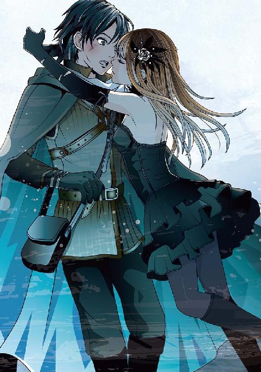
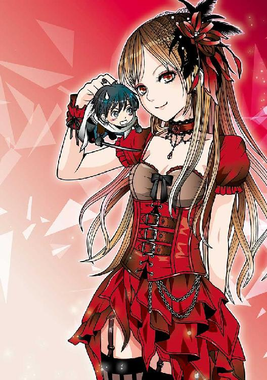
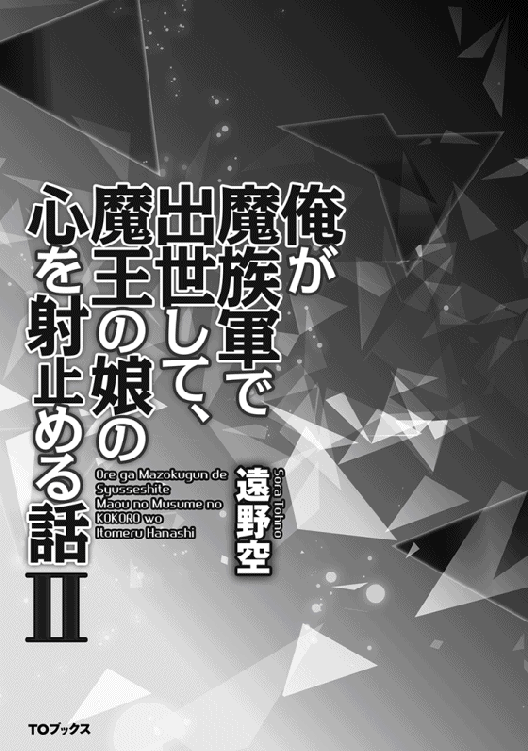
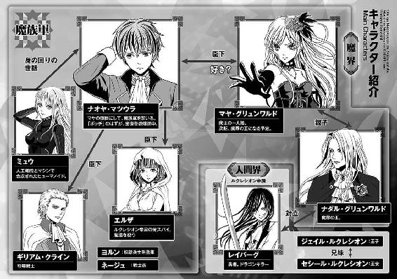
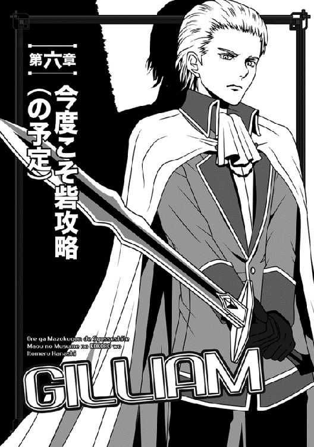
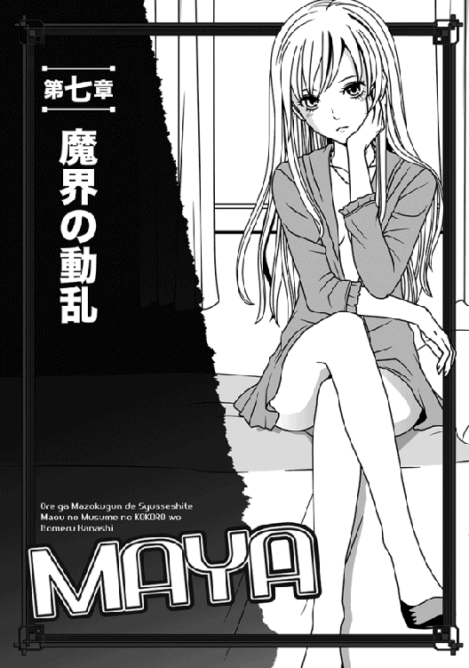
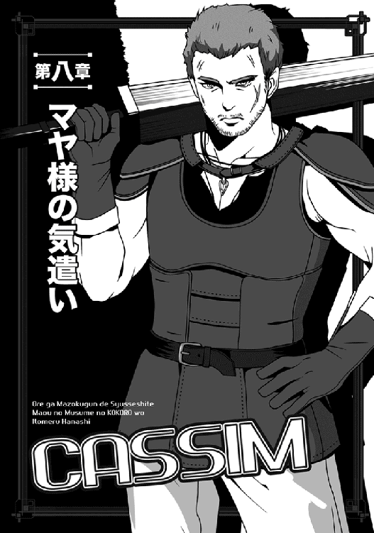
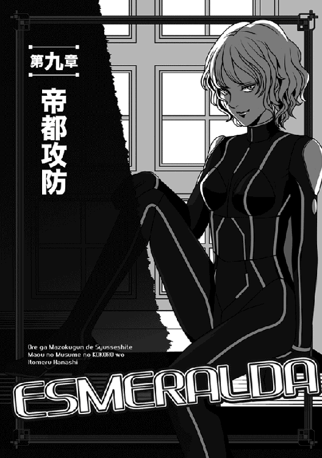
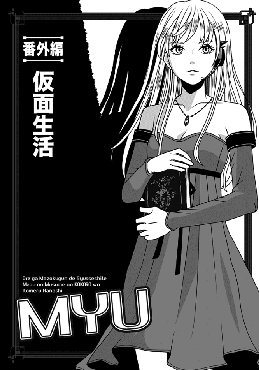

| 俺が魔族軍で出世して、魔王の娘の心を射止める話II | |
| 遠野空 | |
| (2015) | |
突如異世界に飛ばされた元中学生・ナオヤは、魔王の娘・マヤの直属軍での任務をこなしていた。魔王やら勇者やらの出現で日々は混沌を極めるが、どうにかこうにか魔界で出世していく。一番の問題は、うっかり惚れたマヤに翻弄されていることだが......。 今回の任務は人間たちの住む、ルクレシオン帝国との国境にある砦を再び攻略すること。指揮官となったナオヤは総計200名の魔族軍勢を率いるばかりか、砦がすっかり完成しており、任務達成は困難な模様。おまけに遠征にはマヤも同行するために不安は尽きない。 一方で、魔王の心配通り、魔界には動乱が近づいていた――。




Illustrated by Eri Kamijo
Designed by ansyyqdesign(yoko)

あの、レイバーグの侵入騒ぎから十日が過ぎた。
結果から先に言うと、レイバーグ達は逃走してしまい、魔王陛下はレッドドラゴンの群れを壊滅させて事態を収拾した。
まあ、形としては痛み分けになるのか？ どうやってか知らないが、向こうも飼い慣らしたレッドドラゴンを大量に失ったわけだし。
ただ......俺は魔王陛下と互角の斬り合いを演じたレイバーグが、どうしても忘れられずにいた。思えば俺も、とんでもないヤツを敵に回したな、くそっ。
ちなみにマヤ様はあの時、ご自分の部屋で爆睡していたらしい。そのまま朝まで、まっったく目覚めなかったとか。
あれだけの大騒ぎだったのに、色んな意味ですげーよ。
時に──人質が逃げた件については、とりあえず俺はお咎めナシとなった。
なぜなら、幸か不幸か、変態樽おっさんの戦士将グレイルが、陛下に「人質管理変更」の使いなどを無理に送りつけていたため、人質が逃げたのは亡きグレイルの落ち度、ということになったからだ。
グレイルを叱りつけるために急遽戻った陛下は、この機に乗じてグレイルに落ち度を押しつけたというわけだ。こういうところ、魔王陛下はただのイケメン魔族戦士じゃないと思う。なかなか策士でいらっしゃるようだ。
というのも、陛下はついでにグレイル亡き後の彼の一族をも処罰の対象とし、「おまえ達の所業、日頃から目に余る。家名を継ぐことは許さぬぞ」と申し渡したからだ。
俺は当初から「こんな奴でも戦士将とか務まるわけ？」と密かに思っていたのだが、それは誰よりも魔王陛下が頭を痛めていたことらしい。
ただ、魔族は無駄に歴史が長いせいか、有力な家系や諸将が、それこそ山のようにいるらしいのだな。そいつらは大抵、地位の割には大して働きもせず、余計な差し出口はするわ、利権を掠め取って甘い汁は吸おうとするわで、陛下にとっては目の上のたんこぶだそうな。
それでも、そいつらはそれぞれ無視できない数の私兵を擁し、いざという時はそれなりの数の兵士を動かせる。つまり、いざ戦となると、名門の当主はどうでもいいとして、そいつが擁する兵士は出してもらわないと困るわけだ。
だからこそ、陛下ほどの実力と権力があっても、なかなか断罪に及べないというわけ。
......ていうか、これらは全て、あの後で陛下に呼びつけられた俺が聞かされた、愚痴のようなものだが。
俺みたいな小物にそんな愚痴を聞かせていいのかと思うが、俺の顔を見て、陛下はその疑問を先んじて察したのだろう。
大真面目な顔でこう仰った。
「おまえにはできるだけ多くを知っておいてもらいたいのだ、ナオヤ。この先、予に何かあった時は、マヤが魔界を治めねばならぬ。そのような時が来れば、おまえが我が娘を支えることになろうからな」
有り難い話だが、さすがに陛下の崩御は考えたくないな。
あと、そんなことを言いつつ、俺が「ならば一つ質問がございます」と切り出した時、まだこっちが何も訊かないうちから、先手を打たれちまった。
「ナオヤの質問は予想できる」
陛下は勢い込んだ俺を宥めるように言った。
「だが......その疑問に答えるまでは、もう少し時間をくれぬか？ 予にも打ち明け難いことはあるのだ」
「それでは、お待ちしますが......もしかして、俺の疑問の答えとやらは、先日陛下から伺った、例の秘密と関係してますか？」
諦めきれずに尋ねた俺に、陛下はただ黙って頷いた。
○────○
ただし......その数日後で今度はマヤ様に呼ばれたわけだが、そこであの方から「父上がナオヤを呼びつけたそうだが、何故だ？」と尋ねられた時、もちろん俺は正直に答えなかった。
そもそも、陛下が打ち明けた「秘密」に関しては、誰にも話さないと約束していたし、実際俺も、今はマヤ様に教えない方がいいと思っている。
いや、むしろ永遠に教えないのが正解な気がしているほどだ。
しかし、「いや雑談ですよ」とトボけようものなら、鋭いこの方はたちまち何か秘密があると疑うだろう。
そこで俺は、「どうも陛下は......ご自分が亡き後のことを考え始めているらしく」などと、一部本当に聞かされた話を告げておいた。
陛下は、マヤ様のことを心配しているようだってさ。
これなら、嘘にもならないし。
「......父上ともあろうお方が、何ということを仰せか」
ソファーに俯せに横たわったマヤ様は、気持ちよさそうな表情と怒りの表情を器用に同居させていた。
「既に千年近くもその地位にある父だぞ？ 父上に仕えていたメイドの中にすら、同じくらい生きていた者もいるのだっ。それを何を弱気な......くっ......ナオヤ、もう少し力が入らないのかっ」
叱責された俺は、汗だくになった額を拭い、慌てて答えた。
「すいませんっ。でも、俺は結構、力を入れてますよっ」
すぐ下には、この世界の下着に当たる、レオタードちっくな薄着を着たマヤ様が、モデルのように横たわっているのだが──。
なぜか、最初ほど嬉しくない。
つか、手と腕が痺れてきた。この方、全力でニギニギしても、全然痛そうにしないしなっ。
......当初、「俺にもついに幸運がっ」とか思った俺は、大馬鹿だった。
それを言うなら、「俺のいた世界には、マッサージ専門の店なんかがあって」などと雑談に紛らわせて教えたのが、そもそもの間違いだったのだが。
いや、今後の打ち合わせのために私室に赴いた時、「魔界とナオヤのいた世界は、かなり違うのか？」などと質問されたので、いろいろと教えて差し上げたのである。で、その中の「マッサージ専門店」というのに、マヤ様はいたく興味を示されたのだった。
「まっさーじ？ そのようなものは、ここでは聞かないぞ。それは、どういうことをする店なのだ？」
──てさ。
この時、俺がエロい妄想を抱かなかったと言うと、それは嘘になる。
遙か昔、亡きかーちゃんによく「ナオヤ式独自マッサージ」を施していた俺は、今こそその手腕を活かす時だと思ったわけだ。
しかし、それは全くもって、無謀な挑戦だった。
背丈はそこそこあるものの、見かけはか細いローティーンの少女に見えるマヤ様だし、実際、触った時の感触も、肉が薄くてさほど筋肉があるようには思えない......なのに、どんだけ力を入れても、ケロッとしてんだもんなぁ。
いや、力を入れれば入れるほど気持よさげにしてくれるので、やりがいはあるのだが。
ソファーに俯せに横たわるマヤ様を見下ろすように、その脇の床で両膝をついているので、眼下に半裸の身体があってドキドキするし。
特に、このお尻の形が素晴らしい......て、主君の身体をじろじろ見るのはいけないけど。
と、とにかくっ。この調子では俺の体力が保たん。
「ところでマヤ様、打ち合わせはどうなりました？ 今のところ、雑談とマッサージしかしてないですが──ていうか、寝ないでくださいっ」
半分居眠りこいていたマヤ様に気付き、俺は憤慨して叫んだ。
そもそも、人がこんだけ力を振り絞っているのに居眠りて......やっぱりこの人、あらゆる意味ですげーな。
「よい息抜きになった。心なしか、身体が軽くなった気がする」
起き上がったマヤ様は、長い金髪を背中に払い、ご機嫌で腕をぐるぐる回していた。
一方、汗だくでそこら中の筋肉が痛み出した俺は、すげー身体が重くなった気がする。
本来、同じソファーに座らず、ちゃんと足元に跪くべきだろうが、そんな気力も失せたわっ。
「これはよいものだな......今後もナオヤにしてもらうとしよう」
おまけに、この恐ろしいセリフだ。
「いやいやっ。メイドやら侍女やらが山のようにいらっしゃるでしょう！ 彼女達に頼みましょう。それよりっ」
マヤ様が不満そうに睨むのに気付き、俺は慌てて話を戻す。
「砦攻略の件ですけど、以前の人数の倍を許可してくれたのは有り難いことですが、今日はまた、どのようなご用事の呼び出しですか？ 何か打ち合わせするようなことでも？」
「なんだ、その言い方は？ この主君であるマヤが呼び出すのが、不満のような言い方だな」
薄赤い瞳を細めたところで勘付き、俺は素早くソファーから逃げようとしたが、向こうの方が十倍は早かった。
はしっこい野良猫が裸足で逃げそうな、超反応である。
さっと手を伸ばして俺を捕まえると、後ろからがっちり抱え込み、唇の両端を摘んでぐぐっと引っ張ったりする。俺を自分並のタフさと勘違いしているのか、肉がちぎれるかと思ったほどだ。
「ほら、どうしたことだ、ナオヤ？ レイバーグの時に見せたという、超速の動きをこのマヤにも見せてみるがいい。うん？ こんなに簡単に捕まってどうするのだ、ほらほらっ」
すっっげー楽しそうな声と共に、ぐいぐい引っ張る。
「ひたい、ひたいっす！ つか、マジいたひっ」
「あはははっ。面白い顔になってるぞ、ナオヤ！」
あ、あんたな......と本気でむっとしかけたが、しかし背中に柔らかい膨らみが当たっていたりして、ちょっと嬉しい部分もあったりして。
例によってよい香りに包まれるし。女の子は、本気で怒りにくいから得だよな......まあ、仮に俺が本気で怒ったって、この方には手もなくあしらわれる気がするが。
さらに数分ほど俺の百面相を楽しんだ後、マヤ様はようやく解放してくれた。
ほっとして口元をさする俺に身体ごと顔を向け、あっさりと今日の用向きを伝える......女の子座りで。
「用とは言うのは簡単なことだ。......今回の遠征、マヤも同行することになったぞ」
「えっ」
「不服か？」
また機嫌が悪化しそうになったのをいち早く感じ取り、俺は焦って首を振る。
「いえ、そうではなくてっ。その場合、マヤ様が指揮官ということになるのでは？」
「それはないから安堵するといい、ナオヤ」
何を勘違いしたのか、マヤ様がなだめるように言う。
「あくまでも指揮官はナオヤだ。マヤは同行するだけだぞ......これは、実は父上の望みでもあってな」
「魔王陛下の!?」
「うむ。......どうも最近、父上は親族の有象無象と益々上手くいってないようなのだ。マヤの安全のためにも、ナオヤとできるだけ一緒にいるようにと言われた。それどころか、できれば城中でもナオヤのそばから離れるなと仰せだ。ご心配は嬉しいが、父上は少し大げさすぎる。マヤを闇討ちするような奴がいれば、思い知らせてくれるのに」
怒ったような口調ながら、満更でもなさそうだったし、実際、機嫌よく続けた。
「まあ、マヤとてこの城で遊んでいるよりは、実際の戦いに赴くナオヤに同行する方がよい。というわけで、よろしく頼むぞ、ナオヤ。なに、いざという時はマヤも力になろうではないか。以前誘拐されかけた時も、その直前に数十名は敵を冥界に送ってやったのだぞ？ ぜひ頼りにするがよいぞ！ あははっ」
切れ長の瞳を好戦的に輝かせ、豪傑笑いよろしく哄笑してくれた。
黙っていれば、か細い金髪の美少女なのに、この凄まじいギャップ！ 頼もしくはあるが、しかしそりゃあんた、陛下は俺に「娘の護衛を頼む」と言ってるのと同じじゃないのかぁ？
部屋に戻った俺は、早速、ギリアムを呼んでこの話を伝え、意見を訊いてみた。
なんだかんだ言って、今の俺が相談するとなると、ギリアムかミュウくらいだからな......ヨルンは物事を簡単に考えすぎるし、さすがにエルザとか、あと入ったばかりのネージュには相談しにくい。
無論、気のよい彼は、むしろ相談を受けたことを喜んでくれた。
ただし、彼の考えそのものは、かなり深刻だったな。
「それはおそらく......ダークプリンセスのお言葉以上に、魔王陛下の立場が微妙になっておられますね」
「そ、そうなのか？」
応接室で向き合っていた俺は、否応なく身を乗り出した。
「はい......我がクライン家も一応、下級貴族の端くれではありますので、その手の噂はつとに入ってきます」
「しかし、魔王陛下ほどのお人なら、いざとなれば敵対する馬鹿を皆殺しにできるんじゃない？」
「もちろんそのはずですし、だからこそ、彼らも不満があっても、最終的には陛下に従っていたのです。しかし最近、奇妙な噂を聞きました」
「というと？」
自然と喉が鳴り、俺は身を乗り出した。
別にギリアムはもったいつける気はないらしく、深刻そうに顔をしかめている。
「陛下の治世をよく思わない貴族の強硬派が、密かに同志に呼びかけて勢力を集めている、とか」
「おいおい、陛下が支配する、この魔界でかぁ？」
「そう、よりにもよってこの魔界で、です」
彼自身にも信じ難いことなのか、細面の顔に嫌悪を滲ませている。
「今は噂のみで、陛下も調査されている段階だそうですが、嫌な話です。ダークプリンセスの警護に神経を尖らせているのも、この噂と無関係ではありますまい」
「なるほど」
俺は喉の奥で唸る。
なかなか笑えない話だが、まぁまだ噂の段階だし、仮に一片の真実が含まれるとしても、どうせ最後は陛下によって潰されるさ。
......ヤバいとすれば、むしろ帝都の外に出るマヤ様本人か、あるいはマヤ様を預かった俺じゃないのか。どちらが狙われても、まっったく驚かんぞ。
あるいは、主従揃って消されたりとかな！
まあ、難易度で見れば『主従暗殺＞マヤ様暗殺＞＞＞＞＞＞＞＞＞＞＞＞＞俺をぶっ殺す！』だろうけど。
「うわぁ、縁起でもないなっ」
自分で想像して、自分で暗くなっちまった。
全く、タダでさえ豆腐メンタルが抜け切れてないってのに。
独白の意味がわからず、首を傾げるギリアムに、俺は首を振ってやった。臣下を不安がらせても仕方ない......どうせ心配したって事件が起きる時は起きるし。
「なんでもないよ。あ、そうだ！ ちょうどよかった......ギリアムに渡そうと思って、ずっと忘れてたんだよ」
「な、何をでございますか」
「いや、大したモンじゃないけど、あのリグルスが使ってた魔剣をな。戦利品だけど、俺一人の力じゃないし、まあ一番世話になってるギリアムに贈るよ」
......本当は、以前から世話になってたダヤンに渡したかったけどな、というセリフは、もちろん口には出さない。
「ええっ!?」
ギリアムは彼らしくもない、仰け反るような驚きっぷりを見せてくれた。
「......そんな驚くことかな？ 俺はもうマヤ様から拝領した魔法付与の刀があるし、リグルスの剣はちょっと体格にあわない。恩賞だと思ってほしいんだけど」
「あ、ありがとうございますっ、ありがとうございます！」
そこまで感激するかぁ？ と思うほどの大感激ぶりで、ギリアムは顔を真っ赤にして涙まで浮かべていた。すっげー気まずい。
「とにかく、今持ってくるからさ」
後で魔剣の相場とやらを聞いて、俺は飛び上がる羽目になるんだが......この時はいそいそと立ち上がった。
知らないってのは恐ろしいよ、うん。
○────○
さらに数日、奴隷や指揮のための二等戦士達をスカウトしまくり、俺はようやく準備を終えた。
人数としては、以前の二倍を数える、総計二百名の軍勢である。
当然、ヨルン達も前回通り、ついてきてくれる......ダヤンはもう、いないけどさ。
......それはともかく、人数が増えたとはいえ、まだこれじゃ全然足りないのも事実だ。
俺も、あくまでも奇襲を想定した攻略であり、まともな手段で砦を攻略できるとは思ってない。その策も、到着するまでに何とか固めないとな。
とにもかくにも、陽が昇ったばかりの今、帝都マヤの巨大な黒い門前に、俺の軍勢が集結した。
人数が増えた以外で、前回と大きく違うのは、俺のレベルがいつの間にか20に上がっていたことと（リグルス効果かね？）──。
軍勢の後ろに大勢の侍女達が完全武装で集結していて、巨大な御輿みたいなのを担いでいることだ。
驚いたことに、マヤ様はあの中で寝泊まりするらしい。
おまけに彼女達の一部は、真紅の生地に輝く二振りの剣とドラゴンの紋章......つまり、グリュンワルド家のでっかい旗まで掲げている。魔王直系の血筋がここにいますよと、大声で宣伝しているようなものだ。
「......せめて旗だけは、ここ出たら下ろしてもらわないと」
馬上の俺は、並んだギリアムにため息と共に囁いた。
「そうですね」
ギリアムも同情の目つきで頷く。
「魔王陛下のグリュンワルド家は、全世界の覇者たることを公に宣言しておられます。ですから、アレで普通と言えば普通なのですが」
「いやぁ」
俺はさすがに顔をしかめた。
「俺、陛下は大好きだけど、過去はそうであっても、今は厳密には違うんだからさ。やっぱここは一つ、目立たないようにそおっと」
『──ふむ、耳の痛い諫言だな』
「ぐわあっ」
「ひっ」
俺とギリアムは、二人揃って馬上で飛び上がりそうになった。
もちろん、聞き覚えのありすぎる渋い声がしたからだ。
慌てて馬上から飛び降りると、やはり魔王陛下その人が近付くところだった。颯爽たるスーツに黒マント姿であり、純白のクラバットもきちんと着けておられる。俺達の中で、お一人だけ劇画調だ。
ていうかさっ！ 俺、滅多に陛下への愚痴なんか言わないのに、何もこんな希少な時に来なくてもっ。
「そう、小さくならずともよい......おまえは正しいのだ、ナオヤ」
俺のびびりっぷりに、陛下は目を細めて笑った。跪こうとするのを制し、俺を手招きする。
「慌ただしい中すまぬが、少しだけ時間をくれぬか」
「そ、それはもちろんっ」
もちろん、俺は慌ててこっちから飛んでいった。
「──皆の者は休んでおれ」
という陛下の寛大なお言葉に、俺以外の兵士はあのかっこわるい拝礼をやめて、ほっと息を吐いていた。
そして......陛下は近寄った俺を手招きし、以前のマヤ様のように、隅っこの方へ連れていった。
「ナオヤ、覚えているか？ あのレイバーグとの一騎打ちの時、おまえは確か、途中で予を止めようとしたと思うが」
意外なことを言われ、俺は首を傾げた。
陛下の実力を知る俺が、あの時にそんなことを──いや、言ったな。
少し考えて思い出し、俺は一人で頷く。うん......確かに言ったぞ。俺は途中で嫌な予感がして、陛下とあいつが二度目に剣を交えるのを止めようとした。
レイバーグの野郎が頬に掠り傷を負い、陛下の上衣が少し裂けた時だったな。
とは言うものの、「陛下っ」と呼んだだけだが、まさかあれだけで察しておられたとは。
つか、実際にはあの後で別に陛下に何かあったわけじゃなし、本当に余計な心配だったわけで。
「確かに......止めようと致しました。分をわきまえずに、申し訳なく──」
「いや、責める気などない」
平身低頭で謝ろうとした俺を、陛下は首を振って止める。
「逆だ、ナオヤ。他の者はいざ知らず、おまえの場合は、ちょっとした予感でも無視せずに動いた方がよい──そう告げるつもりであった」
「いやぁ、俺には未来を予知するような力は」
「無いとは断言できぬ。なぜならおまえは、この世界に望まれた戦士だからだ......おそらく、あのレイバーグとやらもな」
「うっ」
ここで俺が、すぐにもう一度否定しなかったのは、確か剣を交えたレイバーグも似たようなことを言ってたのと......俺が陛下からある秘密を聞いているからだ。
その秘密は俺のことではないが、ひょっとして関係はあるのかもしれない。
しかし、陛下のお顔は明らかにこれ以上の質問を拒否していた。まだ話す時期ではない、ということかもしれない。
俺はやむなく、恭しく低頭して言った。
「わかりました。......何か奇妙な予感を抱いた時は、注意することにします」
「うむ、そうしてもらいたい。特に、これから先はな」
陛下の声は一層小さくなり、離れた場所からこちらを窺うギリアム達ですら意識しているように見える。
「おまえの臣下には貴族戦士もいるようだ。我が娘を預けた理由も、そろそろ耳に入っていることであろう？」
「ご明察です......もっとも、俺のそばにいても、マヤ様が安全だとは言えないと思いますが」
情けないとは思ったが、正直に話す。
いざとなれば全力でお守りするつもりではあるが、だからと言っていつも以前のように何とかなるとは限らない。驚いたのは、陛下の反応である。
このお方はじっと俺の目を覗き込むと、きっぱりと断言したのだ。
「いや、おまえと一緒にいるのが、一番安全だ。少なくとも、おまえが守りきれないような事態が起きれば、もはや娘の命運は尽きたと見てよいだろう」
「いや、それはあまりに──」
「信じられずともよいから、予の言葉を覚えておいてほしい、ナオヤ。今後何があろうと、マヤの味方でいてやってくれ。予は、娘の命をおまえに預ける」
あまりにも真剣な声音に、俺は絶句してしまった。
無論、ここまで言われたら、否やはない。
「わかりました......いえ、俺は自分の実力を知ってますから、どんな時でも安請け合いはしませんが、とにかくマヤ様のために全力を尽くすと約束しますよ」
「それでよいとも！ 感謝するぞ、ナオヤ」
陛下の手が俺の肩をぐっと握る。
何かこう、触れられただけで巨大なエネルギーが流れ込んできたような気分で、俺は震えるのを堪えるだけで精一杯だった。
つか、俺を見る目が真紅に染まってるんですけど！ こえーよっ。
「父上！ ナオヤっ」
呼ばれた途端、苦笑して陛下が手を放し、ようやく俺は息を吐いた。
......すげー。なんか、セフィ○スに間近でガン見されたような気分だ。いや、外見はともかく、雰囲気は似てらっしゃるのだな、このお方。
「二人で何を話していらっしゃいます？」
漆黒のコルセットドレス姿のマヤ様が来て、不思議そうに首を傾げた。
「おまえのことを頼んでおいたのだよ、マヤ。ナオヤに預けるわけだからな。父親としては、きちんと頼んでおかねばなるまい」
言われたマヤ様は、不服そうに唇を尖らせた。
「父上はいつまで経ってもマヤを子供扱いなさいます。もう十三歳ですのに」
「そうだな......いつの間にか、大きくなった」
しみじみとそう言われると、陛下は軽くマヤ様を抱き締め、額にキスなどした。
「我が身をいたわり、無茶をしないようにな。ナオヤの進言には、いつも謙虚に耳を傾けるのだぞ」
「今日の父上は、本当に心配が過ぎますぞ」
くすぐったそうな笑顔で答え、マヤ様は陛下の頬にそっと触れた。
しばらくして、少し上気したお顔で俺を振り向く。
「さて、そろそろ行こうではないか、ナオヤ」
......半時間後、今回はなんと魔王陛下に見送られ、俺達は帝都マヤから出陣した。
驚いたことに、陛下は門の外まで見送りに来られ、姿が見えなくなるまで、ずっとそこに立っておられた。
朝霧に霞むように消えていく黒衣の陛下を、俺は何度も振り返って確かめてしまった。
○────○
帝都を離れてからは、気味が悪いほど順調にいった。
正直俺は、どうせまた前みたいに途中で問題が起きるんじゃないかと疑っていたが、これがなんと──何事もなく平穏に日々が過ぎてしまったのだ。
今回は、前回にも増して斥候を放ちまくったが、結果はことごとくクリア......間諜や怪しいヤツなど、全く見かけなかった。
お陰で、もう明日には着いてしまう......こう順調だと、なんだか後が怖い。
まあ、唯一困ったことと言えば、同行中のマヤ様は別にあの御輿みたいな奴に常時入ってるわけではなく、普段はずっと俺の横に馬を並べていたことである。あの御輿は組み立て式になっていて、夜休む時だけ侍女がささっと組み立てるらしい。
いわば、一種のユニットハウスだそうな。
出立時にああやって担いでいたのは、「ダークプリンセスが陣中にいるんで、おまえらは控えよ！」という意味らしい。つまり、普段は折り畳んで運んでいると。
話が逸れたが──なぜ、マヤ様が隣にいると困るかというと、ダークプリンセスの異名は魔界中に轟いているらしく、みんなこの方を恐れて近付かないのだな。
それでも平然と俺のそばから離れないのは、ミュウくらいのものである。
側近であるはずのギリアムなどは、過去のトラウマからか、マヤ様の半径五メートル以内には絶対に寄ってこなかったほどだ。
行軍中、彼にこの大陸の歴史とやらを訊こうと思ってたのにさ。
......いや、出陣前から俺は、レイバーグの野郎が残した「もし興味があるなら、この大陸の歴史を詳しく調べてみるといいよ」ってセリフが気になってはいたけど、自分で調べても、イマイチはっきりしないんだ、大陸の歴史とやらは。
だから詳しそうなギリアムに尋ねたかったのだが、この調子では当分、無理そうだ。
「うん、今回は順調そうではないか。おまえも嬉しいであろう、ナオヤ？」
人の気も知らずに、マヤ様が明るく言う。
最初のコルセットドレス姿もたいがい戦場へ赴く格好ではないが、今なんか黒いショートパンツに、同じ色のタンクトップみたいな上衣だけだ。おまけにそのタンクトップもどきは、やっぱり微妙にポッチみたいな場所がわかってしまう。
さらにだよ、ショートパンツみたいなヤツはなんか見ようによってはパンティーみたいに見えるわ、しかも例によって視線を凝らしていると、エルザの時みたいにうっすらと縦筋がわかったりするわで、行軍どころではない。
全く、末恐ろしい姿である。俺の元の世界だと、あんな格好で街を歩いていたら、○ルノ規制派が大挙して飛んで来そうだ。
これは、チラ見するなって方が無理だろう。
「ナオヤ、聞いているか？ マヤの言葉を無視するでない」
「あたっ。蹴らないでくださいよ」
気安く俺の足を足蹴にするマヤ様に、反射的に眉根を寄せた。
本人はヤワく蹴ってるつもりだろうが、実はキックボクサーの様子見キックくらいの威力がある気がする。足がじんじんするからな。
「いや、前回からかなり時間が経っているんで、砦の建築が進んでたら嫌だなぁと......かように考えてました」
縦筋の件は胸に秘め、二割くらいの真実を告げておく。横を歩くミュウがちらっと俺を見たが、罪の無い嘘だし、許してくれ。
事実、前回の時はまだ「拡張途中の工事中砦」だったらしいが......あれからだいぶ日にちが過ぎたもんな。どうなっているやら、見当もつかない。
「ああ、それに関してはよいニュースがあるぞ」
マヤ様はすぐに機嫌を直して破顔した。
「出立前、新たな情報が入っていたのだ。そういえば、ナオヤに伝えるつもりが忘れていた」
「へぇえ？ すると、朗報でも」
「うむ。これはおまえも満足するはずだぞ。なんと、砦はもう完成しているらしい」
「......は？」
俺の不審顔に気付かず、マヤ様はうきうきと続けた。
「しかもだ、敵の兵力もどうやら増強されているようだぞ。上手くすれば、我々の兵力を上回るかもしれぬ」
ナニイッテンノ、コノヒト！
「えーと」
あまりに嬉しそうに言うので、俺は脳内で慎重に言葉を吟味した後、恐る恐る訊き返した。
「......それのどこが、『よいニュース』なのでしょう？」
「よいニュースではないか」
マヤ様は全く悪びれなかった。
「強力な敵、あるいは有り余る敵と戦うことこそ、戦士の本分であろう。我々はまさに、そういう敵とぶつかるということだ。これがめでたいと言わずして、なんとする。ナオヤも、肉の盾として使われていた時、何度も大軍に突撃したはずだぞ」
う、うわぁ、駄目だこの人。
──早く何とかしないと、とまでは思わないが、近いことは思ったね！ ったく、落胆のあまり、落馬しそうになったじゃないか。
俺の好みは大軍に突っ込むことじゃなくて、楽して勝つことなんだって。肉の盾時代だって、別に突撃が好きだったわけじゃないからな。
そう言えないのが、臣下の辛さだが。
「ま、まあ......問題の砦の様子を聞けば、今の実情もわかるでしょう。そろそろ、放った斥候も戻ってくるでしょうし」
結局俺は、当たり障りのないことを言って誤魔化しておいた。
午後遅くになり、ヨルンを始めとする斥候達が、次々に戻ってきた。
彼ら......いや、エルザにも頼んでいたが、とにかくこいつらはみんな、本当に例外なく暗い顔で戻ってきてくれた。一番わかりやすいのは、最後に戻ってきたエルザの一言だろう。
この元間諜のねーちゃんは、俺の顔を見るなり、勢い込んで言ってくれたのだ。
「このままあそこに突っ込んだら、全員、討ち死にするわ！」
──ってさ。
ああ、順調にいくはずないと思ったよ......。
「戻ったって命令違反で殺されるって。もうわかってるだろ、そんなこと？」
「待て、ナオヤ。その命令を出した当事者は、ここにいるのだぞ。あたかもマヤが諸悪の根源みたいに言うでない」
むくれたマヤ様がすかさず隣から口を出した。
そういや、元々の命令を出したのはこの人なのだった。しかも本人はさっぱり心配してそうにないのが、困ったもんだわな。
頬を膨らませて怒る様子も可愛いので、全然腹が立たない俺も、全く困ったもんだが。
ほけっと考えていたら、続けざまに言われた。
「そもそも父上も、『ナオヤに任せておけば安心だ』と仰せだった。なのに、本人がじめっとした暗い顔をしていてなんとする!?」
「ほっといてください！ これは地顔ですよっ」
思わず言い返し、俺は慌てて周りを見る。
ダークプリンセスが俺と話す場面がよほど珍しいのか、兵も将もこっちに大注目していた。特に、新参のネージュの驚き顔が気になる。
遠慮ナシにじろじろ見過ぎだろ。
「あの、マヤ様。とりあえずそろそろ日も暮れます。打ち合わせのためにも、少し皆と離れて話しませんか？」
「うん、それは賛成だ」
マヤ様は即答した。
「ナオヤの周りは、どうも女が多くて駄目だな」
膨れっ面のまま、こちらを窺うエルザやミュウやネージュなどを見やる。ミュウ以外は、あからさまにさっと目を逸らしたね！
「それはまた、どうしてでしょう？ 俺の記憶からして、魔族軍の中で見たら、女子率はむしろ少なめだと思いますが」
首を傾げて訊き返すと、マヤ様はきょとんとして見返した。
「えっ」
薄赤い瞳を瞬き、不思議そうに問う。
「そうだな、確かに少ない方だ。......どうしてなのだ？」
「いえ、俺が訊いてるんですが」
問い返しても顔をしかめて考え込んでいるので、俺は肩をすくめて言った。
「まあ、とにかく我々だけで」
「う、うん」
とはいえ、所詮は行軍中の田舎街道沿いだ。
宿があるわけではなし、全軍を停止させ、俺はマヤ様のユニットハウス......みたいな御輿部屋に移った。
無論、俺が要請したわけじゃなく、マヤ様の提案である。
侍女達は慣れているのか、ものの十五分ほどで持ち運んできた木材パーツを組み立て、あっという間に臨時の部屋が出現した。
ナントカカプセルの利便性には負けるが、実に便利である。
さすがに、部屋の中は小さな丸テーブルとベッドくらいしかなかったが、打ち合わせというか軍議をするなら、これで十分だ。俺だけじゃ話にならないので、ギリアムも呼んで三名で話し合うことにした。
マヤ様と一緒に軍議と聞き、ギリアムの顔色が随分と悪かったが、まあ今回は仕方ない。
メイド服の侍女達が紅茶をそれぞれの前に置き、一礼して退出していった。
それを待っていたかのように、俺は急きょ作った敵の砦の図面を持ち出す。ちなみに、情報が古いので、この部屋を組み立てている間、斥候役のヨルン達に新たな建設箇所をペンで書き加えてもらってある。
それを広げて見た途端、俺は声が洩れたね。
「うわぁ......こりゃホントに完成しちゃってるし」
伝聞に過ぎないが、問題の砦は国境付近に連なる低い山の切れ目にある。
そこを通る軍道の、なんとど真ん中に建てられているのだ。
ただし、以前はまだ、砦の左右に城壁まではできてなかったはずだ。だからこそ、魔族軍も被害を出しつつも、砦の左右を強引に通過して、帝国領へ出て行くことができた。
しかし今、この図面に書き加えられたペン書きの黒い線を見ると、もはや砦の左右にもきちんと城壁ができていて、完全に軍道を塞いでしまっている。
現時点で、この軍道は帝国によって実効支配されているのと同じだ。
「これは......まずいですね。どうせ即席で建てた石積みの城壁でしょうが、それでも我々程度の軍勢を迎え撃つには十分でしょう」
マヤ様への恐怖も忘れ、ギリアムは嘆息した。
「こうなると、もはや普通の城と変わりません。いや、普通の城より始末が悪いです。なにしろ敵は、東方向から来る敵のみに注意を払っていればよいのですから」
途端にマヤ様がギリアムを睨んだ。
「そこの者、いちいち不利な点ばかり挙げるでないっ」
「す、すいませんっ」
ギリアムはたちまちたじろいだ。
おまけにマヤ様はそんなギリアムをしげしげと見て、しれっと述べたりする。
「時にそなた......どうも見覚えがあると思ったら、あの時出荷場にいた男だな？ ふむ......元気そうで何よりだ」
真面目くさって頷いているが、ギリアムは魂の抜けたような顔で返事もできないようだった。まあ、あれだけインパクトのあることされたのに、相手は顔も覚えてないとなれば、無理もあるまい。
俺はもう慣れているので、いちいち驚かないけどな。
「ところで、ギリアム」
遠慮なく、二人に割り込む。
「この砦の左右に連なる山だけど......そう高くないように見えるよな、この図面じゃ」
「確かにさほどの山ではありませんが、しかし東側の斜面はほぼ垂直に近いのです。しかも、迂闊に山を登り始めたりすれば、砦から矢雨が降り注ぎましょう」
さらに、とギリアムは畳みかける。
「この砦を中心とした、かなり広い範囲で、マジックシフトが敷かれていると聞きます」
「何それ？」
「簡単に言うと、魔法を無効化させる複数の魔法陣です。有効範囲内では、何者も魔法を使えなくなります」
「むう」
俺は唸ったが、しかしどのみちそっちはあんまりアテにしてない。
「でも、この地形は使えるかもしれないと思うんだ。場合によっては、だけど」
野営した翌日、俺が率いる小規模な軍勢は、ついに問題の砦のごく近くまで到着してしまった。
軍勢を離れた場所に止め、まずは俺とギリアムとで砦に接近して遠望してみた。
......見るなり、「あ、こりゃ正攻法じゃ駄目だ」とわかった。
中央に、石材を組んだ土台の上に建てた円形の砦があり、防壁が左右に延びている。わかりやすく言えば、マントを着た野郎が、両腕を水平に伸ばしたみたいな外見である。
しかもその伸ばした腕（防壁）は、軍道となっていた山脈の切れ目を完全に通せんぼした形になっていて、もう見るからに人の行き来は不可能になっていた。
この砦を何とかしない限り、東から魔族が侵攻したいなら、もはや多大な労力を払って山を越えるくらいしかない。
どうでもいいが、俺達が観察している間に、敵の警護兵がこの辺りにまで警戒に出ているのに気付き、危うく冷や汗をかいた。
すぐにその場から逃げたが、それもこっちが向こうを先に見つけたお陰であり、もう少しで俺達の方も見つかっていただろう。
まあ、どうせいつかは見つかるんだろうが、俺の計画からすると、発見されるのは寸前の方がいいのだ。
......とにかく、これ以上計画を延ばすのは不可能らしいので、俺は早速、その夜に作戦を決行することにした。
深夜......全軍を三手に分けて進発させると、俺は自分の手勢五十名を率いて、山登りを開始していた。ただし、敵に見つかると面白くないので、砦からは十分に離れた場所を選んではいる。
しかしこの山は、幾ら標高が低いとはいえ、どう見ても数百メートルほどの高さはあり、おまけに比較的なだらかな場所であるここですら、傾斜がきつくて登りにくい。山道などというシャレたものは皆無であり、慰めといえばこの辺りには針葉樹に似た細い木（タリカというらしい）が生えているので、一応、人目には付きにくいことくらいだ。
しかし、周囲は雑草やら石ころやら得体の知れない植物やらが群生していて、革のブーツを履いた俺ですら、頻繁に足を取られる。
なぜかくっついてきたマヤ様が不平の一つも洩らさないのが、むしろ不思議なほどだった。
まあ、あのけろっとしたお顔からして、底ナシの体力を持つマヤ様は、この程度の斜面は楽勝なのかもしれないが。
数時間かけて山頂に着いた時、俺とギリアム以下、連れてきた二等戦士や奴隷達は、皆へとへとになっていた。
この時点で既に大幅に予定をオーバーしていてうんざりしたが、俺達は口数も少なく、そのまま砦の方へと移動する。山頂は斜面を登るよりは歩きやすかったが、やはりここでも一時間ほど飛んでしまった。
やっと砦を見下ろせる位置に接近した時には、さすがの俺も汗だくのよれよれになっていたほどだ。おまけに、敵は魔族軍と違ってなかなか用心深く、俺が求めていた位置には、ちゃんと警護の兵士が二人もいたんだな。
こっちに熱源を感知するセンサー内蔵のミュウがいなきゃ、先に見つかって警笛でも吹かれていたかもしれない。
幸い、気付かれぬうちに先に倒すことができたが......まあ、こんな場所に警護に寄越した上官を恨んでくれ......なまんだぶなまんだぶ。
「しかしアレだな......こっちに警護の兵士がいたなら、向こう側にもいるよな？」
やっと砦を見下ろす山の切れ目に近付き、俺は渋面で呟く。
「向こうの指揮官はネージュだけど、先に気付いてくれたかな？」
「大丈夫......でしょう」
細身のギリアムは、未だに息切れしつつ答えた。
「あの方の魔法の実力なら、敵を見つけるディテクションなど簡単に使えるはずです。我々と同じように、ちゃんと先に見つけているかと」
「ならいいんだけど」
俺はじりじりと切れ目の部分に進む。
ここからは慎重に行かないと、砦から見上げてる奴がいるかもしれないしな。
右手の帝国側の山腹はなだらかでそうでもないが、左手に見える魔界側の山の斜面は、途中で山肌が広範囲に抉れている。足でも滑らせて落ちたら、下手したら下界までまっさかさまだ。だからこそ、攻略も難しいんだけど。
じわじわと進み、やっとの思いで隅っこから砦の方を見下ろすと、俺の足下......数百メートルほど下は、モロに防壁のある場所だった。
一応、さほど高くないとはいえ、石材を組んだ防壁であり、上に兵士が行き交う通路もちゃんとある。加えて、巡回の兵士もうろうろしているときた！
やはり正面から行かなくて正解だった。
......とはいえ、どうせこのままでも、どうにもならないけどな。
俺は逆方向の切れ目の向こう、つまり南側の山頂に目を移してみた。
上手くすれば、先に着いているかと思ったが、暗い山頂に人の気配はないように見える。こっちの方が向こうの山よりやや高いので、暗くても見えそうなものだが。
「ナオヤ」
今まで大人しかったマヤ様が、急に俺を呼んだ。
「なんでしょう？」
「......おまえの作戦では、この山の左右にロープを渡し、一気に中央の砦を攻めるということだったな」
「ええ、それが？」
「マヤなら可能かもしれないが、他にあんな遠くへロープを投げられる者がいるのか？ それとも、最初からマヤに頼むつもりだったのかな？」
何かを期待するような声でマヤ様は言う。
まあ、確かに砦のある場所──つまり、山の切れ目はどう見ても三百メートル以上はある。どんな剛力の人間がいて、何を投げたとしても、向こうまで届くわけない。
帝国側だって、山と山をロープで結ぶ奴がいるなんて、考慮にも入れてないはずだ。
「......俺の説明、あんまり聞いてなかったようですね」
俺はいたくがっかりした。
振り向いてミュウを呼ぶと、彼女はいつものようにさっと寄ってきてくれた。
「俺達には無理でも、その三百メートルを難なく投げられる人がここにいるんですよ。頼もしいミュウが！」
我がコトのように自慢して、俺はミュウの肩に手を触れた。
もちろん、このために既に彼女は長い長いロープの束を両肩に引っかけていたし、そのロープには事前にネージュに頼んで補強のための魔法もかけてある。後はこのロープを向こうの山に渡し、俺達が、山の高低差を利用して一気に滑り降りる。
砦本体の上空に来たらまたロープを垂らして下り、晴れて砦に突入という寸法である。
他にも手順はあるが、基本はそういう作戦だ。
途中で落ちたら笑えないし、下の兵士に気付かれる危険ももちろんある。かなり危険な方法だが、正面から馬鹿みたいに突撃するよりマシだ。
なぜかマヤ様がやたらと不機嫌な表情になったが、今更後に引けるか。
「しかし......肝心の向こう側のネージュ達が、まだ来てる様子がないな。ミュウ？」
俺は期待するようにミュウを見ると、囁くように教えてくれた。
「近付いてはいます。反応の数が五十なので、おそらくネージュさん達に間違いありません。敵の警護兵を倒した直後のようなので、あと少しでここからも見えるはずです」
「よしっ。それじゃ、ロープの端を固定して、準備に──」
言いかけた途端、いきなり喚き声がした。
「敵襲、敵襲ーーーっ」
「げっ」
俺は慌てて東、つまり魔界領の方を見た。
二等戦士数名に率いられ、ボンゴを含む奴隷戦士達が、遠くから姿を見せたところだった。それぞれの喚き声まで微かに聞こえるほどだ。特に、ボンゴの「じねぇえええ」という声は一際よく聞こえる。
「お、俺はまだ合図も出してないぞっ。準備完了と同時に火矢を放つから、それが陽動作戦開始って、ちゃんと言ったはずなのに！」
思わず愚痴ったが、ひょっとすると何か別のものを合図と見間違えたのかもしれない。
いずれにせよ、俺の思惑より早く陽動が始まっちまった。
のっけからこれか、くそっ。
そこから先は、めまぐるしくコトが運んだ。
その直後にネージュ達の姿を確認し、俺は初動の遅れを取り戻そうと、ロープの端に重りをくくりつけた奴を、ミュウに投げてもらった。
これはホントに、予想以上にあっさり上手くいき、ミュウが頭上で恐ろしい勢いで旋回させてから投げたロープは、重し代わりの石が嘘のように軽々と飛び、あっさり向こうの山まで届いてしまった。
狙いもまたどんぴしゃりであり、丁度、ほけっと夜空を見上げていたネージュの足下に落ちていたみたいだ。......いや、彼女が思いっきりびびって飛び退いたのが見えたんで、わかったんだけどな。
その間にも、二等戦士やボンゴの喚き声や、応戦しようとする砦側の兵士の声がガンガン響いている。さすがに陽動部隊も俺が事前に言い含めたことを思い出したのか、矢が届く寸前くらいの距離で停止し、しきりに砦に向かって矢を放ち始めた。
そんなことしたってどうせ届かないから、意味ないんだが、この際は敵兵の目を魔界領の方へ向けておいてくれれば、それで文句ない。
ただ問題は、痺れを切らした帝国側が、門を開いて出陣することだが......今すぐそれをされると困る。もう少し後ならむしろ歓迎だけど。
「ミュウ、用意はっ!?」
俺の問いかけに、タリカの樹にロープを縛っていたミュウは、頼もしく頷いた。
「渡しました！ 後は滑り下りるだけですっ」
即座に向こう側に目をやると、ネージュが手を振るのが微かに見えた。
「よし、みんな例のアレを用意だっ」
例のアレ......つまり、予備のレザーアーマーを解体して作った、長方形の革である。コレをロープの上から渡し、両端をそれぞれ左右の手で握って下りていくという、素晴らしく無謀なやり方だ。一応、ロープと同じくこの長方形の革にも補強の魔法はかけてるが、大丈夫かどうか俺にも心許ない。
さすがに、百五十メートル程度の距離は保つと思うんだけどな。
いずれにせよ、滑車なんて気の利いた物は用意できなかったし、これで何とかするしかない。
「エルザ、ちゃんといるかー？」
俺は部下達の後ろの方に声をかける。
「......いるけど、バテてまーす！」
予想通りの声が、微かにした。
ずっと後ろの方で、手を振る彼女がようやく見えた。
はいはい、そりゃ登ってる時からずっと遅れ気味だったもんな。しかし、今はこっちに来てくれないと困る。
「急いでここまで来てくれ。出番が近いぞ」
「わ、わかったわ！」
さすがに小走りに駆けてきてくれた。
念のために連れてきていたが、上手くすれば彼女も戦いに投入できるし、砦の上空から降下する時も、ずっと楽できるかもしれない。
一応、プランＢというわけで、エルザにも協力してもらう。
いや、全てはあの魔法を無効化するという、マジックシフトとやらが何とかなったらの話だが。
「予定通り、ミュウが先頭、俺がその次で、三番手はエルザな！」
「──仕方ない、マヤは四番手で我慢しよう」
いきなりマヤ様がわくわくした声で言った。
どうやら興奮気味なのか、既に薄赤い瞳は真紅に染まっている。おいおい......。
「しゅ、主君が臣下と一緒に突入してどうすんです!?」
「心配するな。こんなところで死ぬヤワなマヤではないぞ。むしろ、ナオヤは自分のことを案ずるがよい」
「......ま、まあいいです、はい。じゃあ、マヤ様は四番手で。その代わり、俺のそばから離れないでくださいよ」
「ふふ......ナオヤもなかなか言うようになったな」
豪勢なペルシャ猫みたいな笑みを浮かべ、マヤ様は頷く。
「わかった。父にも言われていることだし、素直に従おう」
全然、素直じゃないし！ と思ったが、もちろんぶっ飛ばされたら嫌なので俺は黙っておく。
「ナオヤ様、敵の動きが慌ただしいですぞっ」
ギリアムが後方から注意した。
「どうも、陽動部隊を迎撃に出る兆しかと」
「そ、そうかっ。よしミュウ、行こう。──作戦開始だっ」
「わかりました！」
落ち着いた様子でミュウは応じ、すぐに即席の革をロープの上から渡す。両端を摑み、下界をちらっと確認してから、未練なく宙に躍り出た。
おおっ!? なんか......すげー勢いで下りて行かれましたが......見る見る遠ざかっていくよ。こりゃ思ったよりスピード出るわー。
大丈夫なのか......いや、彼女ではなく、俺達の方が。
「うわ、そんな簡単にっ」
エルザが口元に手を持ってくる。既に足が震えていた。
「他人事じゃないぞ。エルザは三番目だからなっ。俺の後に続けよ！ ただし、合図の後でな」
年上に悪いと思ったが、びしっと言っておく。
いや、見るからにびびりまくってるんで、ここは強く言っておかないと。......まあ、そういう俺も怖いんだけどな。なんせ、道具がいい加減すぎるし。
しかし、ここで怖じ気づくと、みんな（特にエルザ）に後で何を言われるか知れたモンじゃない。というわけで、俺は革紐をしっかり摑むと、えいやっとばかりに虚空に飛び出した。
途端に、耳元で風を切る音がした。
つか、そもそもモロに身体に風が当たる。あと、速度はやっ。思ったより全然はやっ。
頭上でロープと革が擦れる、ギュワギュワギュワッてな音がしてるし、身体を支えるのは思ったより難儀だし......この作戦、実はすげー無理があったな！
しかも、傾斜が想像以上にあったせいか、俺があたふたと怯えている間に、もうミュウに接近していた。彼女を先頭にしたのは、実に正解だった。
どうやってか知らんけど、ミュウは確実に砦の上空で停止し、既にこちらを向いて俺を待っていたからだ。
「ナオヤさんっ」
「ぎゃあっ」
返事が悲鳴で悪いが、許せ。
人生でこんな経験すること、まず滅多にないんだし。俺はロクにスピードも落とさずに片手で器用にロープに摑まるミュウにぶち当たった。
というか、ミュウが巧妙に抱き留めてくれなきゃ、奈落の底まで落ちてたね！
どんっとミュウにぶつかり、一瞬、彼女と抱き合う形になってしまう。片手でロープを保持し、片手で俺を抱き留めるとか、この子、やっぱりすげーな。
おまけに、いつの間にか下に向かってロープも垂らしていると来た。
あと、スーツの胸の部分が俺の胸に当たり、恐ろしいまでに柔らかくてよい感触だった。
もしかして、これがクッションになったのか？ と俺は馬鹿なことをちらっと思った。
「大丈夫ですか？」
「だ、大丈夫、大丈夫！」
俺はガクガクと頷き、大きく息を吸い込んだ。
幸い、遙か下界では、ここの兵士達のほとんどは防壁の方へ走って行く途中で、それぞれ好戦的な喚き声を上げている。砦の門も追撃のために開きつつあるし、下界は大騒ぎである。
上を見る奴なんざ誰もいない......今のところは。
つか、下を見たらまだヤバいほど高いな、おい。
「魔法陣だ、魔法陣の方を頼む」
「その間、平気ですか？」
「ああ、何とか」
俺は下を見て、急いで魔法陣を探そうとしたが......ミュウが先に耳元で言った。
「大丈夫です。既に見つけました。砦の屋根の部分、東西南北の四箇所に小型のサークルがあります。おそらく、あれのことでしょう」
「よし、どれか一つでいい。その魔法陣を無効化しちまえば、マジックシフトは破れる。頼めるか？」
俺は、眼下の砦を見ながら囁いた。
砦本体は四角い屋根のある四層構造の塔みたいな形だが、屋根部分は意外と広そうだ。確かにあそこなら魔法陣を描くのにうってつけだろう。上空にまで影響を及ぼすというアレを無効化すれば、かなり楽になる。
つか、楽にならんと困るっ。実際、もう腕が痺れてきた！ こりゃ、ロープを伝って下まで下りるなんて無理ゲーかもしれん。プランＢしか無理だ、無理。
「上塗りするための塗料を用意してますから、ご心配なく」
俺の焦った顔を見て、察したのか、ミュウはすぐに囁き返した。
「では、先に行きますっ。ロープ、しっかり摑んでてくださいね」
「了解。ミュウも気を付け──うわ、もう飛んだ」
君、いちいち早いよ！
ミュウは簡単にロープから手を放し、その場で落下した。まさかそのまま下の屋根まで真っ逆さまかと思いきや、途中、一度か二度、パッパッと下に垂らしたロープを摑み、申し訳程度の減速はしていた。しかしほとんど間を置かず、すたっと屋上に降り立ってくれた。
しかも、予想以上に音がしない。
この子がいてくれて助かった。俺は心の底からそう思ったね！
ミュウはその場で腰にくっつけていた塗料入りの袋を摑み、手近な魔法陣らしき場所にあっさりばら蒔いた。顔料の一種である粉末を大量にぶちまけた後、足で魔法陣をぐちゃぐちゃにしちまった。
これでもう大丈夫......のはずだが？
確かめる術はまだないので俺は即座に手で合図して、エルザを呼び寄せようとした。なんか向こうの崖の上でぐずぐずしていたが、後ろのマヤ様が無情にも突き飛ばしたらしく、小さな悲鳴を上げてこっちに滑ってきた。
ば、馬鹿！ 周囲に聞こえたらどうする!?
自分のことを棚に上げ、俺は慌てて周囲を見る。一応、まだ気付かれた様子はない。
──て、エルザきたっ。
涙目で滑ってきたエルザが、容赦なく俺にぶち当たる。
相手が女でよかった！ と思う瞬間である。しかし、当然ながらミュウほど上手く止められず、エルザにガミガミ噛み付かれることになった。
「痛い、腰打ったわっ。──あと、どこ触ってんのようっ」
「尻に触れたのは、不可抗力っ。ウエスト支えなきゃ、危ないだろ！ あと、こんな場所で暴れるなよ。落ちたら二人共死ぬんだぞっ」
「ひっ」
やっと思い出したらしく、ローブ姿のエルザは、即座に下を見て震え上がった。
「こ、こんな場所から下りられるわけ、ないじゃない」
「だから魔法だよ、魔法っ。打ち合わせの時、プランＢを検討したろ？ ここでレビテーションを──てうわっ」
「きゃんっ」
「ふふふっ。これは楽しいな！」
真紅の瞳を輝かせたマヤ様が、エルザと俺に遠慮ナシにぶつかってくれた。自己判断でとっとと滑ってきたらしい。
「まだ合図出してませんよっ」
下が大騒ぎの矢戦中なのを幸い、俺はそれなりの声で文句を告げる。
しかし、マヤ様は鼻で笑っただけだった。
「何を悠長なことを言うのか、ナオヤ。戦とは時間勝負ぞ？ 見よ、下ではもはや追撃部隊が出撃していく。ボンゴ達に襲いかかるまで、そう長くはかかるまいっ。故に、他の者も間を置かずに滑ってくるように、申し置いた」
「ええ!? て、おわっ」
驚いてるそばから、ドカドカッと新たな衝撃が。俺の部下達が、二等戦士から奴隷に至るまで、次々とロープを伝って滑ってくる。つか、五十人分が全部到着するまで、俺の腕が保たないっ。
ぶら下がってるだけでもかなり体力消耗するし。
「エルザ、レビテーションだ。本来は浮遊のための魔法でも、時間切れになりゃ、ふんわりと降りられるんだろ？ なら、今すぐ頼む。俺達全員を対象でっ」
「わ、わかった──」
自らも疲れていたのか、エルザは一も二もなく賛成してくれた。
「待て、ナオヤ。魔法よりよい手がある」
しかし、そこでまたマヤ様が口を出した。......この人、指揮権に干渉しないと言いつつ、干渉しまくりだなっ。
「この土壇場でなんですか？」
「レビテーションの効力切れを待つくらいなら、マヤの方が遙かに早い。考えてもみよ？ 大型の獣人ですら、手も触れずに宙に浮かせ、壁に叩き付けることが可能なこのマヤなのだぞ？ さすがにあの山から全員を飛行させるのは無理だったが、五十人程度をゆっくりとここから下ろすくらいなら、十分に可能だ」
肌着みたいな薄着の胸を張り、マヤ様がエルザの頭越しに自慢する。
その時の俺は、一瞬、惚けた顔を見せたかもしれない。
言われてみれば、最初の出会いで、既にマヤ様は鬼野郎二人を壁に叩き付けていた。手で一切触れずもせずに。
魔王の直系には他の魔族にはない力があるそうだが、確かに俺は、その片鱗を見ていたのだ。
「な、なるほど......しかし本当に」
言いかけた途端、マヤ様の目が光った。
いや、比喩的な意味ではなく、本当に一瞬光ったのだ。
「口であれこれ言うより、試す方が早い。ほらっ」
言下に、マヤ様がエルザと俺の両方を力尽くで、摑んでいたロープから引きずり下ろした。抵抗できるようなパワーではなく、気付いたら二人で真っ逆さまに落下中だった。
エルザは甲高い悲鳴を上げやがったし、俺にしてからが既に半泣きだった。
「いやぁあああああっ」
「うわわっ」
「だから、叫ぶでない！ 気付かれるではないか」
マヤ様が上空から小声でたしなめた瞬間、いきなり不可視の力を感じた。そこで急激に減速して、俺達は砦の屋上に着地していた。
......とはいえ、かなり荒っぽいやり方で、ちょっと足にダメージきたけどな。
「つつっ、荒っぽいなっ。減速は最後に一度だけかいっ」
「痛い痛いっ」
二人してしゃがみ込み、再び涙目である......情けない。
「大丈夫ですかっ」
「だ、大丈夫、大丈夫っ」
駆け寄ってきたミュウを安心させ、俺は可能な限り素早く立ち上がる。
見上げれば、同じ要領でギリアム以下の将兵が、無造作に下へ落とされるところだった。マヤ様は流れ作業のように、滑り降りてきた奴全員を、問答無用でここへ叩き落としているようだ。
落ちてくる兵士はみんな大の男で、歴戦の戦士も多いのに、例外なく堪えきれずに悲鳴を上げている......無理もないが。
ただ、この騒ぎのお陰で、砦側にもこっちの存在がバレちまった。
「なんてこった、上を見ろっ」
叫び声がして、俺は慌てて下界を見る。
丁度、追撃部隊が砦の門を開いて出撃しつつあったが、それとは別に、防壁に向かう弓兵の一人が俺達を見つけたらしい。
こっちを指差して、大声で喚いていた。
「敵だ、敵の奇襲ーーーっ。ぐっ」
反対側の山に待機したネージュ達が即座に弓を放ち、弓兵を先に片付けてくれた。しかし他にも弓兵はいたし、彼らはきっちり俺達を見つけ、応戦しようとしている。ネージュ達がいなきゃ、危うく矢雨が降ってくるところだ。
幸運なことに、このために待機してた彼女達のお陰で、矢雨を浴びるのは奴らの方だけどな。
まあどのみち、砦本体に残留する兵士達には見つかっちまったようだが。
屋上へ至る唯一の階段を駆け上る音がして、俺は即座にマヤ様から拝領した刀を抜いた。真紅に煌めく刀を頭上に掲げ、次々と到着（落下）しつつある部下達に叫ぶ。
「ギリアムっ、半分ほど連れて、反対側の階段を降りて外に出てくれ。門を確保してくれると助かるっ。後の半分は俺に続け！ これからが本番だぞっ」
「おぉおーーーーーっ」
雄叫びというか、ヤケクソ気味の歓声が響き、全員が武器を抜く。
俺は真っ先に駆け出し、階段を上がってきた最初の一人に斬りかかった。
「どいてくれっ」
一刀の下に斬り下げ、先頭切って階段を駆け下りる。ほとんどはもう外に出払っていたのか、残っている兵士は想像していたよりは少ないようだ。
しかも、なんか身体が軽い！
リングマジックの影響で最近はだいぶレベルが上がったお陰か、嘘のように軽々と走れ、以前より見切るのも早くなった。
「なあ、この砦の新しい守将って誰か知ってる？」
「な、なんで知らないのよ、攻め寄せた指揮官がっ」
まだ後ろについていたエルザが、呆れたように見返す。
「ていうか、あたしも知らないし──きゃっ、また来たわよっ」
「元間諜のくせに、知らないってどういうことだよっ」
石廊下を曲がってきた新手をまた一人斬り捨て、俺は愚痴る。
なぜ砦の守将を気にするかというと、どうもこの世界じゃ、「軍勢の指揮官が戦死するか捕まったら、その時点で戦は終了」って暗黙の了解があるみたいなんだな。
いや、別に暗黙の了解じゃないかもしれんけど、とにかく俺が今まで観察したところじゃ、だいたい指揮官が戦死した時点で、敵兵は四散していた。所詮、敵味方共に奴隷が主戦力なんで、中心となる奴が不在になったら、もう戦なんかやってられないのだろう。
......絶対とは言えないが、少なくとも短期間に勝利を収めるには、指揮官を討つのが一番早いわけである。
しかし、居場所どころか名前もわからないならしょうがない。
俺は舌打ちして、砦の中を駆け回る覚悟を固めそうになった──その時。
追いついて来たマヤ様が、さらりと述べた。
「ナオヤ、心配せずともよいぞ。マヤがおまえを男にしてやろう」
「きゃあっ」
「ええっ!?」
......いや、なんで君が、俺より先に赤くなって叫ぶんですか、エルザ。
まあ、どうせ俺と同じ勘違いだろうけど。と思ったら、マヤ様はその場で傲然と顎を上げ、朗々と声を張り上げた。
「砦の守備兵よ、聞けっ。戦功を望む者は、ここへ参るがよい！」
いきなり......本当にいきなりの大喝である。
「ちょ、マヤ様っ」
慌てて止めようとしたが、マヤ様は小粋にウィンクし、仁王立ちで絶叫を続けた。
「魔界の覇者、魔王ナダル・グリュンワルドが一子、マヤ・グリュンワルド、人呼んでダークプリンセスの見参であるっ。我と思わん者は、かかってくるがよいぞ！」
「うわぁあああ」
「もう駄目、もぉおお、だめっ！」
俺は血刀を下げたまま頭を抱えたし、エルザはしゃがみ込んで震えだした。
考えてみりゃ、どうせ砦の中にいるんだから、もう何をしようと同じなんだが、とにかくマヤ様の声が凄まじくよく響いたからなっ。
魔界のナンバー２なのに堂々と名乗りを上げたりして、その事実だけでビビるよ！ あと、俺は臣下として、この人を守る責任があるんだけどっ。
ほれ見ろ、言わんこっちゃない。
下の方から動揺しまくりのざわめきがして、この最上階に駆け上がってくる足音がするぞ。
「ふふふ......見よ、マヤの機転を」
一人、マヤ様だけは満足そうだった。
「誰だか知らぬが、これで守将とやらも出てくるであろう？」
絵に描いたようなドヤ顔とは、まさに今のマヤ様の顔を言うのだろう。しかし、紅潮した表情と立ち姿を見て、俺がちょっと見とれちゃったのも事実だけど。
例によってボディスーツみたいな薄着に、いつの間にか申し訳程度のブレスアーマーを着けてはいる。しかし......ありゃゲームに出てくるビキニ鎧みたいなもんで、俺が喜ぶだけの効果しかないし。
──ただ、別の意味で、この名乗りを上げた効果はあった。
なぜなら、ばらばらと駆けつけた兵士の中に、一際豪華な鎧姿の奴がいて、そいつが大声で呼ばわったからだ。
「私は、ルクレシオン帝国正騎士、ブロワーカー！ お相手致すぞ、ダークプリンセスっ」
......俺の恩賞が目の前にっ、みたいな顔で、ギラギラとマヤ様を眺めている。
あるいは俺と同じで、ただ薄着に注目してるだけかもしれんけど。
「ふふふ......相手はしてやるが、しかしマヤはあいにく指揮官ではない」
マヤ様はしてやったりと言わんばかりの、妖艶な笑顔を見せた。
「ナオヤ、マヤに感謝するがよいぞ。......約束通りの見せ場だっ」
「──あたっ」
つか、敵の集まってる中に、気安く突き飛ばすなぁあああ。
無情に押された俺は、よろよろと前へ出る。自然と、ブロワーカーとかいう中年と向き合う羽目になった。
「なんだおまえはっ」
鼻息も荒くマヤ様に注目していたブロワーカーとやらは、拍子抜けした顔で俺を見た。
「雑魚を斬ったとあっては、家名の名折れだ。下がっていろ」
「俺もそうしたいけど、そういうわけにもいかないんで」
心底、正直にぶちまけ、俺は肩をすくめた。
「一応俺、指揮官ってことになってますから」
「指揮官だと!? 貴様のような若造が」
馬鹿にしたような物言いだったが、まるで会話を邪魔するように、外で歓声が起こった。
振り向きたくなるのを我慢していると、遙か遠くでヨルンのでっかい喚き声が微かにした。少なくとも狼狽の声じゃなくて安心したが、あいつは確か、ネージュの部隊につけてたんだけどな。
一体、いつの間に降りて来たんだよ!?
「ふむ......おそらく崖上にいたネージュが、部下を引き連れて降下してきたのであろう」
俺の疑問に答えるように、マヤ様が呟いた。
「魔法封じのマジックシフトが無効化された今、あの者の実力ならそれくらいは容易いはずだ。......もはや防壁の門は押さえたも同然だな」
どこまで意識したのか知らないが、計算尽くなら大したものだった。
なぜなら、それを聞いた途端、余裕の表情で髭などしごいていたこのおっさんが、いきなり剣を抜いたからだ。
「遊んでいる暇もなさそうだ。小僧、どかぬとあらば、無理にでもどかせるぞっ」
言下に、飛びかかってきやがった。
おおっ、鋭い剣撃っと言いたいところだけど......このおっさん、ひょっとしてまだ遊んでるのか？
俺は首を傾げながら飛来した剣撃を避け、ついでにブロワーカーの鎧の脇腹辺りを蹴飛ばしてやった。
「おわっ」
ガッチャンガラガラッなどと、騒騒しい音を立てて転がるおっさんである。廊下一杯に広がっていた彼の部下達が、一斉に動揺した。
「なっ」
「ブロワーカー様っ」
大慌てで抱き起こしていたりする。
あれれ？ もしかしてこの人、本気で弱い？
「何を首を傾げているのだ、ナオヤ！ いつものように、口を開けてポカンとするのはよすがいいぞ」
また後ろからマヤ様が叱咤する。
まあ、内容の割には嬉しそうな声に聞こえるのが救いだけど......相変わらず、ひでー言い方だ。
「ナオヤの今の実力なら、その無能など一撃であろう。そいつも弱いが、そもそも自分の実力が以前と違うことに気付かぬようでどうするっ。さっさと片付けよ！」
「......えー、そういうポジティブな考え方、俺には似合わないっていうか」
人がしゃべってる途中で、部下の手をはね除け、ブロワーカーとやらが飛び起きた。
唯一、露出した顔が真っ赤である。
「そ、そんなはずはないっ。ふんっ」
気合い一発、豪快に長剣を横薙ぎにしたが......もうこの辺でさすがの俺も認めることにした。
うん、俺のレベルが上がったのか、それともこのおっさんが弱いのかは置いて、とにかくこの勝負はもう見えたね！ レイバーグと比べたら、猫と虎以上の差があるねっ。
決断した俺は、まずブロワーカーの長剣を下方から刀で叩き上げて天井へ飛ばす。
「うわわっ」
と相手が妙な声を上げてよろめいたところで、素早く背後に回って背中を蹴飛ばした。たまらず、またやかましい音を立てて石廊下におっさんが倒れる。
「ミュウ、そいつをふん縛っておいてくれ！」
「お任せくださいっ」
有能なミュウがささっとおっさんを押さえてしまい、お陰でめでたく守将はこっちの手に落ちた。
「お、おのれっ」
今度は、多分副将らしきヤツが躍り込んできたので、俺はわざと雄叫びを上げて突っ込んだ。
「はああっ」
芸もなく振り下ろされた長剣を避け、代わりに剣腹でそいつの頭をどやしつける。悪いけど、相手の動きがすげースローモーに見えて、楽勝だった。
「よぉし、二丁上がり！ もう人質はいらんし、後は殺す！」
わざとらしくそう喚き、残りの騎士連中に突入しようとすると、向こうはあっけないほど簡単に崩れた。
「ば、化け物かっ」
「きっと、魔王の腹心だ！」
「降伏します、降伏しますっ」
その場に武器を放り投げて膝をつくもの、そのまま回れ右して逃げる者、もはや散々である。踏みとどまって戦おうってヤツは皆無だった。
もちろん、逃げた奴らは俺の背後に控えていた部下達が嬉しそうに追っかけていく。砦の首脳陣があいつらなら、ひょっとして後は簡単じゃないのか？
「──なんというザマか。腑抜けた男共めっ」
前方じゃなく、後ろからどっと殺気が吹き付けた。
「や、ヤバいっ」
振り返ると案の定、殺戮の天使みたいに金髪をなびかせたマヤ様が、例の長大な剣を手に、残った騎士連中に突っ込もうとしていた。
「いやっ。もう勝負はついてますからっ」
俺が慌てて抱き留めなかったら、多分、この場で七〜八人は殺してたね！
「こ、これっ、放さぬかっ」
がっちりと抱き留めたせいか、一時的に怒りが霧散したようで、マヤ様は狼狽の声を上げた。
「剣を戻すなら放しますが、さもなきゃ放しませんよ。せっかく穏便に済みそうなのに、暴れるのはやめましょう、ねっ」
「......わ、わかった。わかったから、放すがよい」
「本当ですねっ」
「くどいぞ、ナオヤっ」
なぜか頬が赤いマヤ様の身体から、俺はやっと離れる。この人はホント、身体張って止めないと、何するかわからんからな。
「ナオヤっ」
エルザの声がして振り向くと、彼女はまた屋上から下りてくるところだった。いつの間にか、周囲の状況を確認に行ってたらしい。
「防壁の門はこっちの手に落ちたわ。後は守将を捕らえたって呼ばわれば、戦も収束に向かうんじゃない？ ていうか、もう気の早い人がそうしてるけど」
確かに......逃げた騎士共を追った部下達が、遠くで喚くのがここまで聞こえていた。
そのせいか、さっきまで周囲に満ちていた喧噪が急速に収まりつつある。
「......どうかしたの、浮かぬ顔して？」
エルザが笑顔を消し、不思議そうに訊いた。
「いや、今回はなんか、全てが上手く運びすぎだよなぁと」
「えー、途中まで凄く大変だったけど？ 相変わらず、心配性ねぇ」
「確かに、否定できない」
俺は苦笑して刀を鞘に戻す。
そりゃ、たまにはとんとん拍子で運んでほしいけど、今回は乗り込んだ後がちゃっちゃっと終わって気味が悪いほどだ。世の中がいかに甘くないか熟知してる俺としては、やっぱりちょっと心配するよな。どっかで倍返しとかありそうだなぁと。
......その不安はすぐ先で現実になるんだが、まだこの時の俺は何も知らずにいた。

夜が明ける頃には砦の制圧はほぼ終了し、鎧のおっさん......え〜、ブロワーカー以下、守将と上級騎士達は全員、捕虜となった。
ブロワーカーが捕らえられたと聞き、守備兵の士気が吹き飛んだのが大きい。あと、奴隷兵士の多くはこの隙とばかりに逃げる奴も多く、崩れるのはだいぶ早かったな。
ただし、ボンゴ達囮部隊を撃つために出撃していた百五十名ほどの部隊は、そのまま砦に帰還せず、魔界領を北へ向かって逃れていった。
まあ守将を始め、上級騎士が捕らえられたんだし、別にのこのこ戻る義理はない。ある意味では当然である。相手をしかけていた味方の陽動部隊がだいぶ追いすがったが、元々数が違うので、いくらか追加で捕虜を得ただけだった。
明けて翌日、俺は早速、帝都マヤに「砦攻略の成功」を報告する使者を出した。
主君であるマヤ様が「父上も気にしているだろうから、そうするがよいぞ」と言ってくれたので。
後はまあ、捕虜に取った連中を砦の牢に押し込んだり、数は少ないが怪我人をそれぞれ手当したり......さらには砦のマジックシフトをまた敷設し直し、ついでに俺の判断で増強などを始めたりしてるうちに、たちまち日は過ぎた。
攻略成功からおよそ十日ほど経った日の早朝、俺はせっせとトレーニングに励んでいた。
場所は砦の守将部屋があった隣室であり、マヤ様にその豪華な部屋を譲り、俺はこの副将の部屋を自分の指揮所にしたんである。
まあ、どのみち仮のものだからどうでもいいんだが、さすがに主君より上等な部屋に入るわけにはいかないし。
しかし、よほど暇なのかマヤ様は頻繁にご自分の部屋を抜け出し、こっちへ遊びに来るわけで......今も、ベッドに座って俺が腕立てするところを興味深げに見ていた。
つか、見られているとやりにくいんですけど。
「ほとほと苦行が好きな男だな、ナオヤは」
どこまで本気なのか、感心したように言われる。
「さっきから今にも死にそうな顔で何百回もその動作を続けているが、何か意味はあるのか？」
「い、意味というか......これは単純な筋トレ......つまり筋力トレーニングなんですけど......時間あったら毎日やらないと。あと......この顔は生まれつきですよっ」
息切れしまくりだが、仕方ない。
なにせ、もう何百回も続けている。身体はだいぶ軽くなったし、以前より体力もつきまくりだが、レイバーグみたいな奴にまた遭遇しないとも限らないからな。
そういや、そろそろまたレベルも確かめないと。後でこっそり確認しとこう。
「ふ......マヤは生まれて五時間後には歩き出したそうだが、その時には既にちょっとした腕力だったそうだぞ？ キントレなる苦行など、マヤには無縁のものだな」
随分と自慢そうに言うと、高々と足を組んだ。
薄いガウンみたいなのを羽織っただけの姿でそんなことするから、床で腕立てしている俺はベッド方向が気になって仕方ない。
俺の視線を少しは意識しろと......あと、生まれて五時間後には歩き出すって、貴女はどんな超人ですかっ。魔界の標準から考えても、恐ろしく早いような。
いろいろ考えつつ、ベッドの方をチラ見していると、部屋の隅で立つミュウと目が合ってしまった。なんか、間の悪い時はいつもこの子が俺を見ている気がするな。
「ふう......そ、そろそろ次のトレーニングへ」
わざとらしく声を上げて起き上がると、ミュウがにこやかに言う。
「ご朝食の支度ができています。運んできましょうか」
「ありがとう......え〜、マヤ様はどうなさいます？」
俺が訊くと、なぜか急に機嫌が悪化したマヤ様が即答した。
「訊くのか、それを？ マヤの返事は決まっておろう」
「あ、はい......食べるんですね、もちろん。じゃあミュウ、三人分お願い」
「はい」
ミュウが一礼し、白銀の髪を舞わせ、恐ろしく綺麗な動きで踵を返す。こういう動作を見ると、やはりこの子は人間じゃないとわかる。
そのまま正確な歩調でドアまで歩き、石廊下へ出ていった。
この砦、調理場は別の場所にあるためだ。
「あの者はいつもナオヤのそばにいるようだが、何か理由でもあるのか？」
断罪する女神みたいな厳しい顔で、マヤ様が俺を見た。
「は......？ いや、別に意味は。彼女はどうも、元々が人に仕えるための仕事をしてたんで、こっちに来てからも誰かの世話をしないと落ち着かないらしく」
ヒューマノイドのことなど説明しても理解してもらえないだろうし、俺は適当な説明をしておく。とはいえ、ミュウは一人が苦手って部分は事実である。
元々、人間に仕えるためのプログラムがされているらしく、そのせいもあるらしい。
「......どうも気に入らないな」
「ええっ!? マヤ様は女性の方が合うと思ってましたが......身の回りのお世話は、侍女達がしてるし」
「確かにマヤは男が嫌いだ」
渋々といった感じで頷く。
「男は臭いし不潔だし、目つきが落ち着かないし、見ていていらいらする。だから、身の回りに置きたくない」
野郎の目つきが落ち着かないのは、マヤ様をチラ見してるからだな、多分。
俺はこっそり思う。
「じゃあ、ミュウは問題ないのでは？」
オリエント工業もびっくりの美形かつ、清潔極まりない子だぞ。
風呂に入る機会がありゃ、一日三回は入ってるからな......人間じゃないのに、風呂好きの俺よりすげー。
「べ、別に不潔だと言ってるわけではない......そうではなく」
しばらく考え、膝を打った。
「そうだっ、服装がまずいけない。なんだ、あのぴちぴちした格好は？ 裸に見えるぞ！ もう裸でうろつく歳でもあるまい」
......貴女もボディスーツみたいな格好で、よく俺の前をうろうろしてますが？ あと、彼女は実はまだ一歳未満ですし。
よほどそう言いたかったが、俺はぐっと堪えた。
「ああ、なるほど......風紀の問題ですね、はい。じゃあ、今度から戦闘時以外は普通の服装になるように言っておきますよ」
「フーキとはなんだ？ いや、説明はよいっ」
マヤ様はいらいらと首を振る。
長い金髪をしきりに指で弄り、さらに畳みかける。
「そうではなくだな──」
そこでノックの音がして、マヤ様はくわっとドアの方に真紅の瞳を向けた。
「無礼者めっ、マヤは話し中ぞっ。どこの誰だっ」
「うわっ。し、失礼しましたあっ」
外でギリアムの狼狽しまくりの声がした。
「いやいや、待った。帰らずに入ってくれっ」
却って俺が慌てちまったじゃないか。急いでドアまで行き、自分で開けてやった。
マヤ様が不満そうに睨んでいたが、何か重要な話かもしれないし。
恐る恐る部屋を覗いたギリアムは、マヤ様の方を見て青ざめ、俺にコソコソと尋ねた。
「な、なぜ私室にダークプリンセスが」
「さあ？ 俺がトレーニングするのを見るのが楽しいのかも......それより、どうかした？」
「あ、はい。実は、帝都に送った使者が戻らず、代わりに陛下の使者が直接、この砦を訪れたのです。端的に言えば、交代部隊を送るから、我々は帰還せよと」
「その口上は、魔王陛下の使者？ じゃあ、俺が出した戦勝を伝える使者はどうなったんだ？」
「それが......」
とギリアムは口籠もる。
「妙なことですが、口上を伝えた後に、居所がわからなくなったと。問題の男は私の臣下ですが、あいつはそんな無責任な者ではないのですが」
「それは......確かに妙だな」
俺はちょっと考え込んでしまった。
出した使者が行方不明で、代わりに陛下の使者が来た？ なんだよ、それ。
不審なことは多いが、何といっても魔王陛下が寄越した使者である。
もちろん、俺はギリアムやヨルン、それにネージュ達を連れ、即座にその使者とやらと会うことにした。
適当な場所がないので、軍議に使っていたらしい広間を見つけ、そこに来てもらったんだな。
なんでそんな場所にしたかというと、マヤ様も「マヤも会ってみる」と言ったので。魔界のプリンセスが同席するっていうのに、あんまり貧相な場所もなと。
......とはいえ、その軍議の広間もせいぜい十五畳ほどの広さで、しかも改装中か何かだったのか、長机が一つとベンチみたいな椅子があるだけだった。
考えた末、俺はその机を脇にどけ、もう完全にただの空間として使うことにした。
みんな立ってりゃ、不公平もあるまい。
いよいよ二等戦士に案内されて入ってきた使者は、意外にも年若い兵士のように見えた。
ただし、階級や身分を示すようなものは、リングを含めて何も身に付けてない。仕立ての良いスーツに身を固め、クラバットを着けているだけである。
......ただ、腰の据わりとか目つきとか見ていると、ひとかどの戦士のような気はする。
「彼、誰か知ってる？」
ギリアムにこっそり訊いたが、彼も首を振った。
「いえ、初めて見ますね。少なくとも見かけた記憶はありません」
「あたしもよ」
「マヤも知らぬな。まあ、父上と繋がる陪臣であろう。割符を持っていたのなら、警戒には及ぶまい」
ネージュとマヤ様が口々に言う。
割符ってのは、要は正式な使者であることを示す、符丁代わりの木製の札である。それはいいけど......誰も知らないのか。う〜ん。
「俺はどっかで見た気がするんだけどなぁ」
一人だけヨルンが首を捻っていた。
「本当か？ なら、今思い出してほしいぞ」
つか、ヨルンの知り合いってことは、そう高い身分じゃないよな。
「それが......もう少しで思い出せそうなんだが」
ぶつぶつ呟くうちに、使者はもうこっちに近付いていた。
「魔王陛下より使者を命じられた、アルザックでございます」
彼は落ち着き払って俺達を見やり、まずはマヤ様に気付いて深々と一礼した。
例のかっこわるい拝礼を始めようとしたが、それはマヤ様が止めてくれた。
「よい。父上の使者なら、挨拶などいらぬ。まずは、話を聞かせてほしい」
マヤ様は、はきはきと述べる。
「交代の部隊を送るから帰還せよとのことらしいが......口上は、それに相違ないか？」
「ございません」
相手はまた低頭した後、断言した。
「魔王陛下の口上では、『交代の部隊は送るが、まずは両名だけでもすぐに帰還せよ』とのことでした」
「父上が......そのようなことをか？ 随分と性急だな」
俺達の中央に立つマヤ様は、小首を傾げた。
「出る時のご様子では、むしろマヤには、帝都から離れていてほしいようだったが」
「その辺りのご事情は、残念ながら私は何もお伺いしておりません」
使者の男は、丁寧ではあるが、さほど熱の籠もらない口調で言った。
「私が命じられた口上は、既にお伝えした内容だけです」
「それは妙ですね」
俺はいきなり口を挟んだ。
マヤ様には素早く目配せしたのだが、それでも驚いたように見られちまった。
ここは、何とか空気を読んでほしい！
「......と申されますと？」
アルザックはごくごく微かに眉をひそめたように見える。
「いや、魔王陛下は、一人娘のマヤ様に使いを出される時は、必ず何か一言、言付けを残します。まあ、せいぜいが『息災か？』とか、『病に注意せよ』とか、そういう類のちょっとしたお言葉ですけど。そうでしたね、マヤ様？」
視線だ、俺の視線で感じてくれぇえええ......という気持ちで一杯だったが、マヤ様は俺が思うより遙かに鋭い方だった。
ついさっきまでの、「また何をボケたセリフを吐いているのか？」的な表情は嘘のように消えていて、今や当たり前のような顔で何度も頷いている。
「そう、そうだ。マヤはいつも父上のちょっとした伝言を楽しみにしている。今回に限って、それがなかったというのは、少し訝しいが？」
......ここで、使者とやらが「いや、ないですねぇ、そんなの」と言えば、さすがに疑い深い俺も警戒を解いたかもしれないんだが。
しかしアルザックは何食わぬ顔で考え込んだ後、おもむろに明るい表情を見せた。
「申し訳ありません！ 最後にこう仰っていました。今回の功績に報いる品を用意しているので、急いで戻るようにと」
俺とマヤ様は顔を見合わせた。
......俺はともかく、マヤ様の方はすっかり顔をしかめていたが。
「どう思うか、ナオヤ？」
「......いやぁ、もはや高確率で決まりかと」
「そうだな。そもそも父上は、使者を立てる時にマヤに言付けなど残さない」
言い放ち、キッとアルザックを見据える。
「貴様、使者とは偽りだなっ。どこから参った！」
「お、お待ちくださいっ」
アルザックは慌てたように両手を広げ、よろよろと前へ出てきた。
「私は確かに使者を命じられましたし、託された口上も今申し上げた通りで──」
「危ないっ」
皆まで聞かず、俺はマヤ様の前に飛び出す。
既に距離が近すぎて、刀を抜く暇もなかったっ。
アルザックはセリフの途中でもうマヤ様に飛びかかっていて、同時に懐に手を入れていた。そこへ俺は何も考えずに飛び込んでいた。
「つっ」
「邪魔するな！」
左腕に激痛が走ったが、お陰でダガーは封じられている。武器を抜かれる前に、俺はアルザックの腹を蹴飛ばしていた。
「ちくしょー、痛いだろうがあっ」
「ナオヤっ」
驚いたようなマヤ様の声と、ギリアムやネージュが倒れたアルザックに飛びかかって押さえつけるのが同時だった。
一人だけ出遅れたヨルンが、そこで目が覚めたような顔で叫ぶ。
「あぁああああ、思い出したぜっ。そいつ確か、だいぶ前に出荷場で見かけた奴隷だあ！」
「遅いわぁーーーっ」
まだダガーが刺さったままの俺は、思わず全力で突っ込んでいたね。
「いってぇ」
肘から手首までの間の部分に、ぶっすりと貫き通ったダガーを見て、俺は顔をしかめる。
「大丈夫ですか、マヤさ──」
そちらを見て、俺は言葉を失った。
というよりも、全員がそうだったみたいだ。
偽使者を押さえ込んだギリアム達や、当の偽使者でさえも、皆びっくりしたようにマヤ様を眺めている。
それはまあ......あの颯爽たるダークプリンセスが、真っ青な顔でぶるぶる震えていたら、驚くだろうな。俺だってたまげたし。
茫洋と開かれた視線は、俺の腕に固定されたままだ。
「あの......マヤ様？ 聞いてます？ どこか怪我でも」
再び声をかけた途端、ようやくマヤ様が息を吹き返したように動いた。
ただし、それは休眠中だったエンジンがいきなり全開になったようなもので、薄赤い瞳が瞬時に真紅に染まった。
「貴様っ!!」
──この時のマヤ様は、明らかに本気だった。
かつて見たことがないほど本物の怒りが籠もっていて、その怒りの波動は手で触れられるのではないかと思うほどだった。
瞬時に例の大剣を虚空から摑みだし、マヤ様はギリアム達の方へ飛びかかる。
「ナオヤに何をするかあっ」
肝が冷えたのか、わっとばかりにギリアム達が散った。
お陰で、縛られたままの偽使者が、ポツンと取り残されてしまう。でもまあ、責められないだろう。なにせ、この俺だって驚いてすぐには動けなかったのだ。
「駄目ですっ」
叫んだ時にはもう遅かった。
「ま、待ってくれ！」
制止はまったく間に合わず、突風のごとく躍り込んだマヤ様は、震え上がって声を洩らした相手に向かい、全力で漆黒の剣を振り下ろしていた。
ドガッと壮絶な音がして、鮮血が四方に散った。
○────○
「......あっちゃあ」
別に自分が斬られたわけでもないのに（いや斬られてるが）、俺は額に手を当てて呻く。
真っ二つって言葉があるが、残された死体は本気でそんな感じだった。もはや、助かる助からない以前の問題である。猫が見ても首を振るわ。
「尋問しようと思ったのになぁ」
「大丈夫、まだこいつの副使としてくっついてきた、二人組がいるわよ」
ネージュが夢から覚めたように囁き、俺に近付いた。
「あ、連れがいるんだ？」
「そう。それより今は、ナオヤの怪我を治さないと」
「有り難いけど、まずその前に」
俺は忘れないうちに、ギリアム達に頼んだ。
「悪いけど、その副使とやらを押さえちゃってくれ。もう問答無用で拘束していいから」
わざと平静な声音で頼むと、みんな心配そうにこちらを見た後、それでも命令通りに軍議の間を出て行った。まあ、急がなきゃいけないのも確かだしな。
ネージュは既に小声で治癒魔法の詠唱を始めていて、それに伴い、片手でダガーの柄を持っている。
「抜く瞬間だけ、痛いわよ」
「いや、既に十分いた──いてえっ」
一瞬で抜かれた！ 加減してくれよっ。
しかし......魔法の手腕はさすがである。すぐに血が噴き出した傷口の上に手をかざし、瞬く間に出血を止めてしまう。そのまま詠唱を続けると、どんどん痛みが引いていくのがわかった。
「あ、包帯も頼めばよかったかな」
マヤ様の方を見やり、俺は心ここにあらずといった調子で呟く。
「いいぇえ、それはあたしへの侮辱だわ〜」
ネージュは詠唱が終わると、顔を上げて笑みを洩らす。
頭の片側に寄せた髪の房が、得意げに揺れた。
「傷口なんか残らないわよ、これくらいなら。......どう？」
見れば、本当に何も残ってなかった。
痺れてはいるが、それは魔力で急速に治癒を加速させた反動だと、俺ももう知っている。
「ありがとう、助かった。お礼は改めてするとして──」
「わかってるわ......後はナオヤの仕事ね」
ネージュは微かに頷き、自らその場を立ち去った。
ただ、去り際に俺の耳元に唇を寄せ、「ダークプリンセスから目を離さないで。おそらく、これからはあのお方の命運が、あたし達の命運も左右するわ」と早口で言い残した。
鋭いな、この人。もちろん、言わんとすることはわかる。
まさか、既にネージュがそこまで読んでいるとは思わなかったけど、彼女は元々、それなりに高い階級だったからな......それくらいの読みは当然か。
俺は咳払いなどして、棒立ちのマヤ様に近付く。
自分が殺しちまった相手の前に立ち、このお方は未だに呆然と立ったままだった。漆黒の大剣も、まだ床に半ば食い込んだままである......床は石なのにな。
さすがにもう震えてはいなかったが、俺の咳払いを聞くと、またびくっと震えてやっとこっちを見た。
う......まだ瞳が元に戻ってないぞ。ヤバそうな感じが──
「──ナオヤあっ」
「ちょっ」
いきなり胸ぐらを締め上げられ、俺は一気にむせた。
なんだなんだなんだっ。この人、まさか見境がつかなくなって──。
「どうして避けなかった！ ナオヤは強くなったのだろうっ」
間近で見る瞳は、明らかに我を忘れていた......というか、我を失ってるような。
「と、とにかく少し緩めてっ。チョーク、チョーク!!」
身体が浮きそうになってるしっ。
俺が必死で訴えると、ようやく力を緩めてもらえた。し、死ぬかと思ったぞ。
「ゲホゲホッ......又聞きで知ったんでしょうが、例の超スピードの件なら......はあはあ......そんなことが日常的にできるなら......俺はとっくに女の子のスカートとか覗きまくってますよっ」
あ、ヤバい......思わず本音が出た。
ここはささっと誤魔化す手だな。
「なんでかは俺が訊きたいくらいですが、とにかく......いつもいつも使えるわけじゃないようですね。あと、今回はそもそも......自分への攻撃じゃなかったし」
はあはあ......あ〜、やっと回復してきた。
喜んで喉をさすり、顔を上げる。
──そこでマヤ様の瞳に涙が滲んでいるのを見て、俺は言葉を失った。
「ええと。俺、確かちゃんとガードに入りましたよね？」
知らぬ間に攻撃でも受けたのかと思い、訊いてみる。
途端に、マヤ様はよけいにくしゃっと顔を歪め......あたふたと無人の部屋を見渡している俺に、抱き付いてきた。そう、抱き付いてきたわけだ！
正直、ええっ!? と思ったな。
投げ飛ばされる前兆かと勘違いして、身構えそうになったほどで......しかし、そういう斜め方向の攻撃ではなく、本当に首筋に手を回して抱き付いている。
これは抱擁以外の何物でもない。
あと、なぜかちょっと身体が震えていた。
「......あの」
「ナオヤは死んではいけないのだぞ。このマヤが死を許さない」
いきなり囁かれ、俺は焦った。
「え？ あ、はい。俺も、今はそう望んでいます」
いやホントに。
あと、この方の香りに包まれまくるわ、胸はばっちり当たっているわで、俺は早くも鼓動が激しくなっていた。
使者と会うので、今は部屋着じゃなくていつもの薄いゴスロリ衣装だが、抱き付かれるとむちゃくちゃ感触が伝わるなっ......当たり前か。
「ナオヤはマヤのそばにずっといて、マヤを補佐して見守らないといけない......マヤが遙かな未来に、この世を去るまでだ。それがナオヤの任務なのだぞ？ ちゃんとわかっているの？」
「あ、はい」
つか、いま何気に、最後の部分が女の子言葉になってなかったか？ 気のせいだと思うが。
それと、こう言っちゃなんだが、俺とマヤ様とでは寿命が大幅に違うわけで、この方の死を看取るのはさすがに不可能な気がする。
今ここでそれを指摘するほど、俺も馬鹿ではないけど。
......それより、まさかこれって。
「あのぉ......もしかして、俺の怪我を心配してくださいましたか」
小さい声で尋ねた途端、抱き付く力に途方もない力が加わった。
プロレスラーのベアハッグだって、ここまで骨が軋まないと思う。ヤバい、これは本気でヤバい。骨が折れる、骨がっ。
「──死ぬ、死にますって！」
たまらず訴えたが、低い声で言い返された。
「たった今......ナオヤをマヤの腕の中で殺したくなった」
マヤ様が耳元で囁く。
「これほどマヤを心配させておいて、それも知らずにいたとは。ナオヤはどこまで鈍感な男なのだっ」
「す、すいませんっ。でも大したことないです、はい。もう治ったし！」
でも今、自分は新たな怪我をしそうでありますっ。しかも、こっちの方がダメージはデカい気がしますっ。
必死で訴えたのが功を奏したのか、やっと少し力を緩めてもらえた。ったく、この細腕で、何という剛力なのか、この方は。
「ふう......し、死ぬかと思いました」
脂汗が流れ、俺は心底ほっとして息を吐く。
しかし、間近で泣き濡れた真紅の瞳に覗き込まれ、また顔が強張ったね！ 瞳の色が濃いままなのは、まだ危険信号だからな。
関係ないけど、こうして見ると、やっぱり俺の方がちょっとだけ目線が高いな。それともどっかで身長を追い越したのか。
「......もっと強くなり、余計な怪我などしないように」
「はい」
俺は慌てて頷く。
「特に、マヤの前であんな風に心配をかけないようにせよ」
「は、はい......それはもう」
実際、情けなかったのも本当なので、俺はこれに関しては素直に頷けた。
「それから──」
そこで口籠もったので、俺は小さく促してやる。
「はいはい、聞いてますよ」
「そ、それから」
マヤ様はわずかに頬を染め、囁いた。
「......さっきは、マヤを庇ってくれて嬉しかった」
一瞬、さっと口づけし、すぐに離れてしまう。
それはもう、きっぱりと。
逆に、今度は俺の方が棒立ちになって、魂抜かれちまった。
えー......い、今のってキス？ いや、感触なんか千分の一秒もなかった気がするが、それでも柔らかい唇が当たった気がする、絶対する。
「ナオヤ様っ」
いきなり呼ばれたらしいが、俺はまだ今のが幻想か否かについて考え込んでいて、ちゃんと聞いてなかった。
途端に、マヤ様が近付いて、背中をどやしつけてきた。
「ナオヤっ。ぼーっとするでない！ ギリアムが戻ったぞっ」
「どわっ」
足が宙に浮き、俺は二メートルも飛ばされて床に這っちまった。相変わらず加減を知らないなぁ、この人は！ 背中も痛いんだよっ。
さすがに文句を言おうと、立ち上がってさっと振り向いた──ものの。
顔どころか全身を真っ赤に染めたマヤ様を見て、文句が引っ込んでしまった。
淡く膨らんだ胸の下で軽く腕を組み、上目遣いの瞳で俺を見ている。しかし、目が合うとさっと逸らされた。
「......ばかっ」
掠れ声で罵ってそっぽを向いた拍子に、金糸みたいな金髪が派手に舞った。あ、ヤバい......むちゃくちゃ可愛かった、今の。
なにあれ、意図せずにあんな可愛い素振りができるもんか？
「あの......ナオヤ様？ 何かございましたか？」
改めてギリアムに問われ、俺は慌てて無闇に手を振った。
「いやいや、別に。ちょっと内密な話があったんだ」
何とか表情を改め、こっちから訊いた。
「それで、そっちはなに？」
「いえ......それが」
今度はギリアムが口籠もる番だった。
「すぐにヨルン達が副使を連れて来ます。ご自分でお訊きになった方がよろしいかと」
もったいぶった言い方をされ、俺はせっかくの気分に水を差された形である。
いやぁ......この人がこういう言い方をする時って、大抵はロクでもないことがあるんだわな。
縛り上げられて引っ張ってこられた二人組は、部屋の中を見て真っ青になっていた。
まあ......相棒が血の海の真ん中で真っ二つになってたら、そりゃ驚くだろうな。
ちなみに、まだ片付けてないのはわざとである。
この光景を見れば、さすがに素直になってくれるんじゃないかと。
「いやぁ......ご覧の通りなわけで」
俺はあえてにこやかに告げてやった。
一応、こいつらも副使として裾の長い上着を纏ったいわゆるスーツ姿ではあったが、どうせ中身は元奴隷とかだろう。
「素直に話してくれるなら、俺からマヤ様にお願いして、相棒の後は追わずに済むようにするけど？ あ、嫌ならそれでもいいよ。その代わり、肉片が増えるけど」
『は、話します話します、話しますっ』
......器用にもコミックバンドみたいに声を合わせた二人に、俺は優しく頷く。
そういや、身長的にも大柄な方と小柄な方で、実にわかりやすい。メリハリが利いてる。
「それは嬉しい。じゃあ......まず、なんでこの縦割りになった人がダークプリンセスを殺そうとしたのか、まずその辺りの事情からよろしく」
「そ、その死んだ奴は元々、ルクレシオン帝国の兵士で、去年、魔界領内でダークプリンセスの部隊に捕まったんでさ。まあ、それは俺達も同じですが」
ガタガタ震えている大柄な方に代わり、小柄な男が白状した。
「戦闘中に戦友が殺されたのを恨んでいた上、捕まったせいで奴隷にされちまったわけで......その経歴に目を付けた魔界の偉い人が、今回の任務に選んだわけです。ただ、俺達が聞いた話じゃ、暗殺はいざという時の非常の手段で、本来は魔王陛下の口上のみを伝えるのが目的だったはずです」
「そ、そうそうっ」
今度は大柄な方が、震えながら頷く。
しきりにマヤ様の方を気にしているのは、不機嫌に睨むあのお方が、いつ飛びかかってくるかと、怯えているからだろう。
「お、俺達、暗殺なんて全然考えてなかったっす！ そいつと違って、マヤ様に恨みなんかないですし。この任務を果たせば、奴隷から解放して大金もやるって、そう言われたんで。前金もらったから、つい信用する気になっちまって」
「ヨルン」
デコボコ二人組を無視して、俺はヨルンに訊いた。
「死んだ奴に見覚えがあったそうだけど、この人達の話ってホントかな？」
「まあ......確かに捕虜として連れてこられてたよ。そういやその直後に、死んだ奴含めて、三名ほど戦士長が連れて行ったな。それこそ、かっさらうような勢いだった。言われてみりゃ、その二人も見覚えある」
ヨルンは頭をぽりぽり掻き、胡散臭そうに二人組を眺めていた。
「戦士長の方は、俺が見てないと思ったのかも。実際、俺もたまたま出荷場に来たのを見ただけで、いちいち全部の奴隷なんか覚えてないし。死んだそいつが、一晩中反抗的に怒鳴ってなきゃ、見ててさえ忘れてたさ」
「となると、このような時に使うため、あえて他の奴隷から隔離していた？」
ギリアムが呟くと、小柄な方が嬉しそうに言った。
「おそらくそうだと思います。だって俺達、その後はほぼ一年、閉じ込められてただけですから」
「ふぅん......まあ、いいや。じゃあ、ここからが本題だけど」
俺はあっさり話を変え、縛られている二人を見据える。
「関係者で名前がわかる奴は、後で全員教えてもらうとして......魔界で何があったのかな？ あんたらだってわかるだろうけど、これはどう考えても普通じゃ有り得ない話だ。単なる誰かの裏切りなのか、それとも──」
「俺達にも、はっきりしたことはわからないんです、旦那」
ようやく落ち着いてきた大柄な方が、困ったように言う。
誰が旦那だよと思ったが、俺は我慢して促してあげた。
「何か思いだした方がよくない？ さもないと、マヤ様の二つ割りがまた見られちゃうよ」
「ま、まま待って待って、待ってください」
彼はたちまち態度を改め、口角泡を飛ばす勢いで捲し立てた。
体格の割に彼が一番、メンタルが弱そうである。
「俺達ゃ何も聞かされてないけど、偽の使者として送り出される前に、色々命令してきた人が部下の人達と話すのは聞きました。も、洩れ聞いたところじゃ、『魔界内を掌握した以上、あと問題はダークプリンセスだけだな』なんて言ってましたぜ」
「貴様、何を言うか！」
マヤ様がぎらっと男を睨んだ。
「ひぃいいいっ」
「我が父上が治める魔界に対して、なんという言い草かっ」
「お、俺じゃありません、俺じゃありませんっ。言ったのは俺じゃっ」
ずいっと進み出たマヤ様の剣幕に、俺は慌てて前を塞いだ。
「お待ちを......まだ話の途中ですし、それに盗み聞きの内容についちゃ、確かに彼らに罪はないですよ」
俺まで睨まれたけど、さすがに今、殺戮スイッチオンは困る。
「わかった......ナオヤに任せる」
一応、不満そうな顔つきながら、マヤ様は怒りを収めてくれた。
「助かります」
ああ、危なかった。この方の場合、放置するとホントに二つ割りにするからな。
関係ないけど、最近のこの方は、俺を上目遣いで見ることが多いな。
「ありがてぇ、旦那様っ」
「全くですっ」
「......その呼び方、やめて」
二人組に顔をしかめてやり、俺はさらに促す。
「他には？ 他にもそんな妙なセリフを盗み聞きしてない？ なんでもいいんだ」
「あ、あの......これは関係ないかもですが」
小柄な方がおずおずと俺を見る。
「いいから言ってみようよ。判断はこっちでするから」
「は、はい。......なんか、その偉い人は妙なことも口走ってました。『ついに呼び出す手段が見つかったのは喜ばしい』とか。......いえ、それが誰のことか、俺達には全然わかりませんが」
「──！ うわあっ」
いきなり俺が喚いたせいで、デコボコ二人組を含め、全員がこっちを見た。
しかし、構ってる暇なんかない。
いや......これはまさかと思いたいが......しかし、嫌な状況に嫌なキーワードだ、これが偶然だと考えるのは、ちょっと無理がないか？
割符だって、こいつらはちゃんと持たされていたわけで。
もしも俺の危惧が当たってたら、魔王陛下はもはや──
「これ、ナオヤ」
マヤ様に呼ばれ、俺は我に返った。
見れば、マヤ様は心配そうに俺を眺めていた。
「どうしたのだ？ おまえらしくもなく、顔が真っ青だぞ」
「いえ......なんでもありませんよ、なんでも」
俺は無理して笑い、首を振った。
ま、まだ......確定したわけじゃないさ、うん。
○────○
使者から妙な噂を聞いたその二日後、俺達──つまり、俺を指揮官とする奇襲部隊は、元味方を襲撃するために夜の森に潜んでいた。
数百メートルほど先の陣地では、ついさっきまでそれぞれ野営のために見張りを立てたり、篝火を要所要所に設置したりと、準備に忙しかったが......それからさらに時間が過ぎた今は、見張り以外は皆、安らかに眠りについちまったらしい。
どうでもいいが、近くに広がるこの森には、誰も斥候を出さないようだ。
帝都に近い領内とはいえ、こりゃくつろぎ過ぎじゃないのかー。
「相変わらず、魔族軍は外への警戒心が薄いなぁ」
俺が呟くと、同じく大木の陰に隠れてるようにして時を待っていたギリアムが、心配そうに囁きかけてきた。
「しかし、本当によろしいのでしょうか？」
「なにが？」
「いえ......敵はその......つい数日前までは、味方だった相手ですぞ」
「いやだから、そのことについちゃ、何度も説明したじゃない？」
俺は根気よく説明してやった。
というのも、彼の後ろには他の二等戦士やら奴隷兵士やらが大勢時を待っているのだ。これは彼らに聞かせる意味もある。
「あの三人の使者を送り込んだのは、今そこに陣を張ってる指揮官なんだよ。え〜......戦士長だっけ？」
「そう、戦士長カシム。嫌な奴よ」
左隣のネージュが、顔をしかめて口を挟んだ。
「もうのべつまくなしに威張ってる奴。そういえば、いつも何か企んでるようなあくどい顔してたわ。でも、尊大ぶったあいつが出てくるとは思わなかったなぁ」
......散々な評価だが、まあそれならなおのこと、俺がためらう理由もない。
「てことらしいよ」
俺は両手を広げ、薄闇の中で苦笑する。
「なら、なおのことためらうこともないし、どのみちあの軍勢を放置しておくわけにもいかない。そもそも、マヤ様暗殺を命じたという事実だけで、魔界の法では既に死罪確定レベルだろ？」
「それは......確かに」
ギリアムもそこは反対しなかった。
だいたい、「交代の軍勢を送るから」と偽使者に言わせただけで満足して、既に自分達は砦に接近しているというふざけた連中である。
──つまり、こういうことだ。
あれから、あのお笑い副使二人に聞いたのだが、あいつらは元々、この軍勢と共に帝都を出ていたそうな。で、先に使者が俺達の砦に赴き、大嘘をついて俺達を追い出そうとしたわけだ。
こっちが嘘を見破るとは少しも考えないところが、俺達をナメきっている。
まあ......元奴隷上がりの、今はやっと特等戦士になったばかりの相手なんざ、ナメて当たり前かもしれないけど。
「ところで」
またネージュがひそひそと言う。
「そのカシムは確かに嫌な奴だけど、剣技の腕はなかなかだわよ？ さすがに実際に部隊を率いて戦うだけあって、この前のエロ親父グレイルとは、ひと味違うわ。ナオヤ君、大丈夫なの？」
「ネージュ殿っ」
ギリアムが厳しい顔付きで咎める。
「上官に対する口の利き方じゃないですぞ」
「ごめんなさ〜い。でもほら、あたしはフランクな態度が売りのエルフだから」
ええっ、この人、やっぱりエルフだったのか。
だいぶ骨格が薄いし、顔も頬の肉が薄い逆三角形だし、この世界のエルフの特徴そのままだから、もしかしたらと思ってたけど。
うわぁ、今この瞬間、俺の中で妖精のイメージが暴落した。
俺は内心の思いを露ほども表に出さず、「そうか、そろそろまたレベル見ておくか」と返し、その場でレベル表示してみた。
「ステータス前面表示......だっけ？」
途端に、ささっと半透明の小さいスクリーンみたいなのが眼前に出た。
久々に見る、青い電光表示みたいな数字に曰く。
『レベル23──ＨＰ４２３０ ＭＰ２２００』
もちろん、他にも筋力数値とか瞬発力とか、細かいパラメーターがあったが、めんどくさいので俺は確認もしなかった。だいたいの数字だけわかればいいや。
しかしこれ、増え方に規則性とかあるのかね......。
「あ、あたし、レベルが並ばれてるっ」
ネージュが愕然と言った。
「ていうか、そのＭＰなら、魔法も覚えられるじゃない？」
ギリアムなどは、嬉しそうな顔で「おお、もう私では全く相手になりませんな」と褒めてくれた。しかも、なぜか後ろの方で奴隷戦士を監督していたヨルンまで走ってきて、手を叩いて喜ぶ始末である。
「こりゃ、いい！ やっぱり、俺の上に立つ奴は、俺より強くないとなぁ」
「......そういうおまえは幾つだよ」
「俺、俺は10ってトコかなー」
別に恥じるでもなく、陽気に言う。
「でもほら、俺の場合は運と顔でカバーするから」
真っ黄色な頭と瞳で、嬉しそうに言うが......意味わからんし。
ちなみに、俺は自分でも結構、驚いていた。レベルもアレだが、このＨＰって、俺が知る中じゃ一番タフなボンゴと、そう違わないんだな......ホントかよ、この数字。
そう思ったが、皆がわくわくした目でこっちを見ているので、その手の疑惑は口にせずにおいた。士気が上がるなら、なんでもいいや。
「さて、そろそろ頃合いだよ」
ステータス表示が消えたのを境に、俺は後続の仲間を振り返る。
留守番のマヤ様以外はだいたい全員いるが、特に少し後ろにいたミュウが、俺と目が合った途端に、手を振ってくれた。
にやけそうになるのを堪え、また前を向く。
「作戦はごくシンプルだ」
ゆっくりと告げる。
「カシムとやらがいる本陣まで一気に駆け抜け、そいつをがっちり押さえるか......それが不可能なら、とにかく指揮官クラスを拘束し、早めに戦闘を終結させる。わかるよな？」
うんうんとみんな頷く。
その時、ネージュが俺の耳元でまた言った。
「ところで、そのカシムはレベルが二つほど上だけど......まあ僅差だし、がんばってねぇ」
「......う」
だから、戦闘前にそういうテンションが下がることは言うなと！
俺は「ふふふ、強敵を前に燃えるぜっ」てタイプじゃないんだよっ。
すっかり顔をしかめた俺は、それ以上は口も利かずに前進を始めた。どのみち、もう引き下がるような段階じゃない。
早く詳しい事情を知る奴をふん捕まえて、真相を知らないとな。
○────○
決然と頷き合い、俺達は森から出て、篝火が差さない方から接近していった。
とはいえ、ここからは遮るものも少ない平地なんで、ある程度接近すれば誰かに見つかるのは当然である。
俺達がひたひたと迫るのを見て、運悪くその近くで巡回していた兵士が立ち止まった。
「......大勢いるようだが、なにか予定でも？」
「ああ、帝都からの援軍だよ」
打ち合わせ通り、ヨルンが陽気に手を上げる。
「念のため、俺達も合流しろってさ」
「妙だな。俺は特に何も聞いてないがなぁ」
まさかここまで堂々と近付く奴がいるとは思わなかったのか、相手はかなり本気にしたらしく、首を傾げていた。
そりゃまあ、別に声を上げるでもなく走るでもなく、普通に歩いてぞろぞろ来てるんだしな......敵だとは思いにくいだろう。
レザーアーマーばっかの兵士も、完全に魔族軍の特徴だし。
「あれぇ、おかしいな？ 俺達、連絡がいってるものとばかり」
ヨルンが白々しく言う間に、ギリアムが横から飛びかかり、巡回兵の後頭部を剣の鞘でどやしつけた。
「げぐっ」みたいな声を上げて、くたっと相手が倒れる。
それを音がしないように受け止めると、ギリアムは手際よくその辺に寝かせてやった。
「そうそう」
俺は声を潜めて囁く。
「その調子で、もうどうしようもないところまで堂々と歩いて行こう。案外、近くまで行けそうな気もするし」
ヨルンとギリアムは頷き、また先頭に立って歩いていく。
そのすぐ後ろに俺が続き、さらに後ろにはネージュがいる。
「いざという時は、魔法で頼みます」
「了解よ」
ネージュもひそひそと答えた。
「打ち合わせた通りの戦法ね？ 任せて」
お茶目なエルフは自信満々で頷く。まあ......留守番に置いて来たエルザよりは、この人の方が腕は確かなはずだ。
しかし......それにしても、やたらと抵抗なく進めるな。
俺は神経質に周囲に目を配る。
こいつら、総勢で二百人ほどいるわけだが、そのうち一人や二人くらいはまだ起きてる奴がいて、こっちを見てもいいと思うんだが。
なのにこいつらは全員、俺達の方なんか見向きもせず、横になった位置で眠りこけている。
「ナオヤさん」
なぜか追いついてきたミュウが、囁いた。
「どうしたの？」
「妙です......この人達全員、人間の就寝時平均より、呼吸数が早いです。あと、心拍数も平均以上の数ですわ」
「げっ」
疑っていたところに、これは駄目押しだった。
しかも、足下に近いヤツを見ると、ひそかに剣に手がかかってる!?
「罠だ！ 全員、本陣へ走れえぇええええっ」
俺は、文字通り大声で叫んだ。
もはや隠す気も失せ、魔法付与の刀を抜き、ギリアム達の前へ出る。
途端に──どっと周囲で喊声が湧き起こった。
「気付かれたぞおっ」
「皆、かかれえ！」
だみ声があちこちでしたかと思うと、いきなり周囲で寝こけていた奴らが立ち上がり、ざざっと俺達を円形に囲んだ──いや、囲もうとした。
しかしその瞬間、俺は対抗するように叫ぶ。
「ネージュ、今だあっ」
「了解！ 魔法使いの優位性を知りなさいっ。サンダーストリーム！」
言下に、ネージュがずっとスタンバイ中だった雷系の上位魔法が炸裂した。彼女が両手を広げた途端、周囲を囲もうとした奴らに向かい、青白い雷光が津波のごとく押し寄せる。
剣を抜き、歯を剥き出して向かってきていた奴らは、その雷光に見事に迎撃され、ばたばたと倒れていった。
「だわっ」
「でぇえええっ」
微妙に手加減を頼んだから死んだとは思わないが......しかし、当分は動けないかもな、あれ。なんせ、失禁してる奴が多いし。
そして無論俺は、奇襲部隊の先頭を切って本陣に向かってダッシュしていた。
陣のど真ん中に入っちまった以上、もはや後戻りもできない。可能性があるとしたら、ネージュの魔法で隙ができた、このチャンスをものにするしかない。
さもないと、奇襲部隊百名、ことごとく討ち死にするか捕まって縛り首になるかだ。
「どけぇーーーっ！」
日頃は絶対に使わない怒声を振り絞り、俺はふらふらと迫る連中を容赦なく斬っていた。いつの間にかそばにはミュウがいて、俺が撃ち洩らした連中を片付けてくれた。
「ナオヤさんの邪魔はさせないっ」
斬りかかった剣を無造作に腕で止め、そしてぬいぐるみみたいに持ち上げてぶん投げる。単純だが、ターミネーターを止められる普通人がいないのと同じで、誰も対抗できない。
悲鳴を上げて投げられ、運がよければ味方の誰かがクッションになるし、悪ければ地面に叩き付けられていた。
いつもながら、有能すぎるぞ、この子！
そして......一時は肝が冷えたが、この部隊の戦士長とやらが好戦的で、そこだけは助かったようだ。
というのも、こっちが駆けつける前に、向こうから突進してきてくれたらしい。
「成り上がりの小僧がぁああっ。戦士長カシム、参る！ わしが直々に頭を潰してくれるわっ」
顔中が傷だらけの押し出しのいい男が、長剣を振り上げて駆けてくる。
ミュウが出ようとしたが、俺は手で押し止めた。
「いや、これは俺の仕事だよっ」
言い置くと、真紅に輝く刀を手に、俺もカシムに突っ込んで行った。
「貴方には不敬罪の疑いがありますよっ」
「笑わせるな！」
唾を飛ばして一蹴された。
やっぱり、これで納得して諦めるわけないか。まあ、そうだろうな。
「ならば、やむを得ないっ。ダークプリンセスが直臣、ナオヤ・マツウラ！ 主君の命にて、貴方を拘束させて頂く!!」
勢いよく相手の懐へ飛び込むと、向こうはちょっと驚いた顔をした後、にんまりとほくそ笑んだ。
「ぐははっ。逃げずにかかってくるだけ、褒めてやろう、小僧！」
偉そうに吐かすと、長剣を叩き付けてきた。
これがまた受けてみてびびったが、その場で膝をつきそうになる剛力で、実際、俺の体勢は崩れてよろめいた。
ただし、カシムのスピードは剛力ほどには傑出してないので、俺はそのまま素早く回り込んで死角から攻撃しようと──
「甘いわっ」
別に目で追っているわけでもないのに、こいつがいきなりぐわっと向きを変え、また俺と斬り結んだ。
臭い息を吐きながら、ぐいぐい押し込んで来やがる。
「小僧にしては筋力もあるようだ......しかし、まだまだわしには及ばなかったな！」
「馬鹿力の自慢されてもねえっ」
憎たらしく言い返し、俺はあえてふっと力を抜く。
何も考えずにクソ力で押し込んでいたカシムは、当然、その場でよろめいた。俺はこの隙にさっと横に避け、すかさず刀を振り上げると──て、うわっ。
倒れそうな体勢のくせに、カシムは風切り音と共に剣を振り抜く。
でもって俺が飛び退いた隙にすかさず利き足で踏ん張り、倒れるのを防いでしまう。
その場で、またニヤッと笑った。
「わしが戦場慣れしているのを忘れているようだぞ、小僧。貴様はなかなかの腕前だし、ちょこまかとよく動く。だがしかし、その程度の剣技を見せる奴は、これまでにもゴロゴロいたわ！」
「ちぇっ、これがレベル二つ上の差かよ」
思わず舌打ちして、フェイントの失敗を嘆いていると、ネージュの緊張した声がした。
「ナオヤ君、急いでっ」
慌ててそっちを見ると、固まっている彼らは、既に敵の包囲が完了しつつあった。ギリアムやヨルン達が、ネージュの魔法援護を受けつつ奮闘しているが、人数差を覆すところまではいかない。
これはいかん。時間をかけて勝負してる場合じゃない。
おまけに頼りのミュウは俺のそばで、こっちをガン見してると来た！
「ミュウ、ギリアム達の応援を頼むっ」
「でも、ナオヤさんが心配で」
「大丈夫、俺は大丈夫だ。こんなおっさんに負けるもんか」
「わ、わかりましたっ」
ようやくミュウが身を翻してくれたのと、怒ったカシムが突っ込んでくるのが同時だった。
「小僧、その程度の腕で、わしをあしらえると思うかあっ」
「いやぁ、仕方ないなぁ、もうっ」
俺は完璧なヤケクソで叫び、何も考えずに相手に向かって突っ込んだ。普段慎重な俺は、まずそんな真似はしないが、しかし今は勝負を急ぐ必要がある。そもそもこいつだって、いつめんどくさくなって一騎打ちをやめ、配下に勝負を任せて下がるかもしれない。
俺は、斬りかかる寸前に叫んだ。
「ならば、この場で死を覚悟してやるさっ」
殺気だったカシムの目が、残酷な喜びに光るのが、はっきり見えた。
もちろん、無茶な踏み込みを見せた俺に対し、すかさず剣撃をお見舞いする気だからだ。事実、俺が下方から振り上げる刀より、既に上段に構えた剣を振り下ろすカシムの方が、ごくごくわずかに早かった。
避けられるタイミングではないし、このままでは最低でも大怪我は必至である。
その時ようやく......本当にようやく、俺が待ちに待っていたあの感覚が来た、来てくれたっ。
カシムのイノシシじみた突進がふいにがくっと静止したように見え、そして周囲の兵士達の濁声ですら、きっぱりと消えてしまう。
完璧なる静寂の中、俺のみが正常な動きをしている。
ちょいと無茶だったが、自分を追い詰める作戦は成功したっ。
「すいませんねぇ！ でもこれも、俺の力の一部だしぃいいい」
おざなりに喚くと、俺はのろくさく動く巨体めがけて、遠慮なく横殴りの斬撃を叩き付ける。ただし、いわゆる峰打ちの要領で。
どうもこのおっさんはタフそうなので、この際は遠慮なく全力でやらせてもらった。
その瞬間──わけのわからん加速の恩恵は消え、世界が正常な動きを取り戻す。
「ぐあっ」
途端に、カシムが一瞬、巨体を浮かせた後、地面に叩き付けられたのがわかった。
「ぬぬ......どういう......ぐうっ」
顔を歪めながらも起き上がろうとしたが、あいにくレザーアーマーの下で肋が折れたらしく、また呻いてべしゃっと潰れた。
「無理しない方がいいですよ」
俺はカシムの剣を素早く取り上げ、代わりに刀を突きつける。
「全員、見ろっ」
敵兵達が動きを止めるのを見て、すかさず続ける。
「勝負はついた！ 指揮官はもはや、戦闘不能だ──」
......ぞおおおおと喚きかけた途端、カシムが叫びやがった。
「皆の者、気にせずこいつらを倒せっ。わしは元より、死など恐れておらん！ わしの命と引き替えに、こ奴らの首をもぎ取って恩賞とするのだ！」
戦闘を中断していた兵士達が顔を見合わせたのを見て、すぐに続けた。
「嘘ではないぞっ。マヤの直臣とその家臣の者を倒したとあれば、もはや最終的な勝利は疑いないっ。首を獲った者は、死ぬまで贅沢が」
「うるさいんだよっ」
そこでやっと俺は、カシムの頭を蹴飛ばして気絶させた。
「ったく、負けた後で余計なことをべらべらと......て......あれ......」
しーんと静まり返った周囲に目をやった瞬間、俺の頬に冷や汗が浮いた。
なんか皆さん......すっごく殺気だった目で俺達をご覧になってますが......ま、まさか。
喉が鳴った途端、敵の誰かが喚いた。
「恩賞首は俺のだあああっ」
それが合図だったかのように、一斉に斬りかかってきた。
ちょ、ちょっとちょっと!?
俺が焦りまくって刀を構え直そうとしたその時──
「全員、動くでないっ!!」
聞き覚えありまくりの声がした......しかも、上空から。
上を見て、俺は驚いたね！
なんと、マヤ様がくびれたウエストに片手を当て、颯爽と立っていた。いや、皆が注目した途端、すぐに支えを失ったみたいに落ちてきたけどな。
多分......注目してもらうために、わざわざ自前の力を使って無理したな？
それにしても、この格好はどうだ！
白いマント姿なのはともかく、その下に着てるのが黄金色に輝く鎧なのだ。つっても、本当に要所要所しかカバーしてない、例のビキニ鎧みたいなタイプだけど。
貴女は、色気に走ったゴールドセイントかと。
......いや、俺は見とれてるけどな。
長身でスタイルいいと、どんな格好しても映えるよなー。
「いやいや、そうじゃなくてっ」
俺は慌てて首を振った。
呆けてる場合じゃないよ！
「ど、どうしたんですかっ。留守番のはずでしょうに」
つか、俺が「留守居でお願いします」と言った時は、二つ返事で頷いたやん！
「そう思ったが、気が変わった」
ふふんと鼻で笑い、マヤ様はマントを裁いて俺の横に立つ。
横目で見て、囁いてきた。
「せっかくだから、ナオヤが戦うところを見てやろうと思ったのだ。......ナオヤも嬉しかろう？ マヤに自分の活躍を見てもらえて」
──で、出ました、今考えたような適当な理由！
悪いが俺は騙されん。この人、最初から戦闘に参加するつもりだったな？ でもすぐそう言うと俺が反対するから、馬でも駆って、黙ってついてきたのだ......そうに決まってる。
「あのですねぇ」
「いいから、ここはマヤに任せておくがよい、ナオヤ」
そっと肩に手を置き、俺の耳元で囁く。
おい、息を吹きかけるのをやめてくれ......どこで覚えたんですか、そんなの。
「皆の者、聞けっ」
ポカンと遠巻きにこちらを見つめる、奴隷戦士や兵士達に叫ぶ。
「倒された大馬鹿者のカシムに何を吹き込まれたのか知らぬが、マヤの直臣のナオヤに剣を向けるということは、このマヤに剣を向けるのと同じことだぞ。おまえ達にその覚悟があるのかっ」
爛々と輝く瞳で、ぐるりと周囲を見渡す。
この挑戦的なセリフと視線の威力がまた強力で、まだマヤ様は一歩も動いてないのに、ざざっと数メートルも敵兵が退いたほどだ。
つか、ギリアムを始めとする俺の配下達まで退いてるしっ。まさにドン引きだな。
とはいえ、もちろん簡単に折れない人もいた。
「待て、怯むなおまえ達っ！」
少し後ろの方で、誰かが叫ぶ。
「今や、そこにいる女は敵だぞっ。倒せば恩賞は思いのままだっ」
さっきのカシムのようなことを述べたが、あいにく、今度ばかりは効果が薄かった。なにしろ、目の前にマヤ様本人がいるのだ。
「ほぉおお？ 誰だか知らぬが、公然とマヤに反旗を翻すか？ よい度胸ではないか」
嘘みたいに鮮やかな色をした舌が、上唇をなぞる。
切れ長の瞳が、見る見る真紅に染まっていくのがわかった。
「だが、味方の後ろで吠えるのは頂けないぞ。せめてこのナオヤのように、最前線で同じことを言ってみるがよい！」
長い金髪を払い、ぎらっと声のした方を睨む。
「それとも臆したか、腰抜けめっ」
あ、声が沈黙しちゃいました。気持ちはわかるけどな。
......ところが、周囲がそれを許さなかったらしい。マヤ様が睨んだ方の兵士達が、あわててその場から逃れ、たちまちモーゼが海を割ったみたいに、視界が開けた。
「うおっ」
でもって、そこには一人だけ取り残された重装備の鎧男がポツンといた。レザーアーマーがデフォの魔界戦士で、金属の鎧を着てるって珍しい。
慌てて自分も逃げようとしたものの、兵士の誰かが後ろから蹴りを入れて、倒しちまった。
「な、何をするかっ」
跳ね起きる前に、俺が命じた。
「ボンゴぉ、おーい、いるか？」
「い、いるよぅ、あにぎぃ！」
嬉しそうに遠くから手を振る。姿が見えないと思ったら、ギリアム達より離れたトコにいやがった。
あいつ、最近は階級が上がった俺に遠慮して、そばに寄ってこなくなったなぁ。
「悪いけど、あの鎧のおっさんを連れてきて」
「う、うんうんっ」
ボンゴが嬉しそうにドスドスと駆け、鎧おっさんのところへ行く。何とか起き上がったおっさんはまた逃げようとしてたんだが、ボンゴが首根っこを摑んで引きずってきた。
「き、貴様、獣人の分際で、何をするかっ。わしを誰だと思うか！」
「おで、シラネ。あにぎの命令が優先だあ」
忠実なボンゴは無視して引きずり、俺とマヤ様の前に、おっさんを乱暴に投げ出した。
「ほぉ......これはこれは」
マヤ様が唇に笑みを刻み、鎧のおっさんを見下ろす。
「誰かと思えば、使えない我がイトコ殿の家臣ではないか。あまりにどうでもよいので、マヤはもはや名前も忘れたが......くくく」
この笑い方、俺は前にも見たことがあるぞ......そう、本気で怒ってる時の、マヤ様のパターンの一つだ。これはこれで、後が怖いわけで。
蒼白になったおっさんに、俺は同情しちまったね。
○────○
マヤ様のイトコ殿の家臣とやらは、見るからに冴えない中年のおっさんだった。
まあ、俺も人の容姿についちゃあんまり言えた義理じゃないが、贅肉の多いかなり頬のたるんだ人である......どういうわけか、魔族の中でアレな人は、このタイプの人が多いなぁ、しかし。
自分が動かないからかね。
ともあれ、マヤ様が合流したことで、俺達は問題なくこの軍勢を自分達の指揮下に置くことができた。有名な魔王の娘──ダークプリンセスは下っ端の奴隷にさえその名が轟いていて、指揮官クラスが二人揃って捕まったことで、もはや反抗しようなんてヤツはいなかったのである。
とにかく、これでやっと事情が聞けるはずだ。
俺は、ひとまず軍勢をその場に止め、まずは問題の家臣から話を訊くことにした。
一応、近くに小さな村があったので、そこの馬小屋を利用して尋問の場所とした。さすがにここなら、立ち聞きする奴もいないだろう。
「というわけで、楽しい楽しい尋問の時間ですよ〜」
馬糞と飼い葉の臭いが立ち籠める中で、俺は小さな木椅子に座り、縛られて座り込んだおっさんを見やる。そばには嘘つかれてもわかるように、ミュウが待機してくれている。
「待ていっ。わしを誰だと思うか、貴様！」
おっさんが早速、吠えた。
「このリューゲルを馬小屋に縛って転がすとは、よい度胸だっ」
「あれ、せっかく貴方の安全に気を遣って二人──まあ、ミュウを入れて三人ですけど、とにかく少人数で話そうってのに、ご不満ですか？」
俺はわざと意地悪く笑った。
「俺に不満があるなら、マヤ様を呼んで交代しますかねー。今、ちょっと血に飢えて危ないですけどね。ついこの前も、偽の使者を真っ二つにしたし」
「胴体が二つに分かれると、人間はなぜか悲惨に見えますね」
実にいいタイミングで、ミュウが綺麗な眉をひそめる。
なんという迫真の演技！
いや、本気のセリフかもしれんけど、とにかく効果があった。
「な、何が訊きたい」
たちどころに折れるおっさんである。信念が足らんぞ。
いや、名前はリューゲルか？ どうも軍属でもなくて、単に魔界の要人の家臣らしいが。
「訊きたいことはわかるでしょ？」
俺はわざとらしくため息をつく。
「なんでまた、俺達が占領した砦に、偽使者なんか送り込んだんです？ というか、ずばっと、今魔界がどうなってるか教えて頂けるとありがたい。こっちもこっそり間諜を何名か送り込んだところですが、どうせなら早めに知りたいですからね」
ちなみに間諜の件は本当である。
このリューゲル某の証言だけでは心許ない。実際に自分の味方を送り込んで、事の次第を調べないとな。
まあしかし、こいつが白状すれば一番早いのは事実である。
「ふふん」
......おっさんは、この期に及んでも反抗的だった。
「哀れなものだ。もう時代が変わったことに気付かぬか？ 魔王がデカい顔で偉そうに命令する時代は、もう終わりを告げたというにな」
「貴方、具体的に説明するって能力がないんですかね？」
俺の声は我ながら冷ややかになった。
こう見えて俺は、下っ端のくせに魔王陛下が大好きなのである。
......当然、やおい的な意味ではなく。
「俺なら与しやすいと思わない方がいいですよ。確かに俺は人殺しは好きじゃないけど、ここに来てからもう戦で何人も殺してる。貴方が死者の列に加わったところで、俺の心は全く痛みませんし」
刀の柄に手をかけると、おっさんは慌てて手を首を振った。
まあ、手が縛られているから、それしかできないのだな。
「ま、待て待てっ。する、今説明する。しかし、これはまず前提となる事実を知らない者が大半で、どう説明していいか迷う話なのだ」
「まさかとは思いますが、リベレーターのことですか」
俺がぼそっと言った時の、おっさんの顔と言ったら！
「なっ」
白っぽくなった顔で、馬鹿みたいに俺を見つめ返した。
それどころか、ミュウも小首を傾げて俺を見ていた。そりゃまあ、初めて口にするしな。
「な、なぜおまえごとき下っ端が、リベレーターを知っている!? もう千年も前のことで、知る者も少ない話だぞっ」
下っ端で悪かったな、という文句は言わずにおき、俺は肩をすくめた。
「いや、実際俺も、話を聞いたのは最近ですけどね。リベレーター、つまり解放者って意味らしいですけど、かつて、この世界にはそういう敵が襲来したことがある。人間でもなく、魔族でもない、全く未知の部族です。『おまえ達を解放してやろう』が謳い文句だったそうですが、彼らの言う解放とは、『生きる苦しみから解放』って意味だった。権力者も民衆も、彼らにとっては等しく殺すべき相手に過ぎず、皆平等に殺されていった......当時の魔王陛下と仲間が、彼らを追い返すまでは」
俺は細心の注意を払っておっさん──リューゲルを観察した。
もしも、恐れていたようなことになっているなら、本気でヤバい。
「俺は魔王陛下から直々に、当時の話を聞いた。まあ、他にも他国の戦士からもそれっぽいことは聞きましたけどね。......そこで貴方に本命の質問です。まさかとは思うが、貴方達はリベレーターを呼び戻す手段を見つけたんですか？ 遠い昔、一度は世界を滅ぼしかけた、異世界の種族を」
「も、もう遅いわ」
リューゲルは観念したようにヤケクソの笑みを広げた。
「そうよ、おまえの言う通りだ、小僧。リベレーターと我々とは、既に話がついている！」
「話がついているとはどういうことです？ 何らかの報酬を与える代わりに、魔王陛下をどうにかしたんですか」
恐れていた質問を、俺はついに放った。先延ばしにしても、意味はないだろう。
ただし、訊かれたリューゲルは、顔をしかめて俺達を交互に見た。
「待て。ここでわしがそれを話したら、マヤに殺されるではないか！」
本当の意味で俺が絶望したとしたら、まさにこの瞬間かもしれない。つまりこのおっさんとその仲間は、マヤ様に知れたらあっさり殺されそうなことを、既にしてるわけだ。
もはや俺は遠慮などしてる気分ではなく、この上なくはっきりと尋ねた。
「今から貴方にずばり訊くんで、正確に答えてください。俺には嘘を見破る手段がある。もし、つまらない嘘をついたら、俺が貴方を斬る！」
はっきりきっぱり言い切り、相手を青ざめたさせた後、慎重に口にした。
「今現在、魔王陛下はどこにおられます？ 知ってるなら、答えてもらいましょう」
次の瞬間、狡猾な計算やらためらいやら、あるいは得意げな表情やら──幾つもの表情が、リューゲルのたるんだ顔にめまぐるしく表れ、そして消えていった。
結局、にこりともせずに睨む俺に不気味なものを感じたのか、渋々答えてくれた。
「魔王ナダルは......もはや、この世にいないはずだ」
祈るような気分でミュウの方を見たが......彼女は気の毒そうに頷いた。
「......嘘はついてないようです、ナオヤさん」
じょ、冗談じゃないぞ。この時、俺はこの世界へ来て、最初の戦闘の時にさえ覚えたことのない、深い深い危機感に襲われた。
魔王陛下が本当にいなくなったとしたら......今後、魔界はどうなる!?
いや、魔界以前に、マヤ様だって。
「おい小僧、わしの話を聞け」
呆然とする俺に、縛られたリューゲルがすかさずにじり寄ってきた。
「今ならまだ間に合うぞ」
ひそひそ声で囁く。
「この拘束を解き、ぜひともわしらに荷担するがいい。そうすれば、おまえも厚遇を持って我が陣営に──あだあっ」
皆まで聞かず、俺はおっさんを蹴飛ばしていた。
お陰で後ろに思いっきり倒れ、おっさんは薄汚れた馬小屋の床にごちんと頭をぶつけていた。
「な、何をするかっ」
「......調子に乗らないように」
我ながら冷ややかな声が出た。
「これでも斬るのを我慢してるトコなんです。とりあえず、今からそのリベレーターとの密約ってのを、洗いざらいしゃべってください。今すぐ！」
睨み付ける俺の視線は、どうやらだいぶ陰険で冷酷に見えたらしい。リューゲルはひとたまりもなく黙り込み、ガクガク頷いてくれた。
「わ、わかった......そう睨むな。しかし、わしが話すことはあまり多くはない。なにしろ、そもそもリベレーターを呼び出す方法を見つけたのは、わが主君だからな」
「というと、マヤ様のイトコさん？」
「その通り。ナダルの亡き弟君のご子息に当たる、ファルシオン伯だ」
そんなことも知らんのか？ みたいな目で見られたが、俺が知るわけない。
「......伯？ ああ、伯爵ってことですね。で、彼が見つけた呼び方とは」
「それもわからん」
少し傷ついたような顔でリューゲルが言った。
「わしにも教えてくださらなかった。ただ、規定の時間に規定の魔法陣を使うとしかお聞きしておらぬ。しかし夢物語ではない証拠に、実際わしは、客人として迎えられたリベレーターを一人見ている。そいつが、魔王ナダルを誘き出し、あ奴を倒したらしい」
「......らしい？」
身を乗り出し、俺は尻餅をついたままの彼を見据える。
「そこが肝心なんですよ。ちゃんと教えてください。らしいってことは、貴方は見てない？」
「......希望を持ちたいのはわかるが、無駄だぞ」
腹の立つおっさんは、薄笑いを浮かべて俺を見返しやがった。
「わしは確かに見ていないが、わしの部下が確認したと言ってる。ナダルの死はもはや間違いないのだ」
おいおい......簡単に言うなよ、おっさん。
あのお方が、そうあっさりと殺されるような人かって。しかし......もちろん完全否定するのも、今の段階では早い。
陛下だって、苦戦する時はある......例えば、あのレイバーグとの遭遇の時みたいに。
とはいえ、仮におっさんの言うことが全部真実で、陛下がもう亡くなっていたとしたら──
......そこまで考え、俺は息を吐いた。
もしそれが本当なら......今後、俺達はどうしたらいいんだ？
まるっきり、魔界内の孤軍じゃないか！
○────○
一通り吐かせた後、俺はマヤ様を始め、ギリアムやヨルン、それにネージュなどのいつものメンツを陣中の隅に集め、まずは魔王陛下の件を話した。
正直、ギリアム達はどんどん顔色が悪くなっていったが、マヤ様の反応はひたすら「激怒」だった。まあ、無理もない。
「嘘だ、嘘に決まっている！」
一瞬で真紅に変わった瞳をぎらつかせ、マヤ様が吐き捨てた。
ぎゅっと拳を固め、俺を見つめる。
「そうだろうっ、ナオヤ。魔界の覇者たるお方だぞ？ あの父上が、簡単に死ぬと思うか？」
「いいえ！」
「そうだろう、そうだろう」
俺がきっぱりと答えたせいか、少しマヤ様の顔が明るくなった。
「ならば、マヤのやることは一つだっ」
即座に身を翻しかけたので、俺は慌てて前を塞いだ。
「どちらへ行かれます!?」
「決まっているっ。あの腐れ家臣を叩き斬る!!」
ああ、こうなると思ったよ！
「お、お待ちを。──俺も、彼の話には訝しい部分が多いと思ってます」
俺は慌ててマヤ様を説得した。
結局、あのおっさんは陛下の亡骸を見たわけではない。
リベレーターとは実際に会ってるようなんで、まず来訪は間違いないだろう。呼び出す方法が見つかったというのも、確かにその通りかもしれない。しかし、陛下の御遺体を見たのはおっさんじゃなく、その部下だ。
まあ......否定するには、「それならなぜ陛下は現れないのか？」という疑問が残るんだが。
そういうネガティブ要素は言わず、とにかく怪しい部分のみを連呼する。
「罪は万死に値しますが、今彼を殺しても仕方ない。むしろ、利用することを考えましょう」
「利用？ あんな役立たずを、どう利用する？」
ずばり尋ねるマヤ様に、俺は自分の考えをざっと説明した。
まあ上手く運ぶかどうかは未知数だったけど、この世界じゃ策謀を使う奴も少ないみたいだし、ひょっとすれば引っかかるかもしれない......運がよければ。
それはいいが、説明するうちにみんなが──文字通り、マヤ様を含めた仲間のみんなが、極悪人を見るような目で俺をしげしげと見るのが参ったな。
「ふむぅ......なかなかあくどいな、ナオヤは」
どこか引っかかる言い方でもって、マヤ様は俺を見つめる。
一応、感心してくれているようだが、なんかその言い方は嫌だなっ。
しかし、あいにく反応としては、マヤ様はまだマシな方だった！
「ナオヤ君は、悪い人だったのねぇ〜」
とネージュが呟いたのを皮切りに、ヨルンも「ワルだ、今俺はモノホンのワルを見たっ」とか首を振っている。おまけにギリアムまで、「それは悪辣すぎませんか？」なんて言う始末で。
えー、この程度で悪辣って......この世界の人、みんな素直過ぎるだろ。
というより、根は正直な奴が多いのか。
残酷なことをする時には、結構ためらわずにやるくせになー。
「いや、この程度は俺のいた世界じゃ、全然マシな策で......もっとひどい手を使う軍人も大勢いたはずですよ」
「例えば？」
ネージュが興味津々で尋ねる。
話が逸れてアレだが、訊かれたのでやむなく答えた。
「例えば......そうですねぇ？ 今回と全然ケースが違うけど──例えば戦争したい大国が、自国の国民を自分達でザクザク惨殺しておいて、知らぬ顔で敵国がやったことにして、うまうまと開戦の口実にするとか」
「それはひどい！ ひどいではないか、ナオヤっ」
マヤ様がいきなり憤然と言い、他の面々も口々に非難した。
「あくどい、あくどすぎるわっ」
「ナオヤ、おまえってとんでもねー奴だったのなぁ」
「さすがにこれは、諫言せざるを得ませんぞ！」
「いや、俺がそんな策を採ったわけじゃないよ！ 俺、ただの学生だったしっ。あくまでも、歴史上にそんな国もあったとかなかったとか!?」
慌てて手を振りまくることになった。
いつの間に、俺が悪者になってんだよ！
しかし、相変わらず皆がしんねりと睨むので、これ以上は却って逆効果かもしれない。
「ああもうっ。いいよ、どうせ俺はワルだよ。もうワルでいいさ、ワルで」
ヤケクソで喚き、マヤ様を見た。
「で、どうします？ この策を試してみますか？」
「試してもいいが」
マヤ様は、珍しく迷う様子で俺を見返す。
「もしも、ナオヤの策が狙い通りに運んだらどうする？ それはそれで危険ではないか？ それにマヤは、父上の状況も気になる」
「魔王陛下については、どのみち今は魔界には不在でしょう。どんな理由があって姿を隠しているにせよ、今現在は帝都マヤを出ているかと思います」
俺は苦しい言い訳をして、ささっと話を変えた。
「で、策を実行した場合の弊害ですが......もちろん、マヤ様が心配するような危険はあります」
素直に頷く。
実際、この作戦は下手するとヤバい方へ転がる。
「しかしどのみち、帝国側とは交戦状態ですし、事態がこれ以上悪くなることはない......と思うんですが」
「そう......だな。それに残念ながら、今のマヤ達が不利なことは事実であろう。父上がいずれは全てを解決にするにしても、今はマヤ達がどうにかするしかない」
マヤ様が呟くように言う。
あ、さすがにご自分の状況はわかってらっしゃる？ でも、この方は魔王陛下崩御の可能性は、ほぼ考えてないようだ。今は帝都に不在って俺の与太を、簡単に信じたしな。
まあ俺だって、「本当にそうだといい」と思って言ったんだけど。
「じゃあ──」
早速にもと言いかけた俺は、近付いてきた二等戦士を見て、口を噤んだ。
相手は、リューゲルとカシムが率いてた軍勢の戦士だったが、すっかりマヤ様に呑まれているらしく、恭しい態度でまずマヤ様に一礼し、次に俺に低頭した。
「お話中、失礼します。ナオヤ様が先程放っていた斥候とやらが戻りました。どうやら、新たな軍勢が急速にこちらへ接近してくるようです」
「おっと！」
ここは帝都に近いだけに、気付かれたらしい。あるいは、最初から他の軍勢を放っていたか。
俺は彼に、「急いで出立の準備を」と命じ、マヤ様を見る。
「あいにく、敵の方が時間をくれそうにありません。しかし、逆にこれはチャンスかもしれない。もしも許可してくださるなら、さっきの策を試すよい機会かもしれませんよ」
「そうか、そうだな。まさに絶好のチャンスであろう」
マヤ様も納得したように頷いた。
「しかし、そうすると......我らは一旦、退くことになるわけか？」
察しのよいところを見せるマヤ様である。
ただ、顔つきは不満そうだったが。
それはまあ、覇気溢れる魔王の一人娘──ダークプリンセスともあろう者が、一時的にでも撤退などするのは、抵抗があるのだろう。
「はい」
俺は何度も頷き、あえてマヤ様に近付き、耳元で囁く。
「マヤ様」
「どうした？ 遠慮はいらぬ。進言を聞こう」
有用な進言だと勘違いしたのか、マヤ様も声を潜める。
「では、お言葉に甘えまして。俺の故国には、実はこういう時に相応しい言葉があります。──明日のために、今日の屈辱に耐えよと！」
古いアニメで聞いたセリフを、ここぞとばかりに吹き込む。
なに、少なくともネタ元がマヤ様にバレる気遣いはない！
「......なるほど！」
おおっ、なんでも言ってみるもんだな！ マヤ様、すっきりした表情になったやんっ。
「最終的な勝利のためには、一時の後退など気にするなということだな？」
「そう、そういうことですっ。では、早速──」
マヤ様の気分が変わらないうちに、俺は皆に申し渡した。
今は、さっさと逃げるに限る。
「みんな逃げ──じゃなくて、後退するぞ！」
途中でマヤ様に睨まれ、俺は慌てて言い直した。

その場で思いついたような俺の策を実行することに決め、俺達はその場からすたこたさっさと逃げた。というか、マヤ様の心積もりでは「一時の後退、あるいは転進」ということになるのだろうが、俺に言わせればまごうことなき、遁走である。
実際、後ろも振り返らずに全軍を急速に退かせ、元の占領砦に逃げ込んだ時、留守番していたエルザが俺達を見てすかさず言ったほどだ。
「なに、今回は負けたの？」と。
事実は、とりあえず負けてないどころか、元々こちらの交代として送り込まれた軍勢も吸収して連れてきているので、差し引きはだいぶ兵力が増えている。
元からいた軍勢と合わせると、四百名近くになるだろう......もちろん、それでも魔族軍が本気で潰しに来たら、全然太刀打ちできないけどな。
「というわけで、エルザの出番なわけだ」
久しぶりに呼び出したエルザに、俺は熱心に語りかけた。
このねーちゃんは相変わらず半袖ブラウスみたいな白い上衣と、ミニスカートという、色気重視の格好である。
しかし今は呼び出された理由がわからないのか、テーブルに着いたままきょろきょろしていた。
「ええと、ミュウとあたししかいないみたいだけど、本気であたしに頼みごと？」
「そうそう」
「......ていうかさぁ、あの人、窓際で全然動かなくて怖いんだけど」
眉をひそめて人形のようなミュウを見ている。
「動かないのは待機してるだけ。あと、ミュウは元々この部屋にいるんで、別に呼んだわけじゃないんだ」
窓際で外を見たまま固まっている彼女をちらっと見て、俺は言い訳した。
本人曰く、下手すると百時間でもあのまま動かずにいられるそうな。
直立姿勢でまっったく動かないが、何か異変が起きたり、あるいは俺が話しかけたりすると、ちゃんと何事もなかったように反応する。
どうも一種の待機モードらしく、俺が寝た後も同じような姿勢でよく固まっているようだ。目を開いたまま動かないので不気味なのだが、アンドロイドであることを知ってる俺は、慣れた後は気にならなくなった。
いや、一応「夜は立ったまま固まらずに、ソファーかベッドで頼むよ」とは言ってあるけどな。ちなみに、エネルギー節約のためにそんなことしてる割には、ミュウの内蔵燃料電池──て、本当はそういう名前じゃないそうだが、俺は勝手にそう理解している──とにかくそれが動作不可能なほどパワーダウンするのは、全力戦闘活動を行っても、計算上では数百年くらい先らしい。
......待機モードとか、全然必要ない気がする。
「ちょ、ちょっと」
ミュウがずっとこの部屋にいることを初めて知り、意外なほどエルザは驚いていた。
「いつから一緒に暮らしてんの!?」
「一緒に暮らすというか......ミュウは元々、人の世話をするのが仕事だったらしいんで、そうしてないと落ち着かないんだってさ。......言っておくけど、妙なことは何もしてないぞ」
しんねりしたエルザの視線が気になり、最後はいらぬ言い訳をしていた。
「寝る時だって、俺は寝室でミュウはここだし」
「それにしたって......ねぇ」
「とにかく、仕事だよ、仕事！」
照れ隠しに、俺はわざと声を張り上げた。
「策のためにあのリューゲルっておっさんを逃がしたんだから、元は取らないとな。さもなきゃ、俺がマヤ様からどやされる」
「リューゲルって、捕まえたっていう、偉い人の家臣？ せっかく捕まえたのに、なんで逃げられちゃうのよ」
「だからそれを今から説明するんだよ。それに、逃げられたんじゃなくて、俺がわざと逃がしたの！」
いちいち小うるさいエルザにげんなりして、俺は考えた策を説明してやった。
聞いているうちに、エルザがどんどん難しい顔になっていく。
「そ、それをあたしがやるわけぇえ？」
「いや、エルザだけじゃないよ、もちろん。本気で策を実行するなら、魔界側にも同じように噂を流さないと。逃がしたリューゲルだけじゃ、心許ないからな。そっちはヨルンのツテで頼むから、エルザは帝国の方を頼む」
「えぇえええ......あたし、間諜やってたっていっても、ただの下っ端だけど」
「じゃあ、無理ってこと？」
俺が訊き返すと、エルザはひどく複雑な顔をした。
「そうは言わないけど......だいたいあたし、一度出奔してるし、バレたらヤバいじゃない」
「うん。それはわかってるから、本当に危ないと思ったら、放り出して逃げていいよ」
「ホント!?」
「もちろん。俺だってエルザに死んでほしくないしな」
「そ、そう......へぇ、そうなんだ」
正直に言ってやると、エルザは笑う寸前の顔を無理に気難しくしたような表情を見せた。どうもこれは、喜んでいるらしい。いや、死んでほしくないってのは本当だけど、別にエルザだけじゃなくて、元々帝国出身の奴隷で、忠実そうな奴にも何名か同じことを頼むからなんだけど。
......まあ、それは言わずに、違うことを教えてやった。
「その代わり、成功したら成功報酬として百万デュラハム出す。一年くらいは遊んで暮らせる額のはず」
「──やるわ！」
即答、きたー。
あまりに素早く答えたのが気まずかったのか、エルザは慌てて言い直した。
「じゃなくて、困ってるナオヤのために、やってあげる、うんっ」
「はいはい、頼むよ、ホント」
俺は逆らわず、笑顔で頷いておいた。
まあよい気分でやってくれるなら、何でもいいや。
「じゃあ、策が上手くいくことを祈って......前祝い的にお茶でも」
先に出しなさいよぉ！ とすかさず文句をつけたエルザを無視し、窓際のミュウが、いきなりなめらかに動き出した。
「すぐにお持ちしますね」
「うん、頼むよ」
「わっ。と、突然動かないでよっ」
ささっと動き出したミュウを見て、案の定、エルザは仰け反るほどびびっていた。
まあ、慣れないうちは無理ない。
さて、エルザなどに策の「仕込み」を頼んだ次は、戦士長カシムの番だった。
俺個人としては、なんとなくあの人は憎めないのだが、無論、向こうは俺に対して全然違う意見を持ってるだろうな。
なにせ、やむを得なかったとはいえ、骨折させちゃったし。
カシムは砦の地下にある、捕虜収容専門の牢獄に繋いであるのだが、俺はわざと一人でそこを訪れた。別に深い意味はないが、いつもミュウについててもらうのもなと。
牢獄を管理している二等戦士が俺を見て驚き、「お一人であの猛将と面会ですかっ!?」とか素っ頓狂な声を上げたが......いちいち脅かすなよ。
ま、まあ大丈夫だろうさ、相手は丸腰の怪我人だし。
牢の鍵を開けてもらうと、俺は錆びて音が鳴る入り口を開け、牢の中に入る。
カシムは奥に据えられたベンチに一人で座っており、一応、魔法使いの誰かが手当したのか、具合はだいぶ良さそうだった。
ただし、もちろん俺を見ても愛想の良さなど欠片も見せず、「ふんっ」と鼻息も荒く睨みつけただけである。とはいえ、最初みたいにいきなり罵倒しないだけ、マシだろう。
「どうもどうも......調子はどうです？」
座るトコがないので、やむなく俺は鉄格子を背にしたまま、立って述べた。
「そのうち、帝都の味方がこの砦を落としに来るはずだ。それまでの辛抱と思えば、どうということはない」
俺はつくづく、傷だらけのたくましい顔を見て首を傾げた。
「なんだ、何か文句でもあるのか」
「いえ......貴方はどう見ても生粋の戦士に見えるのに、よくリューゲルなんかと組んでるなぁと。全然、合わないように見えますけどねぇ。あと、マヤ様のイトコであるファルシオン伯とやらも、ギリアムに聞く限りでは戦士気質の人じゃないそうですし。なんでまた、そっちについてるんです」
「わしは魔王が嫌いだからだ！」
魔界の者なら誰もが畏怖を持って呼ぶあの方を、このオヤジはまた、憎々しげに言い捨ててくれた。
「幾ら下っ端とはいえ、実際の戦場で戦う戦士の諫言に全く耳を貸さぬようでは、先は見えとるわい」
この上なくはっきり言い切り、べっと唾を吐く。
......なかなか熱い人だったが、しかしあれ？ なんかその印象、俺が魔王陛下と話した感じと全然一致しないな。つか、そもそもこの人自体が、ネージュ曰く、「尊大ぶった嫌な奴」とか評してた気が。
俺がそれを指摘すると、カシムはそれこそ真っ赤になって怒った。
「わ、わしが尊大だと!? 自分の魔法をいつも鼻にかけるあの女エルフこそ、わしに言わせれば尊大だっ。魔法が使えないだけで、人をゴミにように見る奴だぞ」
......ドウドウ、そう怒るなよ、オヤジさん。血圧上がるよ。
俺は苦笑してしまった。
「なるほど、確かにネージュさんには、魔法を使える者を特別視するところがあるかもしれないですね。実際、特別なんでしょうけど。でもその割に魔界じゃ不遇だったから、彼女の不満もわかりますよ」
「......わしは別に、魔法使いは女がやるものだ、などと思ったことはないわい。そう思う者は多いが、わしはそこまで浅薄ではないぞ」
むすっとカシムが返す。
「ふむふむ......では、魔王陛下に対してのその感情は？ 俺が話した感じでは、陛下は割と人の意見を容れてくださる方ですよ〜。現に俺、何度か意見とか言ったし」
「ば、馬鹿な！ そんなはずはないっ。わしは上官を通じて、何度も魔王に進言をしているぞ。奴隷達のひどい扱いや、今の不利な戦局を打開するための戦術など、進言は多かった。しかし全て却下されたし、会おうともせぬ。一つ二つならともかく、全てだぞ！ わしを軽んじておるっ」
握ったごつい拳をぷるぷる震わせ、カシムは吐き捨てた。
つくづく熱い人らしく、思い出すだけで腹が立つらしい......しかし......なんかちょっと引っかかったな？ あ、そうか。
「カシムさん、今『上官を通じて』と言いましたね？ 直接、進言したわけじゃない？」
「おまえは何を言っておるのだ」
むしろ哀れむように、カシムは俺を見上げた。
「魔王といえば、魔界の神にも等しい立場だったのだぞ。そんな存在に、戦士長ごときが気安く直接会えるものか。むしろ、上官を通じて進言できるだけ、まだわしは恵まれている方だ」
「へぇえええ。やっぱり俺、その点じゃ幸運だったんですねぇ」
まあ、相手は魔王だしな......誰でもホイホイ会えるわけないのは当然か。
いやぁ、それを思えば、俺はホントに運がよかったな。もちろん、これもマヤ様の直臣だったお陰だけど。
「でも、ネージュさんなんか、直接、陛下に相談したりしてたみたいですよ？」
「それは、あの女が厚かましいからだっ。本来、やってはいけないことだ！」
文字通り、カシムは吠えた。
「上下のけじめがなくなれば、軍など容易く崩壊する。やっていいことと悪いことのけじめは歴然とあるのだぞ。あの女は、その秩序を軽視しておるわ。言いたいことがあれば上官を通じて述べ、それが容れられずに不満だというなら、このわしのように魔王を見限る他はない。それが戦士たる者のやり方だろう」
「なるほど......ギリアムと気が合いそうですね、貴方は」
俺は感心して頷いた。
秩序を重視するという点では、ギリアムに似てるな、この人。あと、最初の印象よりも真っ直ぐというか、むしろ直線的な人らしい。
「ちなみに、どうせ俺は知らないでしょうけど、カシムさんの進言を中継した上官って誰です？」
「戦士将、グレイル様だ」
胸を張って述べたカシムを見返し、俺は顔をしかめた。
その名前、どっかで──て、あのセクハラ戦士将かい！
俺は、ルクレシオン帝国のジェイル王子とセシール王女を横取りして押し倒そうとしていたおっさんを思い出し、顔をしかめた。
よりにもよって、あの樽おっさんかよーーーっ!!
「魔王めは、あれほどわしによくしてくれたグレイル様にも、冷たかった」
憤懣やるかたない声で、カシムは言う。
「決起したのは、もちろんその復讐もある」
「......さらに訊きますけど、では戦士将グレイルは、貴方を丁重に扱ってました？」
「おうっ。他の者はよく怒鳴りつけられることもあったそうだが、わしには常に礼儀正しく振る舞ってくださったぞ。『戦場ではお主が頼りだ』といつも仰っていた。戦に出れば、常に先陣を賜っていたくらいだ」
「う〜ん」
すぐに答えずに、俺は一人で唸った。
それって......言いたくないが、「こいつ、戦馬鹿で戦場では役に立つし、おだててこき使ってやるか」という理由じゃないのかねぇ。
でもって、下手に引き抜かれたら嫌だから、魔王陛下への進言などは、全部グレイルが握り潰していたと。そう考えると、つじつまが合うっていうか、どう考えてもそれが真実のような。
「......もしかしてカシムさん、ルクレシオンの王子と王女をグレイルが押し倒そうとしていた件、知らなかったりします？」
「な、なんだと!?」
カシムは太い眉を寄せ、盛大に顔をしかめた。
「押し倒す？ あれは確か、捕虜二人が逃亡したため、グレイル様が手勢を引き連れて追ったのだろう。朋輩の臣下やファルシオン伯から、そう聞いたぞ」
あ、やっぱりこの人、思いっきり騙されてるな。
俺はここで確信した。もう間違いない......この人、騙されてるよ。
「どうも、俺が実際に見たことと食い違いますね」
きっぱりと言うと、俺はルクレシオン帝国の捕虜に対するグレイルの執着と、それにあの事件の顛末を教えてやった。
ついでに「これまでも騙されてんじゃないですかー」というのを、ごくごく遠回しに、ヤワく伝えたのだが──。
当然ながらカシムは、「なるほど、そうだったのか！」とは言わなかった。
まあ、一発で信じてくれるほど、世の中甘くないと思ってたけど。
「そんなことが信じられるかっ」
しかめっ面で最後まで聞いたものの、いきなりカシムは吠えた。
「それではおまえは、わしが今までグレイル様から聞いた話が嘘で、丁重に扱われていたのも、全部演技だったというのか！」
「実際、そう言ってるんですよ」
肉の盾で散々死線を越えたせいか、元ボッチの俺もさすがに今は怒鳴られたくらいでは怖じ気づかない......まあ、マヤ様は例外として。
至近から怒鳴るカシムに頷き、両手を広げてやった。
「グレイル本人とか、その家臣から話を聞くんじゃなくて、こういう場合は他の人の話も聞いた方がいいですよ。察するにカシムさん、これまでは魔王陛下のことも捕虜の事件も、全部グレイルかその関係者からしか聞いてないでしょう？」
「......む」
見事に図星だったのか、カシムは難しい顔で黙り込む。
辛抱強く待っていると、よほど経ってからいきなり顔を上げた。まだ立ったままの俺を見上げ、睨めつける。
「小僧、おまえの言うことにも一理はある。たしかにわしは、これまで自分の味方からしか魔王の話を聞いてない。その人質に関することもしかりだ。ならば、こうしよう。もしもわしをここから解放してくれたら、帝都に戻って自分のこの目で詳しいことを調べようではないか。今度こそ、偏った相手に訊くのではなく、な。どうだ、おまえにわしを逃がす度量があるか？ もしその度量があるなら、真実を探り出した上で、わしは改めておまえ達に降ろう」
──おっとぉ！
これは、なかなか予期せぬ反撃だったね。
今度床を見つめるのは、俺の番だった。いや、説得しようとは思ったが、まさかそう来るとは。
いやぁ......俺としてはそれもアリかと思うんだけど、マヤ様は反対するだろうなぁ。
それでなくても「すぐに処刑だ！」と息巻いていたのを、やっと止めていたくらいで。
しかし、「ほれ見ろ、無理だろーが？」となぜか勝ち誇ったように見返すカシムと目が合うと、「いや、無理ですね」とは言いづらくなっちまった。
まあ、この人が詳しい事情を何も知らないのは、例のわざと逃がしたリューゲルも断言してくれている。つまり、とことん個人的な事情で戦ってんだな、この人。
あるいは、そこに活路がある......かも。
「わかりました。まずはマヤ様を説得します。少々、お待ちを」
俺はひとまずそう断り、地下牢を後にした。
○────○
十分に予想されたことだが、早速相談を持ちかけたものの、もちろんマヤ様は笑顔でオーケーとはいかなかった。
「カシムを逃がせとな!?」
風呂上がりなのか、丈の短い白いガウンを纏ったマヤ様は、ベッドに横座りして長い足を組み、俺を睨む。
大変、不満そうだった。
あー、なんかこの格好、アニメの雪子姫みたいだなぁと思って足を眺めていた俺は、慌てて目を戻し、コクコク頷く。
「大罪なのはわかってますが、あの人、単純にもグレイルの言うことを全部信じてたようです。つまり、本人にとってはこの反抗も正義なんですよ」
「知らなかったのは、罪を免れる言い訳にはならない。違うか？」
......いや、そんなキリッとした顔で言われると、反論の余地ないですけど。
まだ十三歳なのに、なんでこの方はこんなに大人っぽく見えるのか......いろんな意味で。
「違いません」
やむなく、俺は頷く。
「違いませんが、彼の武勇はもったいないですよ。今の俺達には、幾らでも味方が欲しい時ですし、よほどのカス以外は説得できるものなら説得した方がいいです。根っこの部分じゃ、割と忠誠心高そうですし」
懸命に言い募ると、マヤ様は渋い顔でしばらく考え、やがて立ち上がった。
俺の前まで来て、頬に手を当てて目を覗き込む。......今下を見ると、胸元がモロ見えだな。
「逆にナオヤが騙されている可能性はないのか？」
「ない、と思います。あの人は、腹芸を使うような器用な人じゃなさそうですし。一応、後でミュウにチェックしてもらおうかと思ってますけど」
「......そうか」
また考えたが、今度の返事は最初より遙かに早かった。
「許可してもいいが、条件を出そう」
「じょ、条件ですか」
「うん。今夜は例のまっさーじとやらを頼む。それで手を打とうではないか。......どうだ？」
そ、そんなわくわくした顔で言われても。
そこまでしてほしかったんですか、あれ......てこの言い方はなんかヤラしいな。
「わかりました。じゃあ、そういう条件で」
俺の体力が心配だけど、ひとまず何とかなったぞ！
砦から出ていく時、カシムは馬上（俺が提供した）で、一度だけ振り向いて俺を見た。
「小僧......いや、おまえは一度もわしに、『改めておまえ達に降ろう』と言ったのは本当か？ と訊かなかったな。なぜだ？」
あー、そういや確かに。
つか、俺は結局、ミュウにチェックもしてもらってないな。どういうわけか、嘘ついてるとは全然思わなかった。
「貴方は嘘は言わないと思ったんですよ」
迷った末、俺は正直に答えた。実際、他に言いようがない。
まあ、人の顔ばかり窺ってきた俺の勘なんだけど。
「でも、別に誰の言うことでも信じるわけじゃないですよ。現に、リューゲルの言い草はいちいち疑ってましたし」
「ふん......礼は言わんぞ」
例によって鼻息も荒くそっぽを向くと、カシムはそのまま馬を進め──ようとして、最後にまた振り向いた。
「だが、借りができたようだ」
ぼそっとそんなことを言うと、カシムはそのまま馬を駆って去った。
さて......この賭けが当たるといいんだけどな。
カシムを逃がした後は、俺は砦の兵士達を指揮して、せっせと防戦準備に入っていた。
もちろん、マヤ様のイトコだというファルシオン伯が、こちらに軍勢を差し向ける可能性を考えたからだ。
幸い、帝国が保持していたこの砦には、多額の軍資金と一年分はあろうかという兵糧が蓄えられてあり、占領した俺達はそれらを全てちょろまかしているわけだ。
故に、防戦さえ可能ならば、かなりの期間をここで粘ることができる──はずだった。
その可能性をさらに高めるために、防壁をさらに整備したり、砦の唯一の門を補強をしたりと、防戦準備にせっせと時間をかけていたのである。
そのうち、帝国に送り出していたエルザが戻って来て、諜報の成功を報告してくれたし、魔界の帝都に潜入させていた部下達からも、流した噂がどんどんファルシオン伯の耳に届いているという、嬉しい報告をもらった。
後はこっちの目論見通り、時間稼ぎくらいにはなってほしいものだが......実のところ、俺が打った布石は、発案者の俺もびびるくらい、上手く運んだ。
いや、むしろ上手く運びすぎた！
なぜなら、カシムを逃がしてから一ヶ月も経った頃、帝都と魔界の両方に潜入している間諜から、こんな報告が届いたからだ。
「ファルシオン伯は臣下達に命じ、五千の軍勢を整え、帝都マヤから出陣した模様。目的地は、ルクレシオン帝国の帝都、クレアール!!」
......これが魔界側の間諜が寄越した報告で、片やルクレシオン側はこうだ。
「ルクレシオン帝国の帝都クレアールより、八千五百の軍勢が魔界の帝都へ向けて進撃を開始。指揮官はレイバーグとのこと」
つ、つまり、魔界も帝国も、双方に向けて軍勢を送り込んだわけで、これはちょっと俺が予想していたよりとんでもない結果になった。
むしろ、俺の責任重大である。
元々、俺が試みた策というのは、実に簡単である。
まず、エルザを始め、帝国側に間諜を多数送り込み、ある誤報を王の耳に入るように画策する。内容は「魔界のファルシオン伯は、リベレーターと呼ばれるかつての強敵と和解し、彼らの力を借りて、近々、帝国に攻勢を掛ける模様」。
そして魔界側には、逆にこんな誤報を広める。
「ルクレシオン帝国のベルグレム王は、リベレーターと急速に接近しつつある魔界の現状に危機感を抱き、近々大規模な軍勢を送り出す予定」
このデマを広めるために、俺はわざと、ふん縛ったリューゲルの近くでルクレシオンの捕虜から入手したという（偽の情報を）うっかりしゃべり、その後で隙を見せてヤツが逃げられるように仕向けたわけだ。
もちろん、他の間諜もじゃんじゃん帝都マヤに出している
あるいは、エルザや他の間諜の助けを借りて、帝国側にも同様の諜報活動を行っていた。
狙いは単に、「これで、しばらく魔界と帝国の双方が睨み合ってくれれば、俺達はその間に情報を集めたり、体勢を立て直したりできる！」と思ったからだ。
リベレーターと接触した魔界側はもちろん、帝国側も前にマヤ様を誘拐しようとしたし、俺はおそらく彼らも、リベレーターのことを知っていると思ったんだな。
少なくとも王とその側近は知っているはずだ。
レイバーグと会った時も過去の歴史がどうのと匂わせていたし、マヤ様を誘拐したのも、きっとリベレーターの情報を入手したいからに違いないと、そう踏んだのである。
魔界も帝国も首脳部はリベレーター絡みの情報に神経を尖らせているわけで、そこを突けば、あるいはこの策は上手く運ぶかもしれないと......俺はそう考えた。
ちなみに、このリベレーターについては、まだマヤ様には話してない。
偽情報を広める間諜達にも、詳しいことは全く教えずに済ませた。まあ、軍の隠語だよ、とか適当ぶっこいて。
元々、あんまり期待してなかった策だしな。
「ところがところが、ナオヤの策は思いの外、薬が効きすぎたな。双方、相手側に向かって軍勢を送り出してしまった」
意外に冷静な──どころか、むしろ愉快そうにマヤ様が言った。
「はあ。なんか嘘みたいに上手く運びましたね」
マヤ様の部屋に呼ばれた俺は、冷や汗をかいて立っていた。
ちなみに、他に俺が呼んだギリアムとネージュも後ろに立っているが、マヤ様はそっちはほぼ無視して、俺とばかりしゃべっている。
今日はベッドではなく、ちゃんと椅子に腰掛けて高々と足を組んでいるが、俺もさすがに太股に目をやっている場合ではなかった。
「さて、これからどうする、ナオヤ。このままでは、もうすぐ双方の軍勢が激突するぞ」
「そう......ですね。しかも、ルクレシオン側の指揮官は、あのレイバーグです。数も魔界側をだいぶ上回る。普通に考えれば、レイバーグの軍勢は魔界側を破ってしまうような」
「しまうような、ではないぞ？ そうなると、下手をすると魔界まで攻め込まれるではないか」
呆れたように指摘するマヤ様の言葉は実にもっともである。
敵であるファルシオン伯が失脚するのはいいとして、魔界ごとコケるのはヤバい。俺達の帰る場所がなくなってしまうわけだ。
なぜかみんな俺の反応を窺っているので、やむなく俺はマヤ様に進言した。
「方策は二つ......でしょうか。一つは、このまま静観して、この戦の結果を見守ること」
「却下だ！」
マヤ様はきっぱりはっきり言うてくれた。
「それでは何も変わらない。今は動く時だぞ」
「......でしょうねぇ。そこで、もう一つの策です」
だから、自信ないっていうのに！
俺は元々、軍師でもなんでもないんだよぉおおお......と愚痴りまくりたかったが、遺憾ながら、ここではその役を果たすような人材が他にいない。
しょうがないので、小さい声で述べた。
「魔界側が五千もの軍勢を出すということは、帝都マヤはその間、だいぶ手薄になるかと思います。そこで、その隙に乗じて俺達が攻め寄せ、帝都を奪還します。どうせファルシオン伯は遠征には臣下を出すでしょうから、彼も帝都にいるでしょう。上手くいけば、彼自身を押さえることも可能かもしれません」
──いや、全然自信ないんですけどね、とは言わず、とっさに考えたことをつらつらと述べる。
これがまたマヤ様の反応は速攻だった。
すっくりと立ち上がると、真紅に染まった目で俺を見やり、びしっと指差してくれた。
「その策はいい、実にいいっ。マヤ好みだ！ 採用っ」
いや......採用て......だから自信がないというのに。
俺は助けを求めるように振り向いたが、ギリアムもネージュも目を逸らしやがった。みんな、マヤ様に直接かかわるのは怖いらしい。
......なんか俺の立場、どんどんヤバくなるな。
複雑な気分だったが、しかし何といっても自分が立てた策なので、マヤ様の決定に異論を唱えるわけにもいかない。
こうなると、否応なく俺達は帝都マヤを奪還することを考えなければならないだろう。
......下手すると、全滅するかもしれないに。
当たれば儲けものだしなー、くらいの気持ちで始めたことだが、今やこの世界を揺るがすような大事に発展している。
大昔の孔明とかもこんな気持ちだったんだろうかと思うが......まあ、孔明の場合は全て計算尽くだろうから、俺みたいに「え、マジで上手くいったの!?」とかぶったまげたりはしないんだろうな。
今更、愚痴ってもしょうがないが。
こうなれば、四百名の味方をどう動かせば帝都マヤを奪い返せるか......それを考えねばなるまいよ。元の世界じゃ中坊に過ぎない俺には、頭の痛い話だけど。
○────○
──しかめっ面で考えつつ、俺がマヤ様の部屋を辞して自室に戻ると、入るなり、ミュウが寄ってきて耳打ちしてきた。
「あの......お客様が来てます」
いや、見ればわかるよ、うん。
なんせ俺の部屋、寝室と今俺が立ってる大部屋しかないし。
見れば、実に堅苦しい表情で、ピンク髪の女の子がソファーに座っている。
魔界は目の色も髪の色も千差万別なので、種族ではなかなか判断できないが、さすがにピンク色の髪は珍しいな......多分、色んな種族が血筋に混じってるんだろう。
見覚えもあって、黒いメイド服を着込んだ、マヤ様付きのメイドさんである。
マヤ様の直臣は現在のところ俺一人だけで、後は全部、こういうメイドさん達が身の回りの世話をしている。そういや、大して口を利いたことはないが、彼女とも何度か挨拶くらいは交わしたことがあった。
名前も覚えていないものの、メイド仲間にあれこれ指示を出す、中心的な役割を担っている人だったはず。ちなみに彼女達は、いざとなれば身をもってマヤ様を守る役目も兼ねているので、時には武装することもある。
その、いわばメイド頭みたいな立場の人が、立ち上がって一礼した。
「突然のご訪問をお許しください、ナオヤ様」
「あ、いえ。......ミュウ、悪いけど、お茶でも」
言いかけたところが、メイドさんは即座に制した。
「いえ、お構いなく。それと......あの」
やや言いにくそうに、しかしはっきりと言い切った。
「できれば、お二人だけで内密にお話をさせて頂けませんか」
この部屋には三人しかいないから、要するにミュウを何とかせーと言いたいわけだ。
少し迷ったが、ここで喧嘩をする必要もないだろう。俺が後でミュウに内容を教えてあげれば、同じことだ。
「わかりました、じゃあ」
俺はミュウに目配せしつつ、言葉にはせず口の形だけで「後で教えるし」と合図する。
彼女にはこれで通じるのでありがたい。
ミュウは微笑してそのまま部屋を出て行ってくれた。
「それで......ええと、確か貴女は」
名前を思い出すふりをして見せると、彼女の方から名乗ってくれた。
「マヤ様付きのメイド頭、ジャスミンと申します」
あ、今この人、「どうせあんた、覚えてないでしょ？」て顔をしたぞ。まあホントに覚えてなかったけど。
俺達はソファーからいつも俺が食事を摂る丸テーブルに移り、お互いに不景気な顔を見せ合っている。とはいえ、このジャスミンは見るからに綺麗な女の子で、メイド頭という割には、十七〜十八歳くらいにしか見えない。それでも俺より年上なわけだけど。
どちらかというと細身の妖精みたいに儚い雰囲気の人だった。
......ただし、エルザと同じく目つきがきっついので、全然か弱く見えないけどな。ピンク髪はおかっぱみたいな髪型で、文句ナシに可愛いのに。
「お話するのは初めてだと思いますけど、何か俺にご用件でも」
微妙に見つめられるのがプレッシャーで、俺は恐る恐るお伺いなどしてみる。
普通、特等戦士の俺と身の回りをするメイドとでは、身分的に天地の差があるはずだが、何といっても相手はマヤ様付きのメイドさん......しかもメイド頭である。
彼女の気分次第では、いつマヤ様に「あいつ、ナメた発言してましたよ！」と告げ口されるかもしれないし。
俺は今も昔も、美人は徹底的に疑うことにしているのだ。
しかし、ジャスミンは俺が訊いた途端、眉根を寄せて考え込み、なかなか切り出そうとしない。辛抱強く一分ほど待つと、ようやく口火を切った。
「実は......お気付きかもしれませんが、最近、マヤ様の様子がおかしいのです」
「えっ」
意外なことを言われ、逆に俺の方がびっくりした。
いつ会っても全然元気そうだし、相変わらず俺の三倍くらい食べるし、全然問題なさそうに見えるけど。
俺がそう言うと、ジャスミンはあからさまにため息をついてくれた。
「それは......ナオヤ様の前ではそうでしょうけど。このところ、ご自分の部屋にいる時のマヤ様は、がらりと様子が変わるのですわ」
「それは、もしかして魔王陛下のことでしょうか」
さすがに察したつもりだったが、これも外れた。
「いいえ、違います。マヤ様は陛下に万一のことがあったなどとは、夢にも考えておられませんわ」
そうか......それだけあのお方を信じているってことだろうな。
確かに魔王陛下はそう思われて当然なほど、強い方だし。
「となると、ちょっと俺には見当がつきません」
白旗を揚げると、ジャスミンは重々しく告げた。
「では申し上げますが」
「はいはい」
ぐっと身を乗り出した俺を、ジャスミンの黒い瞳がじっと見据える。
「──原因は、貴方ですわ」
「俺っ？ 俺は立場的に、マヤ様に顎で使われる方ですが」
「そう思われるのはご勝手ですが、貴方がマヤ様に大きな影響力を持っていることは、確かなのです。はっきり申し上げれば、今やあのお方の運命を握っていると言ってもいいかもしれませんわ」
などと驚天動地のことをのたまい、彼女は俺を軽く睨んだ。
「なのに貴方は、そういう影響力を全く理解していらっしゃらない......ある意味ではよいことかもしれませんが、このままではマヤ様が可哀想です」
「ええと、相変わらずよくわかりませんが」
おろおろと俺は問い返す。
このピンク髪の人、むちゃくちゃ言ってくれるな、しかし。俺にそんな大層な影響力があるわけないだろうに。
しかしジャスミンは、俺がまっったくわかってなさそうなのを見ると、眉をひそめた。
落第寸前の生徒を見る教師みたいな顔で言う。
「では、ずばり告げますが、最近のマヤ様は貴方に依存しておられます。それはわかりやすく言えば好意なのでしょうけど、陛下以外の異性に対してそういう気持ちを持ったことのないマヤ様は、まだご自分の感情を認めていらっしゃいません。ただ──」
「いやいやいや、ちょっとちょっと！」
俺は焦りまくり、熱弁する彼女を押しとどめた。
「た、確かに最近は出会った頃よりはマシだと思いますが、それにしたって相変わらず俺、あの人におもちゃみたいに扱われてますよ。しょっちゅう捕まって唇やら引っ張られたりするし。痛いんですよ、アレ！」
思い出して、思わず最後は愚痴になった。
しかし彼女は理解を示すどころか、いよいよ救いがたい者を見るような目つきをする。
「生まれつきの王女であるマヤ様はともかくとして、庶民の出のくせに鈍い方ですね、貴方は」
「おおうっ」
い、今、何気にきっついこと言われた気がするぞ。
むちゃくちゃ傷ついたんだが、ジャスミンは全然気に留める様子もない。
「まあでも、貴方がこの手のことに鈍いのは、本来、わたくしが心配することではありません。しかし、マヤ様が関わっているとなると、そうもいきません。最近のマヤ様は誰よりも貴方の意思を尊重なさいます。疑問があっても、『ナオヤの言うことだから』と、無理に信じようとなさるのです......それは、陛下のことでもそうです。当初は、ひどく心配なさっていたのに」
「うっ」
これはさすがに心当たりあるし、追い打ちのようにぐさりと来た。
魔王陛下の安否についちゃ、確かに俺は本心を口にしていない。
実は俺自身も心配しているのだが、あえてなんでもないように振る舞っている。
「し、しかし......俺が『きっと陛下は大丈夫ですよ』と言ったからって、あのマヤ様がそのまま信じますかね」
「少なくとも、いま平然としていらっしゃるのは、貴方の言葉が大きかったのは事実ですわ。しかもそれだけではなく、最近のマヤ様は貴方の意見となると、かなり危険な策でも実行しようとなさいます。悪く言えば、贔屓目で貴方を見ているのです。......となると、結局は貴方がマヤ様の運命を決めることになりましょう」
そうかぁ？ いやいや、あの方も結構、ガンガン自分の意思を通す方だと思うけどなぁ。
生来のネガティブ性格のせいか、自分にそんな大層な影響力があるとは思えん。
「わからないのなら、無理に理解してくださいとは言いません。でも、別に政治や戦ごとの話だけではなく、例えば貴方が他の女性と仲良くしているのを見るだけでも、マヤ様にとっては苦痛なんですよ。それだけはわかってください」
わかってんの、あんた？ と言わんばかりの顔で、ジャスミンはまたわざとらしくため息などついてくれた。
むう......そういや、周囲の女性については、マヤ様に何かと苦情を言われた気が。
いや、全部、俺は身に覚えのないことだけど。
「とにかく、これだけは常に心に留め置いてください」
一人で考え込んでいると、ジャスミンが念を押した。
「......貴方はマヤ様の運命をその手に握っているということを。その判断の一つ一つが、全てマヤ様に影響をもたらすということを。わたくしが言いたいことは、それだけですわ」
──言いたいだけ言うと、ジャスミンは自分から席を立った。
俺が慌てて立ち上がると、「お構いなく」と告げ、そのまま部屋を出てしまう。ただ......最後にこう呟いたのが印象的だった。
「わたくしも、マヤ様が普通の女の子だったら、こんなことをわざわざ告げに来ないのですが」
──と。
むう......もしかしてこの人、マヤ様の秘密を知ってるな!?
もちろん、ただ魔界のプリンセスとしての立場を暗示したのかもしれないが、俺はどうもそうとは思えなかった。
などと柄にもなく考え込んでいると、今度はノックもナシでいきなりドアが開いた。
それも、ババンととんでもない勢いで。
「ナオヤっ」
「おわっ。な、なんですか！」
話題のマヤ様がずかずか入ってきて、俺はてきめんに動揺した。タイムリーすぎっ。
つか、びびるから、足で蹴飛ばしてドア開けるなよとっ。前も覚えがあるが、貴女はいちいち蹴らないと開けられないんですか！
......いや、ドアが開いた瞬間、ちょっとスカートの奥が見えたのは嬉しかったけど。
「何をあたふたしているのか？ さては、やましいことでもやっていたな？」
からかうように言うマヤ様は、漆黒のゴスロリ風ドレス着用で、相変わらず（黙ってさえいれば）これほど見栄えのする人もいないだろう。......スカート短いし。
「な、何を馬鹿な......それより、何かありましたか」
「逆だ、ナオヤ」
マヤ様はあっけらかんと言った。
「お互い、ちょうど暇なようだし、どうだ一緒に風呂に入るのは？ ここの風呂は広くてよいぞ。マヤは、この砦で唯一気に入っている。たまには主従一緒もよかろう」
そりゃまあ、ここの風呂は元々、駐留兵士が入るために馬鹿みたいに広くしてあるからな。
......じゃなくて！
俺はやっと理解が及び、マヤ様をまじまじと見た。
「風呂？ お、俺とですか!?」
亀みたいに首を伸ばし、確認しちまったね。
「は、裸で？」
「......風呂に、服を脱がずに入る馬鹿がどこにいるのだ？ おまえはそういう趣味なのか？」
マヤ様は不思議そうに尋ねた。
いや、しかしそれはまずくないですか？ と一応俺は訊こうとしたのだが......よく考えたら、すると今度は「なぜだ？」と、常識外れのマヤ様から逆に訊き返されるだろう。
この説明がこの方相手にはひどく難しい。幼女相手に、「気軽にパンツ見せるな」と言うようなもので。
......などというのはまあ、単なる言い訳だろうな。
所詮俺は、年頃のガキに過ぎないので、「そ、それはぜひお願いしたいですっ」というのが本音なのは言うまでもない。
なので、なし崩し的にマヤ様について行ってしまった。
風呂があるだけでこの砦は見上げたものだが、場所がまた、地下牢とは別の地下広間である。つまり、自分達で沸かしているわけではなく、他から温泉の湯を引いてきているのだな。
お陰で多少ぬるめだが、風邪を引くほどでもない。
そして幸い、マヤ様が入浴する時間は、一般兵士はもちろん、他の女性達とも別枠扱いで、邪魔が入る気遣いはない。ないが湯殿の手前にある「着替えの間」に入る時に、入り口に立っていた覗き防止用の警護の兵士が俺達を見た......目をまん丸に見開いて。
......実はこの見張りは、俺の命令で輪番でついている。
この砦は言うまでもなく男の方が圧倒的に多いので、不心得者が出ないように、先に手を回したのだ。マヤ様に限らず、女性が入る時間帯は全てに見張りが付くようにと。
──とにかく、その見張りである二等戦士が、ぎょっとしたように俺を見たのが印象的だった。
いや、これは違うんだ......と説明しようと思ったものの、説明もクソもないな、これは。
結局、沈黙したまま中に入ってしまった。すげー気まずい。
いよいよ八畳間ほどの「着替えの間」に入ると、そこはもう、壁に正方形の区切りが一杯入った、素っ気ない木製の服入れが並んだ場所である。
脱いだ服をそこに入れて、後は奥の温泉に浸かるわけだ。
この世界にも元の日本より遙かに劣るが、一応は石鹸に近い品がある。湯桶にその灰色をした石鹸とタオルなどの品を入れたものを足下に置き、マヤ様はさっさとドレスを脱ごうと......して、俺を見て首を傾げた。
「......どうした？ 目が随分と血走っているぞ」
「え、ええっ!? いや、ただ緊張してるだけだと思いますが」
思わず目を擦り、俺は応じる。
「そ、それより......マヤ様は以前も男と入浴したりしましたか？」
何となく気になり、尋ねてしまった。
「前に言ったはずだぞ。男は臭いし、目つきがうっとうしいから、なるべく遠ざけることにしている。そもそもマヤは、風呂は一人で入るのが好きだ。普段はメイド達も一緒に入らせないな」
「......それはよかった」
胸を撫で下ろしてしまった。
いや、なんかの本で、大昔の貴婦人は、奴隷男の前で平然と着替えたと読んだことがあるしな。相手を人間扱いしてないからだろうが......て。
......じゃなくておい......もしかして、この場合も同じなのか！
自分で考え、自分で落ち込んでしまったぞ、くそっ。
「どうした？ くるくると表情が変わるな、ナオヤは」
「いえ......別に」
我ながら沈んだ声で返し、
「あ〜、一応臣下として進言しておきますけど、その方針は今後も貫くべきですよ。大抵の男は美人......いや、美人でなくても女性の裸に異様な興味を示す者が多いんで、マヤ様などは大いに危ないです」
あほらしいと思ったが、今後のこともあるので、俺は幼女に説明するように説明しておく。
こう見えて、それなりに嫉妬深いしな、俺。
奴隷男が相手だろうと、目の前で脱いでほしくない。
しかし、服に手をかけていたマヤ様は、俺の返事を聞くと、なぜかそばに寄ってきて右の頬に片手を当てた。
まじまじと見つめられ、俺は無闇に焦ってしまう。
「な、なんでせう」
「いや......ナオヤは、ジャスミンと似たようなことを言うなと思ったのだ」
「ええっ。あの人も同じ注意を？」
意表をつかれちまった。
あのピンク髪メイドさん、やっぱりマヤ様にも余計なことを吹き込んでいるのか。いや、この場合は適切なことかもしれないけど。
「うん。最近のジャスミンは以前と違い、口うるさくなったな。マヤに『あまり奔放に振る舞うことのないように』と遠回しに何度も言うぞ。特に、男に肌を見せるのはまずいらしい」
こ、このセリフを聞いて、俺は顔色を変えないようにするのに、すげー神経使ったよ！
たまらんな、ジャスミンっ。
人の気も知らず、マヤ様は目を細めて俺の顔を覗き込み、続ける。
「全てあの者の受け売りだが、男は女と見れば襲いかかり、乱暴するものと考えた方がいいとか。そうなのか、ナオヤ？」
「い、いやぁ......それは男によるのではと」
つか、教えてたのか、あの人!?
まあ、あの人なら言いかねんが。
「そ、そもそも大抵の男には理性というものがありますからね......はは。でも、男の本能的に、確かに女の子の裸には弱いでしょうねぇ」
つか、俺は着替えの間にまで来て、何を言ってるのか。
焦りまくってるせいか、論旨が支離滅裂だな、しかし。
マヤ様自身も多少は思うところがあるので、なぜか少し恥ずかしそうだった。
「うん......ジャスミンが嫌というほどそう説明してくれたぞ。しかし......逆に言えば、大抵の男はマヤの裸を見たがるわけだろう？ そういう理屈にならないか？」
「そ、そうでしょうね、ええ」
いちいちドモりつつ、俺は肯定する。今更否定してもな。
「ならば、ナオヤも見たいはずではないか？」
「えっ」
急にマヤ様の声が小さくなり、俺はちょっと正気に戻った。
「だから、マヤは誘ってみようと思ったのだ」
「うえっ？」
じっと見返すと、痛いほど真剣な薄赤い瞳が目前にあった。
「聞こえなかったか？ そう聞いた故に、ナオヤが喜ぶならと思って誘ってみたのだが......どうもナオヤは、喜ぶより緊張して居たたまれなさそうだな。......さほど関心はないように見える」
「ま、まさか！」
俺は鼻息も荒く即答した。
「むちゃくちゃ関心ありますよ、ありまくりですよっ」
「そ、そうか......」
珍しく、少したじたじとなってマヤ様が頷いた。
「では、誘った甲斐があったな。......ならば、そろそろ用意して湯殿に参ろう」
「そ、そうだすねっ!!」
緊張のあまり、思いっきり言い間違えていたが、それすら今の俺は意識してなかった。
何となく背を向けて、モソモソと脱ぎ始める。
そこで初めて......本当に初めて、「これ、よく考えたら俺も裸を見られるやん！」と思い至ったが、もう後戻りもできない。
いや......そもそもこのお膳立て自体、マヤ様が俺をからかっているのではないか。ひょっとして、今振り向いたら、なんか立て札とか持って、「引っかかったな、愚か者！」などと満面の笑みで言われるのではないか？
などといつものネガティブ根性が蘇り、衝動に駆られて振り向いてみた。
「──！ ぶっ」
思わず口元押さえたね！ ガツンと衝撃を食らった。
ホントはもっと見たかったけど、慌ててまた棚の方を向いた。
真っ白でしなやかな背中から、ぐっと絞られたウエストのラインから、絶妙の形のお尻まで、今俺は、全部見ちまった。
まだ後ろ姿だったから、鼻血が出ずに済んだようなもんだ。
ぬ、脱ぐの早いよ。だいたい、貴女はいつも人の三〜五倍は食べるくせに、なんでそんな体型を維持できるんですか。
あ、ヤバい......ちょっと他のことを考えないと、反応しそうだ。これは予想外にヤバいな。そこまで計算しなかった。下手するとマヤ様に変態だと思われるじゃないか。
この有様で見られたら、どんな言い訳も通じないぞ。
などと考えていたら、いきなりポンと肩を叩かれ、悲鳴を上げそうになった。
「......先に行くぞ、ナオヤ」
少しだけ頬が赤くなったマヤ様が、わざとらしくそっぽを向いたまま通り過ぎていく。
「は、ははっ」
ははっ、ではない。マヤ様が落ち着いているのに、俺があたふたしてどうすんだ!? この風呂イベントだって、元々は俺を気遣ってセッティングしてくれたらしいのに。
深呼吸した後、俺は自分の頬をぴしゃりと叩いた。
「......よし！」
深く考えるからいけないんだ、うん。別に一緒に風呂入るだけなんだよ。妙な真似をするわけじゃないし、どうせ湯気が多くて、見たくてもそんなに見えないさ。
親戚の幼女と風呂に入ると思えば、なんてことないっ。親戚に幼女なんかいないけど。
覚悟を決めると、少しだけ落ち着いた。
その勢いでささっと服を脱ぎ......それでもタオルで前だけは隠して......俺は湯殿へ通じる扉を開けた。ここまで来て、引き返せるもんか！
○────○
......結局、俺は二人で長湯した結果、湯あたりしてその晩は寝込むことになるんだが、まあそれは置く。
とりあえず、俺とマヤ様の距離は、これをきっかけに多少は縮まったかもしれない。
翌日から始まった帝都マヤの攻略作戦を決める時も、実に和気藹々とコトが進んだ。
ただ、以後の数日はどうも......どうもこう、気分がふわふわしていけなかったな。数日後にはほぼ全軍で砦を出たのだが、ホント、もう気分を切り替えないとヤバい。
「うん、いい加減に気持ちを引き締めて、気合いを入れないとな」
皆に作戦を伝える軍議の間で、俺は自分自身に言い聞かせるように呟く。
風呂場の時のように深呼吸して、ざっと周囲を見た。
円卓よろしく、でっかい円形のテーブルが置かれ、そこに主立った仲間が呼ばれて座している。新顔の二等戦士もいるが、まあ大半はいつものメンバーだ。
一つ咳払いをした後、俺は「俺が考え、マヤ様の承認を得た」作戦を話した。
......予想されたことだが、みんな「それは妙案！」と感心したりはしなかったな。
まず、正面にいたヨルンが突っ込んだ。
「砦、空っぽにして出ていくのかよ!?」
ギリアムが顔をしかめたが、ヨルンは相変わらずのタメ口で唾を飛ばした。
「空っぽじゃないだろ。一応、三十名ほど残すよ」
「今は、俺達の唯一の拠点だぜ？ 守備兵が三十名だけって、大丈夫か？」
「......大丈夫とは言えないけど、仕方ない。今は、少しでも人数がいる」
俺は肩をすくめて見せた。
空城の計を知らんな？ と言おうかと思ったが、この場合は全然意味が違うしな。
「それに、砦を惜しんで、肝心の帝都攻略が失敗したら本末転倒だろ？ 俺達は、この最初の襲撃を皮切りにして、最終的には帝都マヤを攻略するつもりなんだ。それは逆に言えば」
「──逆に言えば、この砦を死守するつもりはないということだ」
俺の横に座るマヤ様が、後を引き取った。
いつもの黒いドレス姿で上機嫌に長い足を組み、覇気に溢れた顔で皆を見渡す。
「ここに固執して、例えば半数ほども守備兵力を残したとしよう。結果、最悪の場合は帝都攻略に失敗し、全員、首を斬られるかもしれない。今は、帝都奪還に全力を挙げるべきであろう......違うか？」
じっと見つめられ、ぎくんとヨルンの身体が強張った。
真っ黄色の髪が全部逆立ち、慌てて十回近くも頷く。
「ま、まことに仰る通りです、プリンセス」
いっそ、清々しいほどのこの変わり身！
むう、相変わらずダークプリンセスは恐れられてるな。俺にとっちゃ、怖いよりは可愛い人なんだけど。
「わかればよろしい。──ナオヤ、続けるがよいぞ」
長い金髪を払い、妖艶な流し目で俺を見やる。
お陰で、俺までぞくりときたが......この場合はまあ、ヨルンとは別種の「ぞくり」である。
とにかく、お陰で後の作戦説明は実に簡単に運んだ。ロクに反対意見出なかったし。

「よしよし、第一段階としては上出来じゃないか？」
俺は、早々と降伏させた数百ほどの軍勢を眺め、破顔する。
正規軍兵士は例外なく縛られ、他の、最初から縛られている奴隷達は皆、その場に座り込んできょとんと俺達を見ている。
場に流されて生きる彼らにとっては、全てはその場限りの出来事みたいなものなのだろう。
眼前の軍勢は、実は軍勢というよりは九割方は奴隷の集まりだが、この際はそれが功を奏したな。もう少し正規軍兵士の割合が高ければ、こう上手く制圧できなかっただろう。
正味の話、俺達がやったのは、夜陰に乗じて彼らを襲い、特に監督官（奴隷を監督する正規兵士）のみに目を付けて、ささっと制圧しただけだ。
命令する兵士がいなきゃ、奴隷は自分から動かないしな......輸送中で縛られているとなれば、なおのこと。
......というわけで、俺達は帝都マヤから半日の距離にある、軍道のそばまで来ていた。
もちろん、帝都マヤからファルシオン伯がルクレシオン帝国へ向けて軍を差し向けたのと入れ違いに、ここまで接近したわけだ。
そこで正規軍ではなく、「奴隷輸送中」の軍勢を狙い、こうして早々と勝負を決めたというわけ。現在、魔界はルクレシオン帝国と激しく交戦中なわけで、奴隷の行き来はひっきりなしに行われる。
その大量輸送の途中に目を付けたのだな。
その狙いは簡単で、俺達自身が奴隷に化けて、帝都の門をくぐり帝都マヤに......引いては魔王城に侵入するためだ。元々が出荷場行きの奴隷に化ければ、比較的楽に侵入できる──かもしれない。俺はそう考えた......というか、それしか思いつかなかった。
「しかし、ナオヤ様」
座り込んだむさ苦しい奴隷達とは違い、ぱりっとした黒のスーツ姿で立つギリアムが、案じるように言う。
「さすがに帝都の門を守る衛兵は、我らの顔を知っていましょう。監督の兵士に化けるのは、なかなか困難だと思いますぞ。となると、今制圧した彼ら──つまり奴隷を監督する二等戦士や上等戦士達に、帝都侵入の協力を求める他はありませんが」
「そうだ」
マヤ様も大きく頷く。
「我らの事情を汲み、協力してくれればいいが、帝都の門まで来て騒がれたら、何とする？ あえて訊かずにここまで来たが、もちろん考えはあるのだろうな？」
期待するようにマヤ様が俺を見たが、もちろん、それもちゃんと考えてるさ。
「ふふふ......方策はありますとも、方策は」
俺は、のび太がドラ○もんに頼るようにミュウにあるお願いをし──。
その上で、この輸送奴隷を率いていた正規軍兵士達を呼びつけ、マヤ様を前にして俺達の事情──まあ、めんどくさいところは伏せて、単にファルシオン伯の裏切りとマヤ様をないがしろにしている事実をぶちまけた。
馬小屋で尋問したリューゲルによると、魔界の兵士は「マヤ様はもう亡くなっている」と聞かされているらしいから、健在すぎるほど健在なマヤ様を眼前に見せるのは、大いに効果があるはずだ。
で、彼ら（ざっと二十名ほど？）に全部話した上で、こう持ちかけた。
「というわけで、俺達は正義の鉄槌（ここを強調）を下すために、帝都マヤに侵入して、ファルシオン伯を打倒するつもりなんだ。もちろん、協力してくれれば、諸君も後で恩賞は思いのままだぞ。どうだ、ここらで正道に戻り、忠義を尽くす気は？」
諸君とか正道、てな言い方には舌を噛みそうになったが、ここは厳めしく持ちかけるのが正解だろう。
「一人ずつ、返事を聞きたい。はい、まず君から」
一番端に座らされていた、二十歳くらいの若者を指差す。
若いとはいえ、これでも二等戦士である。
彼は唇を引き結んで考え込んでいたが、俺の指名を受け、後ろ手に縛られたまま、立ち上がった。
決然として俺──ではなく、俺の横で軽く腕を組むマヤ様を見つめ、マイクテストみたいに声を張り上げる。
「自分は、マヤ様も魔王陛下も、敵に殺されたと聞かされていました。それが嘘だった以上、これまでの行いを深く反省し、今後はマヤ様に従います！」
うあ......出たよ、クラスに一人はいる、生真面目な優等生。こういう奴に庇われて、かえって傷ついたことあったなぁ、俺......とか余計なことまで思い出した。
まあ彼は優等生とはいえ、顔に刀傷があったりして、なかなか気合い入ってるけど。
「なるほど、なるほど」
黙したまま俺に任せきりのマヤ様に代わり、俺はにこやかに頷く。
で、そのままさらに左隣のミュウに囁いた。
「──今のは本当かな？」
「真実です。彼はこの上ないほど真剣ですね」
同じく囁き返したのを聞き、俺はにんまりとほくそ笑んだ。
いやぁ、ミュウがいると楽でいいや。真偽が一発でわかるもんな。
「おめでとう！」
俺は愛想よく近付き、自ら彼の縄を解いてやった。
「今から君は、俺達の仲間だ。共に戦って帝都を奪還しようっ」
我ながら調子いいな、俺。
「あ、ありがとうございます。命がけで戦います！」
意外そうに目を瞬いたが、彼は随分と嬉しそうに、縛られていた手をさすった。
まあ、からくりを知らないから、「俺、信じてもらえたっ」とか喜んでるんだろうな。おいおい、世の中そんな甘くないぞ、若者よ。
──つか、俺の方がずっと年下だけど。
ともあれ、この調子で一人ずつ全員に同じ質問を繰り返し、俺はさくさくと選別していった。結果、三人を除き、残りは合格した。
思ったほど統制力ないな、ファルシオン伯とやらは。いや、この場合は人望力か。
「......そういえば、以前、その娘には嘘を見分ける能力があると聞いたが」
マヤ様がしんねりと上機嫌な俺を見やる。
「マヤはナオヤは信じるが、その娘までは信じておらぬ。本当に信用して大丈夫なのか」
これに対し、俺はきっぱりと言った。
「俺を信用してくださるなら、ミュウも信じてやってください」
......お陰でミュウはとろけるような微笑を広げ、逆にマヤ様は渋い顔になったが......まあ、仕方ないさ。別に太鼓持ちのつもりもないし、俺だって。
とにかく、これで帝都の門は何とかなる......かもしれない。
○────○
以後も、俺達は新たに仲間となった兵士から他の奴隷輸送ルートを聞き出し、夜間を待って同じく襲撃した。
この襲撃も奴隷を監督する正規軍兵士のみを対象に早々と勝負を決め、特に問題も起きずに上手く自軍に組み込むことができた。もちろん、ミュウを同席させてのテストで失格となる兵士もいたけれど、それはあくまで少数派である。
やっぱりみんな、マヤ様を目の当たりにすると、ファルシオン伯を見捨ててこちらに付くものが多かった。
身も蓋もないけど、「指導者はある程度は外見も関係あるなぁ」と、俺は確信したね！
ゲバラ（焼き肉のタレ関係じゃないぞ）だって、あれだけイケメンなお陰で、これだけ有名なんじゃないか？ などと、穿ったものの見方までしちまったくらいで。
いや、別にゲバラが嫌いなわけじゃないけどな。
外見は置いても、おそらくマヤ様とそのイトコのファルシオン伯を公平に比べると、頼もしさが全然違うんだろう。おまけにマヤ様に従うってのは、やっぱり魔王陛下に従うのと同義で、まっとうな魔界戦士の忠誠心に訴えかけるのも事実だ。
いみじくも俺がフカした、「正道に戻る」ってヤツ？
というわけで、俺達は二度の襲撃を経て、この時点で元からあった兵力が大幅に増強され、総勢で千に届こうかという軍勢に育っていた。
その大半は奴隷ではあるが、しかしこれだけの数となると、なかなか馬鹿にできない力となる。いざとなれば、軽く合戦くらいはやれる人数だしな。
なので、この辺りで俺は決断することにした。
「機は熟しました......そろそろ、帝都潜入を試みましょう」
野営したその夜、俺は諸将を集めた軍議の場で、マヤ様に進言した。
「うむっ」
マヤ様は満面の笑顔で頷いてくれた。
「ナオヤがいつそう言うかと、待ちかねたぞ。いよいよだなっ」
覇気に溢れるマヤ様は、もちろん反対しない。密かな俺の予想通り、反対したのは自軍の中じゃギリアムだけである。
「少し急ぎすぎではありませんか？」
彼はいつもの慎重論を唱えた。
「あと何度か、同じように奴隷達の輸送を狙い、兵力を増強しては？」
「まあ、本来はそうするのが固いんだろうな」
俺は真面目くさって頷く。
決して嫌みではなく、俺はギリアムのこういうところ、大いに気に入ってる。みんなイケイケ軍人みたいになってたら、それこそヤバいからな。
やっぱりギリアムのように、ブレーキをかける人材は必要なんである。
......などど認めつつも、ここでは俺は自分の考えを通すことにした。
理由は簡単だ。
「これ以上、大軍に育つと、目立ちすぎる。魔界は斥候も出さない余裕ぶっこいた将軍が多いらしいけど、さすがに帝都の近くで大軍が移動してたら人目に付きすぎるよ。奴隷の輸送に偽装するたって、限界はあるだろうしさ」
噛んで含めるように説明してやった。
「おまけに、ファルシオン伯が出した五千の軍勢が、いつ戻って来るかわかったもんじゃない。下手にこの辺りをうろうろしてて、そいつらとかち合ってもつまらないし」
「わかりました、そういうことでしたら」
意外と、あっさりギリアムは引っ込んだ。
考えすぎかもしれないけど、この人はわざとこうして疑問を呈して、俺の口からみんなに聞かせようとしてるのかもな。
だとしたら、いよいよ得難い人かもしれない。
「そうと決まれば、早速、戻ろうではないか」
最後は、マヤ様が力強く宣言した。
「我が名を冠した、魔界の帝都マヤにな！」
俺を始め、全員が敬礼で応え、ここに一世一代の大博打が始まった。
......まあ博打じゃなくて作戦と言うべきだろうけど、危うさから言えば博打に近いよな。
翌日、元からの仲間達は、俺の指示で全員が奴隷に化け、元々奴隷達を率いていた魔界戦士達に従い、輸送されていった。
もちろん、帝都マヤに向かって。
この輸送奴隷達は、そもそも魔界にある地方の村や街から徴兵された者達で、それこそ人も獣人も取り混ぜて大勢いる。
その中に粗末な麻の衣装を着込んで、小汚いローブでも被って俯いてりゃ、それだけで余裕で紛れ込めるわけだ。心配だったのは、誇り高いマヤ様がその変装を納得するかだったが......この方は案外お茶目な部分もあるらしく、「奴隷に変装か？ 生涯、二度とやることもあるまいし、なかなか楽しそうだっ」とむしろはしゃいでいた。
......ていうか、これは遊びじゃないんだけどな。もちろん、可愛いから許せるけど。
殴られるので、そんなことは本人には言わんけどさ。
という余談は置いて、俺達は自軍を紛れ込ませた奴隷集団を、元の正規集団のように二つに分け、それぞれ帝都へと向かった。
最初の集団にはギリアム、エルザ、ヨルン、ミュウが。そして二つ目の集団には、俺とマヤ様と、後は他の仲間が紛れ込んでいる。もちろん、砦の兵力も二つの集団に分散して紛れ込ませた。
それぞれ一定の時間を置いて、帝都の門を通過する予定だ。
順番についてはだいぶ悩んだけど──。
まずこの作戦が上手くいくかどうかを試す意味でも、最初の集団にマヤ様が紛れ込むのはやめといた方がいいだろうと。
いくら賭けとはいえ、まずは試さないとな。
人員配置について、ミュウが「ナオヤさんと一緒のグループにいたいです」と、腰にずんとくるような甘いお願いをしてきたが、俺は心を鬼にして却下した。
いざコトが露見したら、ギリアム達や他の仲間を庇って戦える人がいてくれないと困る。別に彼らも捨て駒のつもりはないんだし。
そう説明して、ようやく納得してもらえた。
──そして霧が立ち籠める朝、俺達は何事もなく、帝都の巨大な門に到達した。
十メートルはありそうな巨大な黒石の門柱と、それに鉄の補強が入った、馬鹿みたいに大きな分厚い木製の扉の前に、監視の兵士達が退屈そうに並んでいる。
彼らが出入りする人間や物資をチェックしてるわけだ。
この時点で、先行したギリアム達が敗走してこなかったということは......彼らは上手く潜入できたってこと......のはずだ。
だから、理屈では俺達も上手くいくはず──なんだが。
「──げげっ」
奴隷に混じった俺は、衛兵を監督する正規軍戦士を見て、思わず声を洩らした。
交代したばかりなのか、いかにも眠そうな顔でぼさっと立っているあいつ......あのむさい顔には、嫌というほど見覚えがあるぞ。
なんと、俺が肉の盾をやっていた頃の、クソッタレ将軍じゃないか！
な、なんでこいつ、普段はやらないような監視任務に就いてんだよっ。
いきなりのサプライズにうろたえたが、もう今更、どうにもならない。まさか、ここで遁走するわけにもいかないし。
せいぜい、バレないように祈るくらいしか。
......ついに集団は帝都の門前まで来て、停止を命じられた。
チェック役の衛兵が必要書類を受け取り、眺めている。しかし、そのうち眉をひそめた。
「うん？ 予定人数より多いようだな」
「はっ」
例の頬に刀傷のある優等生が、何気ない声音で頷く。
「珍しく志願する者が大勢いたので、そのまま戦闘用の奴隷として連れてきました」
「ふむ......確か、少し前に通った奴隷輸送の集団も、似たようなことを言ったが。戦闘用とはいえ、通常、奴隷に払う俸給などは、微々たるもの......いくら食い詰めたとはいえ、志願者などそうそう出ないはずだぞ」
胸につけた階級章からして、上等戦士らしき叩き上げの戦士は、訝しそうに手にした書類と集団を見比べている。
「特に今は、ファルシオン伯から『僅かな異状もそのまま見過ごすな』と命じられている。遠路戻ったところですまぬが、もう少し詳しい状況を説明してもらいたい」
おいおい、頼むよ！ 俺は背筋に冷や汗をかいた。
魔界戦士のくせに、おまえちょっと勤勉過ぎるだろっ。
最悪なことに、行列を止めたせいか問題の監督官──つまり、俺を散々死地に追いやりかけてた上官が、不機嫌な顔でやってきた。
「どうした、なぜ止めている？」
「はっ」
今度は、係官の上等戦士が緊張する番だった。
「実は、この二等戦士の監督する奴隷集団が、予定より人数が多いらしいので......その理由を尋ねようと」
うわぁ、ヤバいヤバいっ......と一人で焦った俺だが、さすがは怠慢戦士長である。
肝心な時に、俺の期待を裏切らない。
こいつ、確かガラドとかいう名前だったと思うが、とにかくそのガラドがあっさりとこう言った。
「よいよい、そういう時もあるだろう。前に通った奴隷輸送の集団も、少し多かったしな。今日はたまたま、そのような日に当たったということだ。行かせろ」
「はっ......しかし一度ならず二度までも、予定人数をオーバーしたというのはどうでしょう？ 通常、奴隷の徴集は予定より少ないことはあっても、その逆はまずないはずですが」
とか何とか上等戦士が言いかけたが、ガラドがたちまち不機嫌な顔になって喚いた。
「貴様は馬鹿かっ。奴隷の人数が多少多かったくらいで、いちいち止めていたら、そのまま日が暮れるわっ。このガラドに負担をかけるつもりかっ」
「い、いえっ。し、失礼しましたっ」
八つ当たりされた上等戦士は不服そうな顔ながら慌てて敬礼し、そのまま手を振った。
「......ガラド様のお許しが出た。行っていいぞ」
「はっ」
仲間になったばかりの二等戦士はあからさまにほっとしたように頷き、そのまま一行を門の中へと進ませる。
よ、よかった......何とか誤魔化せたか。
マヤ様と同じく、頭まですっぽりと小汚いローブを被った俺は、それこそチビマリオみたいに小さく背を丸め、こそこそと門を通過しようとした。
「ったく......このような閑職に追いやられただけでも腹に据えかねるのに、さらに仕事を増やすな、愚か者」
ガラドのぶつぶつ言う声が聞こえる。
あ、さてはこいつ、魔王陛下に飛ばされたな？ 俺は無性に嬉しくなり、にまにまと笑ってしまった。なぜなら、おそらくその原因は俺にあるからだ。魔王陛下と歓談してた時、俺がこのかつての上官のひどさをだいぶ訴えたからな！ くしし。
「魔王がいなくなり、ようやく私が返り咲けるかどうかのこの時に、少しでも汚点を残すわけにはいかんのだ」
......さらにむかつく独白してやがるけど、もはや俺は目もくれず、ひたすら足を速めた。
なに、侵入しちまえば、こっちのもの......のはずだ。
「おいそこっ」
「おわっ」
油断してたところに、いきなりガラドから怒鳴られ、俺は飛び上がりそうになった。
動揺しまくって横目で見ると、ガラドは鬼みたいな形相で俺を睨め付けている。んな馬鹿な、頭まで覆ったローブで、ほとんど顔も見えないはずだけどっ（ドキドキっ）。
「わ、わわ、わたひですか？」
作り声３００パーセントの声で返す。
「そう、緩んだ横顔のおまえだ、小僧。一人だけ列を離れるな、馬鹿者っ。ちゃんと前の者に続いて歩かんかあっ」
ガラドが盛大に唾を飛ばす。
「すびませんすびませんっ、そりゃもう、へえっ（作り声）」
うるせーおっさん！ と言い返したいのは山々だが、ここはぐっと我慢である。
俺は慌てて列に戻り、うなだれたように頭を垂れて歩き出す。び、びびらせやがってからに。
だいたい列とズレたって言っても、ほんの一歩か二歩やん。自分はおおざっぱなくせに、他人にはいちいち細かいんだよっ。
（今は午前だけど）いつも月夜の晩と思うなよ、おっさん！
脳内でありったけの呪い文句を吐き散らしつつ、俺はいそいそと列に戻る。
ふう......もう駄目かと思ったな、ホント。
まあでも、今度こそ何とか無事に門を通ることが──。
「おおっ。おい、そこの女、待て！」
疫病神のガラドの声に、俺はまた飛び上がりそうになった。
俺の少し後ろに、灰色のローブを纏ったマヤ様がいるのだが......どう考えても、呼び止めたのはこのお方だろう。
「......なんだ？」
怒りを押し殺したようなマヤ様の返事がした。
つか、俺を見習って作り声くらい工夫してくれよっ。
声もセリフも、まるっっきり、いつものまんまやんっ。素のままで答えてるよ、この人！
ま、待て......落ち着け、俺。冷静に考えて、普通ならバレるわけない。
わざとらしく足踏みして振り向きつつ、俺は自分に言い聞かせる。
なにせ、変装にはそれなりに苦労したのだ。
金髪はまとめて長いタオルの中に押し込み、見た目はターバンみたいにしてあるし、さらにその上からローブで頭まですっぽり隠してある。
念には念を入れて、瓶底メガネみたいなのもかけてもらい、特徴ある赤い瞳を隠してあるわけで。
今なら仮に正面から見たって、小汚い女奴隷にしか見えないはず......はずだ！
しかし、元上官のガラドは、人間離れした奴だったらしい。
怪しすぎる格好のマヤ様を眺め、こう言いやがった。
「貴様、顔──はまあ、謎だが。しかし、そのローブ越しでも胸と腰のラインはよくわかるぞ。実はなかなかいい女だと見た」
言葉だけではなく、実際、じろじろとローブの腰の辺りを眺めている。
「......いい尻しとるようだのぅ」
なぜか路上脇で両手をニギニギしながら言う。
気色悪いぞ、おっさん。仮にも魔界の門を監督する立場なんだから、任務を忘れて酒場で女くどくような真似はやめろよ。
周囲の奴隷を含めてみんなドン引きしている。しかも、このせいで皆が両者を見比べ、行列の進行が止まっているほどだ。
くそっ、想定外の障害だな、これ。
「ぜひ、その汚いメガネとローブを取って、顔を見せてみよ！」
や、ヤバい......俺はそう思ったし、もちろん一部始終を見ていた頬傷の二等戦士も同様である。慌てて、両者の間に立った。
「か、監督官殿。申し訳ありませんが、我らは任務が」
「ええい、うるさいっ」
途端に、ガラドは不機嫌な顔になって怒鳴りつけた。
たるんだ頬を震わせ、唾を飛ばす。
「おまえにも他の奴隷にも用はないっ。その女を置いて、とっとと行くがいい」
「しかし──」
「私に逆らうつもりかっ」
話にもならんことに、ガラドは早速、腰の剣に手をかけた。
いやぁ......こいつは性格変わってないな。
俺が冷や汗流して状況の打破を思案していると......いきなり黙り込んでいた「変装マヤ様」が歩き出した。
よりにもよって、ガラドの元へ。
「そうか......そんなにこの身がほしいか」
「ふははっ。その身分をわきまえない気の強さ！ ますます気に入ったぞっ。そういう女を泣かせるのが、私の好みだ。ほれ、近こう寄るがいい。交代時間が来たら、私の屋敷まで連れて行ってやるでな」
自分こそ緩み切った顔で手招きする。
「しかし、まずはメガネとローブを取って、顔を見せよ......ほれ、早うっ」
「ふん......望みとあらば見せようではないか、ガラド戦士長」
低いハスキーな声が返す。
細い肩が怒りで震えているのがはっきりわかった。
うわ、ヤバっ──と俺はさっきまでとは別の意味で思った。なんといってもマヤ様は「我慢しない女の子」である。
だいたい、ああいう口調でしゃべった後は、たいがい青ざめるような展開になるのだ......この俺がなっ。
当然、焦って駆け寄ろうとしたが、あいにくぜんっぜんっ遅かった。
マヤ様はその場で変身ヒーローのごとく小汚いローブをばばっと脱ぎ捨て、頭に巻いたタオルをも外してしまう。
仕上げに、瓶底メガネをむしり取り、軽く首を振った。
長い金髪が豪奢な照り返しを見せ、シャンプーのＣＭみたいに華麗に舞う。
そして......真紅に染まった瞳がガラドを見据えた。
「おお、予想通りの──」
言いかけ、ガラドが石みたいに硬直する。
さすがに正体に気付いたのだ。
「ま、まさかっ」
「そのまさかだ、愚か者がっ。このダークプリンセスを相手に、よくぞそこまで愚弄してくれたぞ」
「あぁあああっ」
言下に、マヤ様が例の黒い大剣を手に生じさせる。
......全然関係ないけど、「あぁあああっ」てのは、絶望した俺の呻き声である。
「貴様の醜い豚面は見飽きた！ 父に代わり、このマヤが引導を渡してくれるっ」
止める暇も何もあったものではない。
疾風のごとくガラドの眼前に躍り込み、真っ黒な大剣を振り下ろした。
ドガッと、もはや聞き慣れた嫌な音がして、大剣が路上に半ば食い込む......もちろん、頭から割られたガラドは、綺麗に真っ二つになって左右にべちゃっと倒れた。
「や、やってくれた......つか、また二つ割りだよっ」
貴女は、人を斬る時、縦割りに真っ二つにしないと辛抱堪らん性格かナンカですかっ。
「ふんっ。思い知ったか、たわけっ」
颯爽と金髪をかきあげ、心地よさげに言い捨てたマヤ様が、恐ろしいまでに目立っていた。
もはや猫が見たって「あ、これがダークプリンセスだ」ってわかるな......。
俺はもはや呆然として立ち尽くしていたが、しかしすぐに我に返った......というより、我に返らざるを得なかった。
マヤ様の豪快なぶち切れ方のお陰で、周囲の視線がいきなり集まっている。しかも、最初に俺達を止めようとしていた二等戦士などは、早くも首から下げた吹笛を吹こうとしていた。
こいつも説得できたら一番いいのだが、この素早い対応からして、ファルシオン伯の配下の可能性が高い。
腕のリングもなんか見慣れない感じの奴だしな。
この瞬間、俺は覚悟を決めた。
つまり、大喝しながら不運な二等戦士に飛びかかった。
「バレたぞおっ。周囲の兵士を倒せーーっ」
「──！ 貴様っ」
先の二等戦士はさすがに反応がよく、ささっと腰の剣を抜こうとした──が。
悪いが、この場は戦慣れしている俺の方に分があった。背中に隠していたマヤ様より拝領の刀を抜き放ち、既に思い切りよく斬りかかっている。
倒すと決めたら迷わない！ それが俺の信条である。でないと、次の瞬間には自分が死ぬ。
「ぐあっ」
繰り出した必殺の一太刀を額に浴び、門番の二等戦士は無念の表情で仰け反った。
そしてもちろん、俺のやりようを見た他の仲間も、慌てて周囲の門番達に襲いかかっていく。この場ではさすがに人数はこちらが勝るので、たちまちにして敵兵達は屠られてしまった。
南無......恨むなら、ファルシオン伯を恨んでくれよな。
俺は内心でせっせと拝んでおく。
「──倒してくれた？」
周囲の仲間を見やると、全員、剣を手に頷いた。それぞれ、足下に兵士達が転がっている。皆、素早く対処してくれたようだ。
「よしっ。これでしばらくは時間が稼げる」
俺は大きく頷き──やっと、暇そうに立つマヤ様を振り返った。
「マヤ様っ、お話があります！」
俺のでっかい声に、さすがのマヤ様もバツが悪い顔になった。
「......そう怒るな、ナオヤ。前にジャスミンから『ああいう風に迫ってくる男は、必ず後で押し倒してきます』と聞いていたのでな。貞操の危機ならやむを得まい？ ナオヤだって、マヤがあの男にいいようにされるのは嫌であろう？」
さりげなくジャスミンと俺のせいにするマヤ様である......ていうか、もうそんな済んだことはどうでもいいんですよ！
いや、ホントはよくないが、今はごちゃごちゃ言ってる暇がない。
兵士達は片付けたが、周囲にたまたまいる魔界の市民達はどうしようもない。みんな野次馬全開の目つきでこっちを眺めているしな。
こりゃ、早いトコなんとかしないと、俺達のことがファルシオン伯に知れるのも早いだろう。
『そうではなく、もはやプランＢに移行する他はありません......そこで、お願いがあります』
ひそひそと（今思いついたばかりの）プランＢを、マヤ様の耳に囁く。
思った通り、マヤ様はよい顔をしなかった。
「......しかし、この場の奴隷には獣人も多い。彼らもそうするなら、魔界史上初のこととなる。今は人間のみに限定して、獣人に関しては父上が帰還した後では駄目か？」
「駄目です」
俺はきっぱりと首を振る。
「それでは、本来の力が発揮できません。俺達の運命は、おそらくあと僅かの時間をどう使うかで決まります。幸い、城はここから近い。まだ可能性はあります」
「しかし──」
「マヤ様」
俺は改まって尋ねた。
「な、なんだ」
少し驚いたような顔で、マヤ様が俺を眺めた。
「ここで主従揃って討ち死にするか、それとも歴史に名を刻むか......今この場で、決断してください」
似合わぬ大仰なことを言ってしまったが、気持ちとしては本気である。
赤い目を大きく見開いたマヤ様が、痛いほど真剣な目つきでじっと見る。
さらにそこで、「今は、何より時間勝負なんですよっ」と畳みかけると、ようやく了承してくれた。
「わかった！ 今回はマヤの責任もほんのすこぉーしはある。ナオヤの策に従うとしようぞっ」
皆まで聞かず、俺はその場で近くの馬に乗り、ぐるりと周囲を見渡す。
ポカンと俺を見る奴隷達（要するに、この場のほとんど）に、ガツンと活を入れてやった。
「マヤ様のお許しが出た！ 今後、俺の命令に従って、魔王城の攻城戦に従う者は、全員奴隷の身分から引き上げ、二等戦士か魔界の正規市民としてくださるそうだ。もちろん、他に恩賞も出るぞっ。みんな、今こそ手柄を立てる時だっ」
──奴隷が一番望むことは何か？
もちろん、自由を得ることだ。中には安穏たる奴隷の身分に甘んじる方がよい者もいるが、やはりそれは少数なのである。
奴隷と言えば、嘘みたいにやっすい俸給と残飯みたいなメシでこき使われるのが、この魔界ってトコだからな。いや、ここじゃ人間界の方も大差ないけど。
そこで俺は、マヤ様にお願いして、この場で奴隷達の士気を一気に沸騰させることを試みたわけだ。別に、ただノタノタ行軍して攻めるだけなら、そこまでする必要はないが、この場に限ってはそれでは困る。
正規戦士だけじゃなく、奴隷達全員が、命を捨てる覚悟で戦ってもらう必要があるのだ。
さもないと、この致命的な失敗は取り戻せない。
......そう思っていた俺は、内心でハラハラして奴隷達を眺めていたが......そう心配はいらなかったらしい。
俺の叫んだことが頭に染み渡るや否や、どいつもこいつもギラギラした目で俺を見た、見まくった！
「そ、それは本当ですかいっ」
ボロを纏った、人間の奴隷が声を張り上げる。
「じ、獣人の俺も!?」
額にツノのある獣人も、重ねて問う。
途端に、そばにいた獣人のボンゴがさらにでっかい声で応じた。
「なに言うだっ。あにぎは、嘘なんかつかねぇーぞっ」
喧嘩腰で、自分の胸をどんっと叩く。
どん底の奴隷である獣人が保証するのだから、この上ない説得力がある。ナイス、ボンゴ！ 今度こそ、おまえを奴隷から引き上げてやるからっ。
......ええと、この後で俺達が生きてたらだけどな。
最後の弱気は抑え込み、俺はこの機を捉えて、赤く輝く刀をびしっと魔王城へ向ける。
「命をかけるのは今しかないぞっ！ 全員、このナオヤに続けぇえええっ」
「おぉーーーーーっ」
天を突くような歓声が木霊し、五百名近い軍勢が声を合わせた。
○────○
俺は大歓声を背中に、真っ先に軍勢を飛び出し、魔王城の方へ駆け出す。
一応、最初は路地に駆け込み、ほんの少しだけ回り道するコースを選んだ。モロにメインストリートに出ると、あまりに目立ちすぎる。
指揮官が先頭切ることなどは、この魔界にあってさえ有り得ないんだが、いつ俺達が侵入した報告が行くかもしれない。
急いだ方がいいに決まっているんだし、できれば自分の手で何とかしたかった。
と、いち早く馬で追いつき、俺の左に並んだ戦士がいて──誰かと思えば、フードを取ったネージュだった。
「おわっ」
危うく刀を抜きそうになった。
「あっ、そうか。ネージュもこっちだったなぁ」
「......自分が同じグループに入れたくせに、忘れないでよ」
路地を同じく併走しつつ、ネージュが呆れたように言う。
エルフ特有の真っ白な髪を晒して駆けているので、だいぶ目立つ。
「まあ、ナオヤ君──というより、ダークプリンセスが盛大に切れてからは、展開早すぎてあたしも出てくる隙がなかったんだけど」
器用に馬上で肩をすくめ、
「でも、こうなるとナオヤ君のそばにいた方が、役に立てるかなって。......というより、他の戦士より援護のし甲斐があるっていうのが大きいわね」
「そうだっ」
俺は彼女の話をほとんどスルーし、急いで問う。
「透明化の魔法って使えるよね、魔法使いなんだし？」
この質問に、ネージュは膨れっ面を見せた。
「やぁね、もちろん使えますとも。──ただ」
と俺を横目でちら見する。
「何を考えてるかはわかるけど、あの魔法はそう長く保たないわよ。せいぜい数分ってトコかしらね」
そこで、「待て、待たぬかっ」という聞き覚えのある声が聞こえた。
速度を緩めずに振り返ると、マヤ様を始めとして、新たな二等戦士達が必死でついてくる。当然、馬はそんなに数多くないので、後の奴隷達はダッシュでその後からついてきてるだろう。
......つまり、どうしたって俺達が先に城門に着くわけだ。
「数分でもいい」
俺はマヤ様を無視してさらに馬を急かせ、声を抑えてネージュに言う。
「ただ、人数はどれくらいカバーできるかな？」
「......これまた考えてることはわかるけど」
さすがにネージュも、緊張した顔つきになった。
「あたしの魔力をもってしても、せいぜい十名......その程度ね」
「十名でいい、上等だよ」
俺は大きく頷いてやった。
どうせ今は、それくらいしか先行してないもんな。
問題はマヤ様がついてきてることなんだが──。
「......どこかで隠れててくださいって言っても、絶対無視するだろうなぁ、あの人はさー」
「当たり前だっ」
「わっ」
気付けば、既に右横に並んでいた。
どこでガメたのか、立派な白馬にまたがり、ローブの下に着てた漆黒のドレス姿で、心地良さそうに金髪を靡かせている。
もちろん、恐ろしいまでに目立っていた。
この人、自分が狙われてる自覚ないな！
「待てというのに、さっさと行くでないっ。当然、マヤも同行するに決まっておろう！ 元々、あそこは父上の居城であり、ゆくゆくはマヤとナオヤの居城になるのだからなっ」
「......いや、俺は関係ないんじゃ？」
上の空で答えたが、マヤ様は口元に手をやり、なぜか狼狽しまくりの表情を見せた。
「そ、それはいいっ。とにかくマヤも同行して戦う。追い返そうとしても無駄だっ」
「わかりました」
やむなく、俺は頷く。
「というか、今はマヤ様を説得してる時間もないし、隠れ家を捜してる時間もありません」
路地とはいえ、早くもちらほら人が集まり、こちらを指差すのを見て、俺は唇を噛む。
こりゃ駄目だ。ホントにいつ連絡が行くかわからん。それに、魔王城はもうすぐそこなのだ。覚悟して突っ込むしかない。
先行したギリアム達が外の騒ぎに気付けば、あるいは予定を早めて内部で決起してくれるだろう。それをアテにするしかないな。
くそっ、我ながらおおざっぱな策だよ、ホント！
しかし時は待ってくれない。
前方の魔王城が見る見る大きくなって行く。そろそろ、用意しとかないとまずい......となると、透明化の魔法の制限時間は、門に着いた時には正味、幾らも残ってないだろうな。
「それでも仕方ないなっ」
俺は意識して速度を緩め、後続の二等戦士達が追いつくのを待った。彼らの馬が追いついてから、改めて計画を話す。
仲間がいい感じに固まったところで、ネージュに合図を出した。
「いいよ、ネージュ。透明化の魔法を頼むっ」
「わかったわ！」
俺の左で、ネージュが頷く。
既に小汚いローブは脱ぎ捨て、いつもの軽装だった。
すかさず詠唱に入り、片手を大きく俺達の方へ回した。
「インビジブルっ」
「おおっ」
と声に出し、みんなを見回したけど、別にちゃんと見える。
「これ、ホントに透明化になってんの!?」
「なってるわよっ」
速攻で言い返された。
「同時刻に、同じ魔法を掛けられた者同士は、ちゃんと見えるの。でないと判別つかなくて危ないじゃない！」
「あ、そうか」
ていうか、足を止めてこっちを見てた帝都の住人達がどよめいたので、多分、本当に透明になっているんだろう。
どのみち、心配してももう遅い。既に路地から飛び出し、帝都で一番広いメインストリートに出ちまった。
軍道も兼ねた石畳の道だが、ここからは魔王城の門がまともに見える。
今は昼なので、跳ね橋も下り、門はちゃんと開いている。
後続部隊が追いつくまでは、あそこを確保しとかないとな。
......しかしこれ、一つ重大なことを忘れていたな。
俺は今更ながらに顔をしかめた。透明化になっても、馬蹄の音までは消えない。現に、門番の兵士達が顔を見合わせてごにょごにょしゃべっている。
いや、もう声まで聞こえた。
「おい、どこからか馬蹄の音がしないかっ」
「するが、しかし何も──」
返事の前に、既に馬足を緩めた俺は、地上に飛び降りて駆け出していた。
『悪いなっ』
と心の中で謝罪しつつ、抜刀して門番の首筋に剣撃を叩き込む。
「！ けふっ」
とか妙な声を上げて、敵が倒れる。
腕の所属リングを見る限り、こいつらもファルシオン伯の系統みたいだったが、一応は峰打ちにしてある......もっとも、同じことを仲間にまで強要する気ないけど。
当然、追いついた他の二等戦士は、躊躇なく斬っていた......まあ、それで正解だろう。下手なところで息を吹き返されても困るしな。
とか思ってたところ、いきなりすぐそばでマヤ様が怒鳴った。
「おのれ、裏切り者めっ」
ほぼ同時に、例のごっつい大剣をどかっと振り下ろす。
俺と違って、この人は容赦ないなっ。
ホント、信長もびっくりだよ！ わけがわからず、ぽかんと立っていた兵士一人が、これでものの見事に即死したし。
おまけに、また二つ割りという......さすがにこれは目立ったらしく、早速、周囲が騒がしくなってきた。
「げ、げげっ。なんだよ、おい！」
「割れてるぞ、あいつっ」
たまたま詰め所から来たらしい兵士四人が、ぎょっとしたように足を止める。おそらく、交代が近かったんだろう。
談笑しながらチンタラ歩いてたのに、仲間の突然の死体化を見て、今や腰が引けまくっている。
「大人しく寝ててくれっ」
俺は即座にそいつらにも飛びかかり、遠慮なくガンガン首筋に剣撃を叩き込んで気絶させていった。
説得してる暇なんかないし。
この辺りでようやく少し緊張が抜け......同時に俺は思いついた......思いついてしまった。
──ひょっとして、今ならこのまま城内に突入できるんじゃないのかー？
もちろん、追いつく部隊を待ってるうちに魔法効力は切れるだろうが、今すぐ走り出せば、まだ一分くらいは効力が残ってるかも。
なんせ、我ながら素早く片付けたんで、今のところ応援が間に合う様子もない。
敵はまだ態勢なんか整えちゃいまいよ。
気付いて本格的に騒ぎ出すのは、おそらく後続の奴隷兵士達が追いついて、城門を駆け抜けた時だろう。
──そう判断した途端、俺は自分でも意外なことに走り出していた。
とっさに振り向き、俺が気絶させた敵兵に「スリープ（魔法）」をかけているネージュに、指示だけ叫んでおく。
「俺、一人で先に行くっ。ネージュと他のみんなは、後続を待ってから（ここ強調）突入してくれ。おそらくファルシオン伯は、最上階だっ」
「ええっ」
ぎょっとしたようにネージュが俺を見た。
「冗談でしょ!? 一人で暗殺に行くつもりっ」
「今はチャンスなんだって！ 俺一人なら、逃げるにしてもどうとでもなるっ」
強引に叫び、俺はそのまま王宮内に走り込む。
「馬鹿ね、いくらなんでも無茶よっ」
「無茶は承知！」
背中の方でまだネージュが喚いていたが、俺はもう振り向かなかった。決断したからには、このまま機械式のエレベーターまで行けるかどうかが勝負なんだって！
今のところ、まだ透明化の魔法が効いてるのは、王宮内のホールを駆け抜ける俺を、誰も見向きもしないことでも明らかだ。
後は......贅沢は言わんから、機械式エレベーターまで魔法が保ってくれたら、言うことない。
それに乗れば、最上階まで行けるしっ。
俺の厚かましい願いは、一応は叶った。王宮奥にある、機械式エレベーターまで辿り着いたのだ。
そこでちょうど、扉がガラガラと開き、古風なスーツ姿の魔族の貴族が二人、悠然と下りて来た。無視して駆け抜けようとしたものの、今回は向こうが足を止めてこっちを睨んだ。
ちくしょう、ついに魔法が切れたか！
「待たぬか！ 下級戦士が王宮で騒がしく走るものでは──」
言いかけ、なぜか二人共、悪夢を見たような顔で俺の後ろを見た。
当然、俺はこれ幸いとばかりに刀を抜き、問答無用で襲いかかった。
「悔い改めよっ」
昔、街の張り紙で見た宗教のセリフを真似して、怒鳴りつける。
「なっ」
叫びかけた男の首筋に剣撃を叩き込み、即座にもう一人の方へ向き直る。
ようやく反応して飛び退ろうとしていたそいつの間合いに、すかさず飛び込んだ。
そいつは既に腰の剣を抜きかけてたが、あいにくだいぶ反応が遅い。
「そんなんじゃ、いつか死にますよっ」
余計な忠告と共に、そいつの胴に横殴りの一撃を叩き込んだ。
あ、峰打ちだけど、今回は手加減忘れた。
多分......何本か折れたな。運が悪かったと思ってくれ。
振り向きもせず、これまた内心で謝っておく。ようやく開いたままのエレベーターに飛び込み、扉を閉めようと（手で開閉する蛇腹状の金属扉なんだ）......したところが、隙間から飛び込んできた人を見て、ぎょっとした。
「ま、マヤ様っ」
「馬鹿、大声を出すでないっ」
ヤケにわくわくした嬉しそうな顔でそう言うと、マヤ様は自ら金属製の扉を閉め、ぶっ叩くように最上階のボタンを押した。
ガクンッと大きなショックと共に、ガタガタとエレベーターが動き出す。
うわっ、もう追い返せなくなったぞ！ ど、どうするよっ。
「くくくっ......やはりナオヤのそばにいると退屈しないなっ」
人の気も知らず、マヤ様がくすくす笑った。
「う、うわぁ」
ああ、俺はこの人のせいで、なんか寿命が短くなってる気がするよなぁ......主にメンタル面でショック受けすぎて。
本気でそう嘆いたが、しかしもうどうにもならない。
元の世界のエレベーターと違い、このガタゴトうるさい機械式エレベーターは死ぬほど上るのが遅いものの、それにしたって猶予はあと二、三分だろう。
「悩むでない、ナオヤ」
ウエストをきゅっと絞ったゴスロリ風の漆黒ドレスを着込んだマヤ様は、対照的に実に機嫌よさそうだった。
何度か見た覚えのある妖艶な流し目をくれて、この決死のステージ手間で、余裕ぶっこいている。
「マヤを置いて行こうとするからだ。そもそも、マヤの身は心配するくせに、自分は一人で最上階へ特攻とか、話にならない。むしろマヤよりナオヤの方が危ない。自分の命を軽視するのは、おまえの悪い癖だぞ」
茫然自失状態から抜けきれず、なぜか脳内で「南無阿弥陀仏」とか唱えていた俺に、諭すように言われる。
「自分が死んでもマヤを生かそうなどと考えるのはよさぬか。お互い主君一人、直臣一人の身ではないか。死ぬ時は一緒ぞ......マヤだけ残して逝こうとするな」
「いえ、直臣の身でその考え方は問題あるかと。だいたい、俺がマヤ様と一緒に死んでどうします？ 臣下としては、主君を生かして自分が危険を冒すのは、至極真っ当な考え方だと思いますよ」
「と、とにかく駄目だ......ナオヤに限ってはな......ばか」
小さい声で何か言われたが、後半辺りのセリフ、実は俺はあんまり耳に入ってなかった。前に陛下と歓談した時に最上階まで上がった経験を思い出して、どれくらい時間が残ってるか戦々恐々としてたからだ。
うああ、一瞬で過ぎ去る階を何度か超えたし、もうだいぶ上がった気がする。
最上階までもうちょっとだしぃいい、こんなコトなら、せめて地下を目指すべきだったよっ。
出荷場に行って、まずギリアム達に合図を送る方がマヤ様が生き残る確率が高かったかも！
どうするどうするどうするどうするっ。
今回はホント、マジでなんも思いつかない!!
......などと、延々と脳内で念仏と繰り言の堂々巡りをしていた俺は、急にとんでもない馬鹿力で引き寄せられ、ぐっと唇を押しつけられた。
「──！ ひぐっ」
素早く身体が離れちまって実に惜しかったが、今のは絶対、幻じゃなかった──はず。
「なんという悲鳴を上げるのだ、失礼な」
ぷりぷりして言われた。
俺と違って顔が少し赤い他は、全然落ち着いているマヤ様である。
「無茶は置いて、いきなり最上階へ行くのは、そう悪い選択肢でもなかったかもしれないぞ。元々あのいけ好かないヤツがいかにもふんぞり返ってそうだ。人を戦いに出して、自分は奥に引っ込んでいるタイプだからな。ならば二人で切り抜ければなんとかなるかもしれない」
「いや......そうじゃなくて、今のキスは」
「へ、下手をすると過酷な戦闘になりそうだから、気合いを入れてやったのだ」
ぼっといきなり赤みが増した頬と真紅の瞳で、マヤ様がぷいっと横を向いた。
「じゃなくて、マヤがわざと話を逸らしているのにまた戻すな、ばかばかっ」
罵倒された上、足を踏まれた。
まあ、手加減してくれたけど......してくれなきゃ、俺の足が潰れてるけどな。
「す、すいません」
とはいえ、普通、これはスルーできないよっ。
などと考えていたところに、ついにガタッと一際大きな揺れがあり、目の前の蛇腹の金属ドアの向こうに、廊下が見えた。
「気持ちを切り替えるがよい、ナオヤ。......着いたぞ」
先に出ようとするマヤ様を、いつになく押しのけ、俺はガラガラとエレベーターのドアを開ける。音をさせないようにしても無駄だな、これ。
実際、前見た時より薄暗い石廊下の向こうで、たちまち反応があった。
思いのほか、大勢の護衛達がさっとこちらを見て、身構えている。うお、ちょっと予想外だったな、これ。ここまで来りゃかなり勝算あると思ったのに。
「──っ！ 何者かっ」
わ、わわっ。
しかも、十センチも歩かないうちに誰何されちゃったし。
早いよっ。夢も希望もない！ 少しは、忍び歩きとかさせてくれよ。
「い、いぇえええ......大した者ではないです（実際そうだ）。気にしないでください、はい」
俺は慌てて手を振りつつ、せかせか歩く。
この最上階は天井まで十メートル近くありそうな上、石廊下自体も横幅が馬鹿みたいにある。ちょっとした殺陣くらいなら、余裕でこなせるわけで......できれば誤魔化しつつ近くまで接近したい。
人数差を奇襲で何とかしたいじゃないか。
なにせどう見ても、向こうは二十名はいるからな。
前はせいぜい二人とかだったのにな、くそ！
ところがそこでまたマヤ様が、さっきの仕返しのように俺をクソ力で押しのけ、人を壁際まで吹っ飛ばしやがった。
お陰で壁にぶつかった挙げ句、尻餅ついちまったよ。いきなりダメージ受けて痛いしっ。
「あ、駄目っ」
情けないセリフが出ちまったのは、この先の展開がリアルで読めるからだ。
わかってたからこそ止めようとしたのに、今度も遅かった。
間に合った試しがないよ、ホント!!
「何者かだと？ 無礼者めらがっ」
いきなり特徴ある声音で叱声を飛ばすと、自分からガツンと名乗ってくれた。
せっかく、暗くてよく見えてなかったのに。
「魔王の一人娘、マヤ・グリュンワルド......人呼んでダークプリンセスが、イトコ殿に直談判に来てやった!!」
ふっと右手を横にやると、例によって悪夢のようなでっかい大剣が握られた。
くそっ、日頃から暴れん坊将軍の見過ぎじゃないんですか、貴女はっ。
だいたい、さも予定の行動みたいに言わんでほしいぞ！
予定が狂いまくった俺は、今度こそマヤ様に先んじ、自分が抜刀して走り出した。
「あ、これっ」
手を摑まれそうになったが、ささっと避けて駆け抜ける。
「いいから、マヤ様は後ろにいてください！」
暗い石廊下に、魔力付与の赤い輝きが眩しい。
魔剣を持って廊下を駆けるってのは、本当はカッコイイ場面のはずなんだが、俺はむちゃくちゃ涙目だった。比喩ではなく、マジ涙目だったっ。
いろいろ策を弄しても、結局、最後はこんな特攻かい！
「ふははっ、甘いぞナオヤっ。魔界最速のマヤと勝負とな!?」
特攻寸前とは思えない、晴れやかな声が追い縋ってきた。
これ、遊びじゃないからっ。
人が死んでんねんでぇ、と言いたい。
「見ろ、マヤの方がはや──」
マヤ様が誇らしげに、あるいは性懲りもなく、俺を追い越そうとする。
「そうはイカの何とかですようっ」
だいたい、わざと速度を緩めたんですよ、今のは。
だいぶ鬱憤が溜まってたので、さらに追い抜かそうとするマヤ様の先を読み、さりげなく足を引っかけて差し上げた。
......いや、相手のことを思えばだけど、意趣返しの意味があったのは否定できない。
「きゃっ」
嘘みたいに色っぽい悲鳴を上げ、マヤ様が倒れる。
ちらっと振り返ったところ、素早く半回転してすぐ上半身を起こしてたみたいだが、その頃にはもう俺、数馬身はリードしていたね。
最後は独走だ......まあ、死のロードかもしれんけど。
「ナオヤあっ。今のはわざとであろう！」
ヤバい、怒りまくった叱声がした。
眼前の護衛共より、こっちの方が俺は怖い。
もう、振り返らずにおこう。
「うお、本当だっ」
護衛の誰かが、今頃になって叫んだ。
「い、今のやたらと綺麗な倒れ方した女、ダークプリ──いや、マヤだっ」
「生きてたのか！」
「くそっ、階下の奴らはどうして止めなかったんだっ」
俺より、コケたマヤ様を見た護衛共が、口々に叫ぶ。
とそこで、呆然としていた一人が我に返ったように叫んだ。
「取り押さえる必要はないっ。殺せ！」
こいつが指揮官だったらしい。
「うるせー、どかないと斬るっ」
集団の間近まで来てヤケクソで叫んだが、さすがに私室の前で警護してるだけあって、こいつらは筋金入りだった。
「やってみろ！」
「貴様が死ねえっ」
全員、怒声と共に抜剣して、斬りかかってきやがった。
人数のせいか、目の前はまるで剣の林みたいだな、ちくしょう！
「ええい、くそっ──」
仕方ないなあっ、と叫ぶほどの時間もなく、最初の一人が突っ込んで来た。
でもって今更だが、最初の頃に比べたら俺の身体、嘘みたいに軽いっ。正直、例の超速モードに入らなくても、相手の動きが緩慢に見える。
今も、サイドステップであっさり敵の一撃を避け、逆にふらついた敵の上半身をざっくり斬っていた。
そのまま勢いに乗り、すぐ後ろに続いていた二人ほどを次々と屠る。その間、本気で一秒とか二秒くらいの刹那だったかもしれない。
右へ左へと刀身がなめらかに動き、寸刻も迷わなかった。
今回は全く手加減しなかったので、三名揃って即死確定である。
──ていうか、そもそも手加減なんかしてる場合じゃないっ。
二十名超の人数がこの馬鹿みたいに広い廊下で俺達を囲もうとしている。さすがの俺も背中に目はないので、後ろへ回り込もうとする奴はどうしても見逃しやすくなる。
敵も即座にそこに気付き、「囲めっ。囲んで四方から同時に斬りかかれ！」などとぬかして、包囲にかかった。
気配で背中につかれそうになったのがわかった時は、ひやりとしたほどだ。
しかし、完成しかけた包囲の一角は、次の瞬間にあっさり崩れた。
「無礼者共めぇええええっ」
大気を震わせるほどの大喝と共に、物凄い血飛沫が上がった。
追いついたマヤ様が、ごっつい剣を豪快に横薙ぎにし、三名ほどまとめて冥界に送ったせいだ。
うわぁ......今回は横割りか......これはこれでエラい悲惨な。
敵も、一部は寸前でマヤ様に対して身構えていたのに、構えていても全然関係なかったな......剣技がどうのより、パワーが違い過ぎる。無双ゲームの主人公も真っ青だ。
自分を棚に上げて、そう思ったくらいだ。
「いてっ」
ついでに、駆け寄ってきたマヤ様にガツンと頭を殴られて、俺までダメージ受けた。
あんな小さな拳なのに、煉瓦で殴られたようにくらっと来た。
「なにすんですかっ」
「黙れっ、さっきわざと足を引っかけた仕返しだ！」
ぷりぷりして大人げないことを言い切る。
とはいえ、この人はスタイルの割にまだ十三歳なんだが。
片手で頭を押さえた俺は、文句を言いかけたが......周囲を見て、慌てて刀を構え直した。
自然と、マヤ様が俺と背中合わせに立ち、互いに死角を補う形となる。
「いつかこうして、ナオヤと共に戦いたいと思っていた」
マヤ様が一転して静かな声で言った。
「願いが叶ってマヤは嬉しい」
声がいつになくマジで、俺は返事もできなかった。
一つには、囲んでる奴らがいつ一斉に掛かってくるかわからず、気を抜けなかったせいもある。
「ふざけやがって」
指揮官の髭ダルマが石廊下に唾を吐いた。
「二人共、ここで首を刎ね、ファルシオン様に献上してくれるっ」
俺達が走ってきた方を指差し、にんまりと笑った。
「見よ、増援が来たぞ」
慌てて振り向けば、確かにあのやかましいエレベーターがまた到着し、汗臭い兵士の群れを吐き出したところだった。
「おまえ達もここまでだっ」
「ふん......面白くなってきたな」
マヤ様は全然余裕の表情だったが、言うまでもなく俺はガクブルものだった。この上、人数が増えたらたまらない。
しかし、「ひょっとして、アレは俺達の後から来た奴隷達とかぁあああ？」と淡い期待を込めて駆け寄る集団を眺めてみた......のだが。
そんな美味しい話があるはずもなく、装備からして全然格が違う、魔界の正規兵士ばかりだった。
「ちくしょう、血も涙もないなっ」
俺は神を呪いつつ、それでもまずは自分が盾になろうと、エレベーターの方へしっかり向き直った。
だいたい、この期に及んで全然私室から出てこないファルシオン伯とやらも、どうなってんだ。普通、様子くらい見るために廊下へ出てこないもんかねっ。
そっちも嫌な予感がするし、この状況は言うまでもなくヤバいし、もう何もかも不吉な予感しかしない。
そんな風にあわあわしているうちに、増援共は怒濤の勢いで突っ込んで来て、警護兵達の中に飛び込んでくる。
勢いに驚き、周囲の兵士がわっとばかりに道を空けようとする。
──だがしかし。
「死ねっ」
「──なっ」
いきなり、新手の先頭にいた奴が、元からいた警護兵に斬りかかった。
「ば、馬鹿っ。敵は向こうで──ぐあっ」
泡を食って注意した奴まであっさり斬られ、たちまち周りは目も当てられないような混乱状態となった。
呆れて見ていた指揮官の髭ダルマがようやく我に返り、「おいっ、どこの所属だ貴様達っ」と唾を飛ばしたが──
俺の脇を駆け抜けたごっつい戦士が、そいつを一刀のもとに斬り下げ、永遠に黙らせてしまった。うわ、こいついい腕してんなっ。
斬った奴は、既に頭から血を浴びたような有様のたくましい男だったが......振り向いた傷だらけの顔と押し出しのいい強面に、俺は見覚えがあった。
「か、カシム！」
......さん？ と最後に気弱に付け加える。
途端に、敵の血を浴びまくったおっさんがニカッと破顔した。
「ご無事でなによりっ。まさかそちらから来てくれるとは思いませなんだ。戦士長カシム、マヤ様とナオヤ様の元へ馳せ参じましたぞっ」
「マジっすか！」
元敵兵の声をよそに、俺は大喜びで叫んだ。
疑う必要もない証拠に、今も周りでカシムの部下によって、じゃんじゃん警護兵達が斬られている。
「ははっ。......あれからわしも独自に調べ上げ、真実を知ったんですわい」
カシムは一転して情けない表情を見せ、巨眼を瞬く。
「そこで、今更ですが正道に戻りたいと思いましてな......お許し頂けましょうや？」
俺とマヤ様を交互に見て、柄にもなくもじもじと訊く。
血塗れのおっさんにはにかまれても全然嬉しくないんだが、さすがにこの時だけは例外だった。なにせ、一分前まで悲壮な決意してたほどで。
「やだなぁ、そりゃもちろん」
「──この、愚か者めっ」
いきなり横で大喝されて、俺は仰け反りそうになった。
見ればマヤ様が腰に片手を当て、傲然と顎を上げてカシムを見据えていた。
「まさに今更だ！ 自分の勘違いに気付くのが遅いのも呆れた話だが、このギリギリの状況で飛び込んでくるタイミングも、おまえの不心得を証明している」
「ち、ちょっとちょっと」
俺が焦ってゴスロリ衣装の袖を引いたが、無情に無視された。
王者の威厳そのままに胸を張り、ぎらりとカシムを睨む。
「ナオヤがおまえを庇う故、今回だけは帰参を許すが──騒動が済んだあかつきには、それなりの罰を与えるつもりだ。それまで、心しておくがよい!!」
駄目押しに、さらに斬り裂くような声を叩き付けた。
「わかったのか、カシム！」
......場が静まりかえった。
一つには、遅れて来たカシム達の増援が、警護兵達をあらたか片付けてしまったのもあるが──静寂が訪れた大半の理由は、このマヤ様の態度だろう。
ついさっきまで、猫の手どころかハムスターの助太刀すら欲していた（少なくとも俺はっ）状態だったのに、まるで変わらぬこの傲慢な態度に、鬼も失禁しそうな真紅の眼力。
大昔の頼朝だって青ざめるぞ。
まあ、一番たまげて顔面蒼白になっているのは俺だが。
いやだって、これでカシムが気を悪くしたら、今度はもっとピンチだしな！
......だが幸いにも、このマヤ様の態度はかえってカシムを感嘆させたらしい。
驚いたことに、この屈強な男がその場で土下座し、石廊下に額を擦りつけたのだ。
「ははぁああっ。姫様にはおわびのしようもありませぬっ。このカシム、以後は心よりお二人に忠誠を誓いまするっ」
「......その言葉、忘れるな」
マヤ様の声音からやっと険が取れ、穏やかになった。
当然、俺を含めて全員がほおっと安堵する。
場が弛緩している今のうちに、俺はファルシオン伯の私室のドアに歩み寄り、様子を窺おうとした──が。
「おろ」
なんと、特に鍵とかかかってないでやんの。押したら動いたし。
......これは？
途端に、俺は閃いたね。どうもさっきから嫌な予感が継続中だったんだが、もしかすると先に試すことができるかも。
罠なら、俺がまず飛び込んでみりゃ、明らかになるだろうしな。後のマヤ様がそれだけ安全になるってもんだ。
そう決めた瞬間、俺は迷わず私室の中に飛び込んだ。
○────○
「あ、これっ」
慌てたマヤ様の声がしたが、無論、無視である。
もちろん部屋に入った瞬間、後ろ手にガチャリと鍵を閉めておく。
やっと部屋の中を見渡したんだが──。
次の瞬間、俺は悪い意味で驚いた。
......んな、馬鹿な。
いや、馬鹿なというか、俺は目の前にあるものが今一つ、信じられなかった。
なにせ、テーブルの上に生首が載っていて、恨めしそうな目でこっちを見ているのだ。しかも、この首はまだ斬られて間もないらしい。
なぜわかるかというと、未だにテーブルから血の雫がぽたぽた垂れているからだ。
お陰で、高価そうな絨毯が血で台無しである。
胴体の方はといえば、テーブルの前の金無垢の椅子にちゃんと腰掛けている。肘掛けに両手を置き、足を組んだ余裕の姿勢で。
もしや、こいつが......ファルシオン伯じゃないのか？
俺は混乱した頭でそう考えた。
贅沢に金糸などの飾り縫いがされた服装を見る限り、それが正解の気がする......問題は、なんで俺が覗く以前から死んでるんだって話なんだが。
『ナオヤっ、どうした！ 無事なのであろうなっ』
『ナオヤ殿、ご無事ですかっ。このカシム、突入して助太刀しますぞ！』
ドアが分厚いせいか、石廊下から籠もった声が聞こえた。
無論、外で待つマヤ様とカシムだ。心配してくれているらしい。
「いや、待ってくれ！」
慌てて俺は叫んだ。
「まだ、いろいろ確認したいことがあるんだ。少なくともこの部屋にはもう危険は」
──ないから、安心してほしい。
そう言いかけた俺は、次の瞬間、部屋に入って──いや、この魔王城に乗り込んでからこっち、最大の恐怖に晒された。
元魔王陛下のこの私室は、ドアを開けたちょうど正面に大きな窓があるんだが......その窓が開いていて、しかも窓枠のところに誰かが腰掛けていたからだ。
「んな......馬鹿な」
思わず、また声が洩れる。
さっきまでは、確かに誰もそこにはいなかった......いなかった......はずだ。
いや、よく考えるとそもそも自分がちゃんと窓を見たかどうかすら、もう覚えてない。しかし普通、有り得るだろうか？ それなりに気配に敏感な俺が飛び込んだのに、正面の窓に堂々と人が座っていて、三十秒以上も気付かないなんてことが。
俺だって十分に警戒して中に滑り込んだのだし、絶対に気付いたはずなのだ。
これで気付かないほど注意散漫だったら、とうの昔に戦場で命を落としてる。
「......君、才能あるわよ」
そいつ──というか、その女性がぞっとする笑顔でふいに言った。
こちらを向いて窓枠に腰掛け、足をぶらぶらさせていたのだが、今は興味深そうに俺を眺めている。
燃え立つような真紅の髪に、なんというか人を人とも思わないような輝く目つきが印象的だった。しかも、着ているのはこれまた真紅の戦闘スーツである。
まあ、魔族軍でもたまに見るが、肌と一体化したような同じく真っ赤な戦闘服だ。知らなきゃコンパニオンが着る薄手の衣装に見えるけど。
ただ、こいつのスーツはなんというか......デザインが遥かに未来的だった。
「な、なに？」
俺は思わず訊き返す。
いきなりファルシオン伯が死体になっていたし、次に謎の相手からこのセリフだ。ちょっと思考が追いつかない。
「鈍感そのものの人間が、こんなに早く気配を絶っていた私に気付くなんて、思わなかった」
辛抱強く、そいつは続ける。
「君は、なにか特殊な才能の持ち主だと見たわ」
好奇心が窺える表情で言うと、その女性は弾みをつけて音もなく室内に飛び降りる。
「ずっと見てたけど、そう言えば部屋に入ってくる時の足の運びも、心得がある者に特有の歩き方だったわね。この魔界とやらの精鋭の一人ってこと？ 魔王が負け惜しみのように言ってた『これで勝ったと思うな』ってセリフは、君のことを指していたのかな」
そのセリフを聞いた途端、俺の足下から衝撃が一気に押し寄せた。
一瞬で、こいつの正体がわかってしまったからだ。
まだ証拠はないが、おそらく間違いない──はずだ。
「まさか......まさかまさか......あんたが......リ、リベレーター......」
「ああ、そう。やはりそうなのね。君が魔王が言い残した『私達の敵になる者』......か」
特にどうということのない顔で、女は可愛らしく小首を傾げる。
もちろん俺に対する怯えなど微塵もなく、顔中に無邪気な笑みが広がっていた。
「でもねぇ......その程度だと、もはや敵以前の問題だわね。他の有象無象よりはだいぶマシだけど、真面目に相手にする気にならない」
つかつかとこちらへ歩いてくる。
刀は既に抜いていたが、相手の放つ一種異様な妖気に、俺は未だに斬り掛かれずにいた。
『ナオヤあっ！ どうしたっ、誰と話している!? さっさと返事をせぬかっ。これ以上は待てぬぞ。今から踏み込む故、ドアのそばから離れるがよいっ』
待つのに飽きたマヤ様の叫び声が、また聞こえた。
しかし、リベレーターの女はまるで気にせず手を伸ばし、白い指で俺の顎に軽く触れた。
「外は気にしなくていい......私が望まない限り、誰もここには入って来られないから。それより君、私の奴隷になる気はない？」
「な、なにっ!?」
未だに斬りかかるタイミングが摑めない自分に苛々していた俺は、素っ頓狂な声を上げてしまった。
「君のように例外的な男の子、嫌いじゃないのよね......私は変わり者だから。どうせこの世界はもうすぐ私達のものになる。後から仲間も大勢来るし、時間の問題よ。なら、せめて生き残ろうとは思わない？」
顔を近づけ、囁くように言う。
間近で見る顔はやはりぞっとするほど綺麗で......輝く黄金の瞳が俺を覗き込んでいた。黄金色といえばネージュの瞳もそうだが、この女性はなんか瞳自体が薄く光ってる！
「決めなさい、少年。今ここで死ぬか、それとも私の奴隷になるか。奴隷になるならいい思いもさせてあげる。なんなら、君の元主人も生かしてあげよう。......どう？」
外の喚き声には一切反応せず、女はまた問いかけた。
なんというか......有り得ないことの連続に、俺の頭はだいぶ痺れていたが、それでも、この際はできる限りの情報を得なければと──そう考えていた。
自分じゃなく、マヤ様のために策を練るのが俺の仕事だしな。
今の返事より情報収集が先だろう。
「あんたが、ファルシオン伯を殺したんだな？」
さりげなく距離を置き、まず女から離れる。
頬に手を触れられていると、腰砕けになるからいかん。
一瞬、女は眉をひそめたが、機嫌を直したように今度は室内のソファーに座り、ゆったりと楽な姿勢を取った。
教師に呼びつけられた生徒みたいな立ち位置になってしまったが、俺は油断なく相手の動きを見張っている。また消えられたら、たまらんので。
ちなみにその間にも外から呼ぶ声がしてるし、ガンガンと剣でドアを破壊しようとする音も聞こえている。マヤ様の怪力ならすぐに破壊できそうなものなのに、女が予言した通り、今のところはそんな兆候はない。
「だから、大丈夫ですって！ ちょっと時間をくださいっ」
廊下に向かってもう一度声を放ち、俺は相手に向き直る。
「──どうなんだよ、ファルシオン伯を殺したんだろう？」
「君、意外とタヌキね？ 私から情報を引き出すつもり？ そこまで主人に忠義を尽くすの」
「......それが俺の仕事だし。ちなみに俺は、ナオヤ・マツウラ。あんたは？」
「エスメラルダ......そのうち、エスメラルダ様と呼ばせてあげましょう」
「じゃなくて、質問に」
「──ええ、殺したわよ」
いきなり、楽しそうに言われた。
まだテーブルに載ったままの首に形のよい顎をしゃくり、当然のように続ける。
「どうもこいつ、勘違いしてたみたいなの。この私のことを、『自分の召喚に応じたんだから、当然、自分の命令をきくだろう』とでも思ってたみたいなのね。たまたま、門の封印の解き方を知ってただけなのにねぇ」
くっくっと喉の奥で笑う。
「まあ、面白いから思い込みに合わせてあげたし、魔界を掌握するまでは付き合ってあげた。でも、そろそろ飽きたから、さくっと殺したわけ。正解だったじゃない？ 現に無能なこいつは、君とあの子の侵入を許しているものね」
「......魔王陛下はどうなった？」
「ああ、あいつならもう死んでるわよ。この私が自ら倒したもの」
あっさり言われ、俺は絶句した。
そうかもしれないとは思ったが、まさかそんな簡単に言われるとは!?
もうヤバいほど巨大な絶望が押し寄せて来たけど、ぎりぎりでなんとか踏みとどまった。ちくしょう、御遺体を見るまでは信じないからな、俺はっ。
あの方がそう簡単に殺られるわけないんだしっ。
「なに考えてるかわかるけど、諦め悪いわね、君も」
「褒め言葉だと思っておくよ......エスメラルダの目的はなんだ」
「リベレーターと君達が呼ぶ我々の本拠は、違う世界にある。君なら理解できるでしょうけど、全く他の世界って意味よ」
俺の出自を知ってるような言い方だった。
「そして、リベレーターは異なる世界を次々に支配していくことが目的なの。魔王は以前の侵攻は阻止したみたいだけど、今度はその邪魔な魔王もいない......後は、時を待って門を開けば大挙して仲間が来るわ。その時こそ、この世界は我々、リベレーターのものになる」
「どうすれば、その門とやらが開く!?」
勢いこんで訊いたが、エスメラルダは美貌に小狡い笑みを浮かべた。
「ああ、カマかけて正解ってヤツ？ やはり君は、まだそこまでのことは聞いてなかったのね？ それなら、肝心なことは知らないのと同じだわね。なら、私の訊きたいことはもう済んだわ」
「うえぇえ」
なんてこったい！
情報を得るつもりが、俺の方が吐かされていたのかよっ。
内心で地団駄踏んだ俺を眺めつつ、エスメラルダは身軽にソファーから立ち、腕を一振りさせる。途端に......また不釣り合いなほどでっかい白く輝く剣が握られた。
こいつも重量級の大剣持ちかい！ 近頃の美人は、油断ならないなっ。
「さて、改めて質問を繰り返しましょう、坊や」
むしろ優しい微笑を広げ、冷え切った声音で問う。
「私の奴隷になるか、あるいは死ぬか？ 選びなさい」
「......もしも」
「もしも、なに？」
「俺が奴隷になると言ったら、マヤ様はどうなる？ 確か生かすとは聞いたけど、その処遇は聞いてないぞ」
俺は念のため、尋ねておいた。肝心な部分は一応、訊いておかねば。
「ああ、処遇ね？」
少し考え、彼女は悪戯っぽい顔になった。
「君の奴隷なんかどう？ 奴隷の奴隷ってことだけど、まあそれもいいでしょう。それなら、君も満足じゃない？」
「はははっ」
心のもやもやが消え去り、俺は破顔した。
いやぁ、それだけ聞けば、さすがに迷わないなー。うんうん、質問して正解だった。
「いや、訊いておいてよかったよ」
穏やかに言うと、いきなり相手の間合いに踏み込んだ。
「お陰で、迷いがなくなった！」
腕が霞むような速さで、エスメラルダの頭に斬撃を浴びせる。
俺には珍しく、タイミングといいスピードといい、会心の一撃だった。
おそらく、すかっと迷いが消えたお陰だろうな。
これはもらった！ と半分くらいは確信したほどだ。
事実、俺の放った剣撃で、エスメラルダの頭が二つに──
......割れたように見えたのは、単なる残像のせいだった！
眼前にいたはずの妖艶な女性の姿は消え、代わりに俺の右手至近から殺気が吹き付けた。
「そう、それが返事？」
おまけに殺気に気付くと同時に、耳元で声が聞こえた。
や、ヤバいっ。こいつ、むちゃくちゃ速い。回避したはずの今の動き、ぜんっぜんっ、見えんかった！
あの、勇者レイバーグ以上かもしれないっ。
既に意表を突かれていた俺は、背筋に冷たいものが走った。
「驚いてるようね......まあ、君って普通の人間にしては反応が悪くないものね。でも、リベレーターと人間じゃそもそもの反応速度が」
「それがどうしたぁああっ」
自慢話の途中で、俺は思いきって踏み込む。
完全に相手を殺す気満々であり、最初から急所しか狙わなかった。
しかし......これも同じだった。必殺の斬撃はあえなく空を切り、赤い戦闘スーツが一瞬ブレてその場から消える。
そして次の瞬間、あらぬ方向から殺気を吹き付けてきた。
正味、この「殺気」のお陰で、俺は辛うじて避けられたようなものだ。
「くっ」
そっちを見もせずに気配と殺気のみに反応し、俺は床に身を投げる。下が絨毯敷きで、この時ほど有り難みを感じたことはない。
二度ほど転がってソファーにぶつかり、そこで夢中で立ち上がる。
「うおっ、いないし！」
ささっと見たところ、誰も周囲にいなかった。
その割には背後にもいなくて──などと考えている途中で、俺は単なる勘でその場から横っ飛びに飛び退く。
いや、別に深い考えがあってのことではない。
短時間で姿が消えたってことは、上にいるんじゃないかと......勝手にそう思ったからだが。
結果的に、このその場しのぎの行動が、また俺の命を救った。
「──！ つうっ」
完全に避けきれずに肩口を浅く斬られ、俺は思わず呻く。
飛び退いたちょうどその瞬間、上から急降下してきたエスメラルダが半回転して豪快に斬りつけてきやがったのだ。
つまり、このとんでもない女は、俺が転がってる間にホントに天井近くまでジャンプしくさっていたらしい。ここの天井、十メートルくらい上なのにっ。
「なんて跳躍力だよっ」
左の肩口からだらだらと血を流し、俺は凄惨な笑みを浮かべる。
「ははは、こりゃだいぶ......ヤバい感じ──うおうっ」
楽しそうにそのまま身を翻して斬りかかってきた彼女と、俺は慌てて斬り結ぶ。
二合、三合、四合──襲いくる剣撃は鋭く、どうしても攻勢に転じる機会を摑めない。結果的に守勢に回ってしまった。
広い室内に剣撃の派手な音が鳴り響き、魔法剣同士のせいか、激突する度に軽い閃光が走った。
最後に横殴りに叩き付けられた剣撃に容易く身体が浮き、俺はまたもや室内を滑空してころころと転がる。
受け身は取ってるけど......傷口がさらに大きく開いたやんけ、くそっ。
「いってぇ」
こぼしつつもすかさず起き上がる俺を見て、エスメラルダは息を吐いた。
「あぁ〜あ......人間としてはいい才能してるのに......もったいないわね」
肩で息をする俺を見て、しかし次の瞬間、残忍な笑みを広げる。
「でも、そろそろ限界が見えたかな。というわけで、この辺りで終わりにしてあげましょう。多分、次のは避けられないわよ......本気で行くから」
「けっ。遊び半分で剣を持つ奴は、最後は必ず死ぬんだよ。肉の盾として初めて配属された時、俺の先輩がそう言ってたぜ」
──その先輩も半年後に戦死したけどな！ というマジ話は言わずにおく。
俺もこの調子だと、先が見えたか？
「でも......あんただけは、何が何でも道連れにしてやるっ」
ていうか、覚悟はともかく、さっきまで聞こえていたドアをガンガン斬りつける音が今はしないんだがっ。どうなってんだ。
などと気にしているうちに、けらけら笑いながらエスメラルダが剣を持ち上げた。
「まあ、がんばってみなさいなっ」
言下に、エスメラルダが駆け出そうとする。
──その時である、いきなり開いた窓からマヤ様が飛び込んできた。
ロープが揺れるのが見えたんで、おそらくあれで屋根から強行突入してきたらしい。さすがはマヤ様、手段を選ばないっ。
しかもすとんと音もなく着地した瞬間、もう自慢の大剣を手にしている。
「ナオヤ、加勢するぞっ」
大喝して、いきなり超でっかい漆黒の剣をエスメラルダの頭上に振らせた。
「──っ！」
惜しかった、実に惜しかった！
つか、掛け声がなきゃ、決まってたかもしれないのにっ。
せっかく有利な背後にいたのに、黙って斬りかかりましょうよ、黙って!!
今度はエスメラルダが床に身を投げ、代わりに真紅の髪が何本か宙に舞った。ドガッと豪快な音と共に、床に大剣がめり込む。
「小癪なっ」
その大剣をマヤ様が力任せに再度持ち上げるのと、後方回転して跳ね起きたエスメラルダがキッと睨むのが、同時だった。
「やったわね！ おまえから死ぬがいいっ」
その瞬間、またエスメラルダの真紅のスーツが霞む。
「させるか、ちくしょうっ」
ここで黙って見てたら、ただの阿呆である。
俺は何の策もなく、とにかくエスメラルダに突っ込む。
しかしその瞬間、やっと......本当にやっと......あの待望の感覚が俺を支配した。マヤ様の危地を見て、どうやらようやく発動してくれたらしい。
時が止まったような世界で、俺は一人で歓喜の声を挙げる。
「よしっ。見てろよ、このクソ女！」
仕返しのごとく、相手の肩口に斬りつけようとしたが......以前、あのレイバーグに斬りかかった時と全く同じだった。
息を吹き返したように相手が反応し、俺の斬撃を見事に受けやがった！
俺の奥の手、使える奴多すぎだろっ。
「誰がクソ女よっ」
「──やっぱり世の中、甘くないなあっ」
俺は八つ当たり気味に喚き、そのまま体重をかけて相手を弾き飛ばす。
無理な体勢で剣撃を受けたせいか、さすがのエスメラルダもよろめいて何歩か下がった。
「ナオヤ殿ぉおおおっ！」
そこへ、今度は野太い声が部屋中に響いた。
見れば、戦士長カシムがロープを使い、マヤ様がやったように窓から飛び込んでくるところだった。そして、他にも後続が次々に......全員、彼の配下の魔界の正規兵士だ。
「よっしゃ！ て、待って待って!!」
歓喜の声を挙げる前に、俺は慌ててマヤ様に飛びついて腕を引く。
いやだって、この間にも斬りかかろうとしてるし、この人！ 油断も隙もないなっ。
「ふん......寿命の短い人間のくせに、悪運の強いこと！」
最後にエスメラルダが俺を睨み、唇を歪めた。そのまま身を翻して窓へと走る。
「あ、待てっ」
ようやく彼女に気付いた一人が、逃走を阻止しようとした──が。
「邪魔！」
叱声と共に剣撃が一閃し、不運な兵士は血飛沫と共に倒れてしまう。
彼女はそのまま、一気に窓から跳躍した。
当然、俺はすぐに窓に飛びついて下を見たが......既に華麗に地上に着地して、どこかへ遁走していく最中だった。
しかも、その速いこと速いこと！ 百メートルを三秒くらいで走ってないか、あの女。
「リベレーターか......嫌な奴を逃がしたなぁ」
「ナオヤっ」
感慨に耽っている俺の腕を取り、マヤ様が珍しくそっとこちらへ向ける。
「怪我をしているではないか、大丈夫なのかっ」
やたらと不満そうに畳みかける。
いや、これはもしかして......不満じゃなくて不安かな......まさかと思うけど。
「あ、いえ......こんなの後でエルザかネージュに治してもらえば」
「それより、カシムの配下にも魔法使いくらいいるであろう。カシムっ」
マヤ様が呼ばわると、全身に返り血を浴びたカシムが飛んで来た。
「ははっ。すぐにナオヤ殿の治療を命じまする！」
言うなり、配下に「魔法使いを連れてくるのだっ」と命じていた。
......おっさん、すっかりマヤ様を主君扱いだなぁ。
まあ俺としてはほっとするけど......て、あれ......あれれ。
俺はなぜか頭がくらくらして、そのままずるずると壁にもたれ、床に座り込んだ。
慌てたマヤ様が、さっと同じくしゃがみ込む。俺の顔を覗き込み、うるさく騒ぎ立てた。
「どうした、怪我は大したことないと言ったではないか！ まさか、急所を掠りでもしたか」
大慌てで俺のシャツを豪快に破こうとする。
「いやいや、大丈夫、大丈夫ですからっ。つか、脱がさないでくださいよ！」
て、貞操の危機みたいじゃないですかっ。
「姫様、これは違いますぞ。わしにも覚えがありますわい」
カシムも俺に口添えして、マヤ様に申し出てくれた。
「生死の境を越えた時、よくこうなるのですよ。臨戦状態を抜けて安堵したせいで、身体がいきなり休息を求めているのでしょう」
いや、この人も気を遣うことがあるんだなぁ。
腰を抜かしたと言った方が早いのに、そんな言い方するし。
「そ、そうか、ではマヤが寝室まで運んでやろう。ちょうど、奥に父上の寝室もある」
「いえいえ、とんでもないっ」
俺は焦って、無理して立ち上がる。マヤ様にお姫様だっこされるのとか、勘弁な。
つか、足がふらついた。出血のせいもあるな、これは。
「ベッドくらい、その辺の控えの間にあるような奴で十分ですし」
一般兵士の目もあるんで、気を遣ってそう断言しておく。今後、マヤ様は下手したら魔界の王者になっちまうかもしれないしな......皆に妙な噂でも立てられたら申し訳ない。
「カシムさん達はこのまま制圧を続け、魔王城を我々の手に取り戻してください」
というわけで、断固として自分から部屋を出ようと歩き出した──が。
たちまちカシムやマヤ様が追い縋り、俺を左右から引きずるようにして部屋から連れ出した。
......なんかもう、ＦＢＩが捕まえた宇宙人写真みたいな構図だな、これ。

常に冷静に見える女の子というのは、男性から見て、どうなんでしょう？ 内心ではちつとも冷静ではないのに、「見かけだけは」そう見える場合ですけど。
あまり可愛くは見えないかもしれませんね......困ったものです。
ちなみにこれ、私自身のことです。
──私の名は、ミュウ。
本当はシリアルナンバーが正式名称ですが、私を制作した女性技術者が、「それでは味気ないから」と特別に付けてくださいました。
人間に近い思考力は持ってますが、私の身体は全て人工臓器とマシンで構成されています。流れる血液ですら、色こそ赤いものの成分は全く違います。
そう、私はあらゆる意味で、人間ではありません。
......人間ではないのです。
今、私はこの巨大な城の中でも、一際高い塔の屋根でひっそりと腹ばいになり、耳を澄ませています。
スタンバイ（待機）モードのため、全ての動力はカットされ、何か異変でも起こらない限りは、眉毛一本、動くことはありません。
私がどこかに潜んでいても、他人から気配を気付かれたことがないのは、おそらくこの機能のお陰でしょう。
私の頭脳に当たる超小型のスーパーコンピューターさえ、このモードの時は私的な思考以外の働きがカットされるので、余計に気配など生じないわけです。
誰も、部屋にある家電品に気配を感じないのと同じです。
つまり、この下の十三階にいるナオヤさんとナダルさん（魔王だそうですよ）のような優秀な戦士でさえ、屋根の上で私が耳を澄ませていることに気付かないわけですね。
......もちろん、盗聴行為が恥ずべきことだというのは、よくわかっているのですが、私はナオヤさん関連のことになると、自制が利かないのです。
特に最近は、ナオヤさんがそばにいないと、心が騒いでじっとしていられません。
今も、部屋で待っていてもいつまでもナオヤさんが戻らないので、こうして一人だけ部屋を抜け出し、こんな場所まで上がってしまったほどです。
ナオヤさんの部屋にいては、さすがに私の集音マイクでも、会話が拾えませんから。
恥ずかしながら、私はナオヤさんが相手の時に限り、このような行為を何度かしたことがあります。
でも......でも、今回に限っては、とんでもないことをしてしまったような気がします。
だって、このお二人が話している内容は、実はマヤ様のことらしく──
あ、沈黙が終わって、また会話が始まりました。
『しかし陛下......そのようなとんでもない事実を、どうして俺のような者にお教えになるのですか？』
ナオヤさんの愕然とした声。
ちなみに今は、ナオヤさんの査問会が無事に終わり、晴れて無実の身となったナオヤさんが、ナダルさんに呼ばれて私室で話しているところです。
さっきまではマヤ様もいたらしいですが、私が屋根に到着した時点では、もはやご自分の部屋に下がっていたようですね。
『誰かが予と秘密を共有した方がいい......予はそう思ったのだ。万一のことがあった場合、あの子を守る者が必要故』
『それは......俺よりもさらに階級が上の戦士の方がよろしいのでは』
『階級など関係ない。あの子の味方でいてくれるかどうかが、問題なのだ。予の知る限り、他にナオヤのような者はいない。おまえは今、一番マヤに近いと言ってもいいだろう......ことによると、この予よりも』
......話はまだ続いていますけど、私はもう完全に会話を録音するだけにトドメ、考えることはやめました。
後から検討しましょう......続けて聞いていると、あまりにも辛すぎますから。
○────○
昨晩私が屋根に上がった時には、その秘密の部分は語られた後であり、もはや肝心な秘密とやらを聞くことはできませんでした。
それに、まさか話の最後まで盗み聞きすることも叶わず、途中で私は他の人とナオヤさんをお迎えすべく、先に部屋へ引き上げたのです。
これは困ります......私はナオヤさんに生涯仕えるつもりですから、情報の共有はぜひとも必要なのです。ナオヤさんの命令には従いますが、こればかりは譲れません。
いざという時のためにも、ぜひとも知っておかねば。
（ただ、その「いざという時」とやらがどういう時を指すのかは、なぜか私にも説明できないのですけど）
とにかく、問題の秘密です。
話の前後から、それがマヤ様の母親に関するものだというのはわかりました。
母君──考えてみれば、あのマヤ様については、なぜか母君のことを誰も話そうとはしません。私は問題の謎とやらを確かめるべく、朝になってナオヤさんがお仕事で部屋を出て行った途端、すぐに街へと出かけました。
いえ、正確には街の郊外にある墓地ですけど。
ナオヤさんの（魔界での）公務については、私が手伝えることなどあまりないので、昼間は大抵、暇があります。
お陰でこうして自由に出かけられるわけです。
郊外の墓地は、庶民専用と貴族専用の二種類があり、どちらも鬱蒼とした森林に囲まれた、寂しい場所にありました。
どうも、魔族では人の死を悼むという風習は少ないようで、墓も一定の手入れはされているものの、誰かが訪れたような気配がありません。
しかし、私が貴族専用の方をうろうろと探し回っていると、墓守らしき老人が声をかけてきました。
スコップを片手に、「誰の墓を探しているのかね？」と。
年季の入った貫頭衣を纏い、ベルト代わりに太い紐を腰の辺りに結んでいました。髪も髭も恐ろしく長く、仙人のように見える方でしたね。
マヤ様の母君のお墓です、と正直に申し上げると、彼は妙に驚いた顔で目を瞬きました。
「だ、ダークプリンセスの母君!? そんな墓がここにあるって!?」
蓄えた口髭を撫でながら、むしろご自分の方が興味深げにお尋ねです。
墓守でさえ知らないとは、秘密は徹底して守られているようですね。
「わしはここに勤めて五十年になるし、葬られている者の名前も半分以上は頭に入ってるが......あのお方の母君の墓があるとは聞いてないなぁ」
「でも、魔界に住む者の大半は、ここにお墓があるのでしょう？」
私は呆れるほど広い墓地を見回し、指摘してみました。
老人は頷き、軽く腕組みなどします。
「言われて見れば道理じゃな。どうして今まで気付かんかったかな......母君の名前すらわしは知らぬが、死亡した後はここへ葬られたはずだな。ふむ」
「魔王さん──じゃなくて、魔王陛下がここを訪れた時のことは覚えてませんか。一度でもそういう時があって、誰の墓にお参りしているかわかれば」
「陛下は年に一度、祖先の墓を訪れなさるが、それはほれ、そこにある目立つ大きい黒石のがそうじゃ。ただ、その墓はわしが赴任する前からそこにあるけどのぅ」
それは一番に私も見つけていました......ということは、亡くなった者は全員、あの黒い石の墓にまとめて入れられるのでしょうか。
だとすれば、証拠なんか残りませんね。
がっかりして肩を落とすと、老人はしかし目が覚めたような顔でこう仰いました。
「ただ、あんたに言われて初めて気付いたが、訝しいこともあるな。陛下はここを訪れる度に、なぜか庶民達の墓場の方にも足をお運びなされる。以前、わしが恐る恐るお伺いすると、『ただの散歩故、気にせぬように』と仰ったが」
「それです！」
私は思わず、普段は出さない大声を出してしまいました。
「その時に、どこか一ヶ所で立ち止まったりとか、そういうことはしていらっしゃらなかったですか？」
「う......そう言われると、確かに」
墓守の老人は、あきらかにはっとした顔で私を見ましたが──その後、どうもほのかな疑いを持ったらしく、目を細めてお尋ねになりました。
「ところで、おまえさんはどなたかな？ 帝都マヤでも、あまり見かけんようなべっぴんさんじゃが」
「怪しい者ではありません。私はダークプリンセスの唯一の直臣である、ナオヤ・マツウラの臣下ですわ」
決まったばかりの黒いブレスレットが嵌まった右腕を掲げて見せましたが、まあさすがにこれでは通じませんか。
「おお！ そう言えば、近頃、帝都で噂になっとったよ」
意外なことに、老人は驚いたように声を張り上げました。
「あのダークプリンセンスが、今までの臣下を解任し、ただ一人の直臣を取ったという話で、一時は持ちきりじゃったもんなぁ。確か、他の世界から来なすったとか」
「私は、そのナオヤさんの臣下ですわ。ミュウと申します」
ここぞとばかりに、私は畳みかけました。
ナオヤさんの臣下だけに、主君筋の祭事にも精通する必要があるのだ、という適当で怪しい言い訳を並べ立てます。気が咎めましたが、私はマスター登録された方以外への対応は、寛容に設定されていますから。
目的のためなら、嘘だってつけるんです。
老人......ヨゼフさんというお名前だそうですが、とにかくヨゼフさんは、私の話を信じてくれたようです。多分、「いざという時はナオヤさんにお問い合わせください」という一言が効いたのでしょう。この老人は決して問い合わせないだろうと思い、あえてそう申し出たのですけどね。
もっとも、仮に本当に申し出たとしても、その時はナオヤさんに正直に打ち明け、許しを請うまでですが。
「そういうことなら、喜んでご案内しましょうかのう」
そういうわけで、私達は貴族専用の墓地を出て、少し離れた庶民用の墓地へと移動しました。同じ森の中にあるのですが、こちらの方が帝都より少し離れていますね。
なお、手入れも心なしか、貴族専用よりもおざなりに見えます。
しかし、それはやむを得ますまい......だって、この墓守の老人一人では、できることも限られていますし。
しかし、案内された「魔王陛下がしばし佇む場所」にあるお墓のみは、雑草も丁寧に刈られ、墓石も顔が映るほどぴかぴかでした。
「別に陛下からなーんも言われておらんがなぁ。わしは自分の判断で、この墓だけは特に気を付けていたのじゃよ」
ヨゼフさんは、照れくさそうに言いました。
「そのせいか、以前陛下にさりげなく褒められたな。『おまえは墓守としてよくやってくれている、感謝しているぞ』と」
誇らしそうに付け加え、胸を張っていらっしゃいます。
......となると、いよいよこのお墓は怪しい気がします。
見かけは、他の庶民のお墓と同じく、地面に長方形の墓石を埋め込み、その下に棺桶を埋めるタイプですね。ただし、位置は墓地の北側一番隅で、これは特別扱いされているのか、それとものけ者にされているのか、判断に迷うところです。
墓石の表面にはこうあります。
「比類なき女性アルフレール、ここに眠る」
......きっぱり、これだけです。他の墓みたいに、生誕から死亡時の年月を刻むとか、そういうことは一切していません。
こんな墓、他にはあまり見ないような気がします。
「このお墓を、魔王陛下が気にしておられるのですね？」
「う〜ん......わしが勝手にそう思ってるだけじゃがの。陛下は墓地にいらした折りには、祖先の墓を訪れた後、必ずこの庶民の墓地をゆっくりと散策するんじゃが、毎年、この墓の前でしばし佇まれるのよ」
「それは、どのくらい前からでしょう？」
「そうさのぅ......もう十二、十三年ほど前からじゃな。家族のいない女性らしく、この墓だって専門の墓掘人が公費で掘ったんじゃが、その直後からかもしれぬ。考えてみれば、妙じゃ。あまり陛下との接点はなさそうじゃしな」
言われて、私は大きく息を吸い込みました。
これは偶然でしょうか......明らかにマヤ様が生まれた頃からです。
私はいつも通り、内心の興奮を表に出さず、丁寧に一礼しました。
「ありがとうございます。大変、参考になりましたわ」
「うむ。ナオヤ殿によろしくお伝えくだされ。それと......もし何かわかったら、わしにも伝えてくださらんか？」
懇願するヨゼフさんに、私は笑顔で頷きました。「はい、必ず」と。
しかし、本当に真実を突き止めても、私はおそらくこの方にお教えすることはないでしょうね......多分。
魔王城に戻った私は、あと一つだけ、マヤ様の母君について調べるアテがありました。
それは、仲良くなったメイドさんから聞いた噂ですが......彼女によれば、この城の四階には、開かずの部屋があるというのです。
そもそも彼女──つまりマヤ様付きメイドのライラは、元々は魔王陛下付きのメイドだったそうです。それがマヤ様生誕の際に特に陛下から請われ、以後はずっとマヤ様のお世話をしているとか。
これは（私が後から知り合う）メイド頭のジャスミンさんと並ぶ経歴の古さですが、ライラさんはあの方ほどしゃちほこばった人ではなく、いつも明るく私に接してくださいます。
それでも随分と口は固かったのですけど、ここでも私が「どうしてもナオヤさんの主君であるマヤ様について知りたいのです」と頼むと、ある時、ふと口を滑らしました。
それが、「この城の四階には、開かずの間があるのよ」という一言です。
これは私に秘密を教えてくれるつもりで言ったのではなく、むしろ逆でしょう。なぜならライラさんは、すぐにこう続けたからです。
「マヤ様の母君の秘密は、その部屋と一緒に眠ってるの。もちろん、誰も入ることが出来ないし、封印されているわ。だからミュウちゃん（私はちゃん付けなんですよ）も諦めてね」と。
その夜、私は早速、行動を開始しました。
魔王城が寝静まる深夜二時過ぎ......私は警備兵の巡回の合間を縫って、（外から）四階の部屋に近付いたのです。
昼間のうちに開かずの間とやらの位置は突き止めてあります。
そこのドアを破壊して入るのは簡単ですが、やはり誰にも知られないようにするなら、外からでしょう。
最上階の屋根から吊ったロープで降下し、指先から出したカッターで慎重に鍵の部分を丸く切り取り、中に手を突っ込んで解錠しました。
ええ、完全に泥棒のやり方ですね。
普段の私はこんな冒険はしませんが、ナオヤさん絡みのこととなると、自制心が働かなくなるのです。
本当は......私はナオヤさんと同じ情報を共有したいために動いているわけではなく、ただマヤ様の弱味を知りたいのかもしれません。
絶え間なく思考と計算を続ける私の電子頭脳は、「いかにしてマヤ様とナオヤさんを引き離すか？」を主軸に、延々と考えていたような気がします。
そんなことはいけないとわかっていますが、思考を止めることが出来ないのです。
見かけの冷静さなどは飾りにすぎず、本当の私は嫉妬深く、女々しい性格なのですから......これだけ差が開いた今でも、「ナオヤさんの一番になりたい」などと密かに執念を燃やしているくらいです。
そっと部屋の中に滑り込んだ後も、私は長らく嫌悪感に耐えていました。
無論、自分の醜い嫉妬心にうんざりしていたんです。それでも、始めたこの調査を止めようとは思いませんでしたけど。
大きく息を吐き、私は目を開きました。
人間が見れば真っ暗な部屋ですが、あいにく私の目には昼間となんら変わりません。
本棚がたくさん、机が一つ、テーブルが一つに椅子が二脚......唯一、立派な洋服ダンス。シングルベッド──たちまち、部屋中の家具や調度品を探査し、分析していきます。
大したことはわかりませんでしたが、絨毯の摩耗度から、ここにいた「誰か」は、本棚の前とテーブルの椅子を最も多く利用していたようです。おそらく、読書家だったのでしょうね。
ついでに言うと、誰かが一年に一度か二度の頻度で、この部屋を毎年訪れているようです。ドアから、比較的新しい足跡が微かに残っていますから。
これはおそらく、魔王陛下のものでしょうね。
念のため、机も開けてみましたが、裁縫道具などの小物がある程度でした。
私は仕方なく、唯一調べ甲斐がありそうな、本棚の前に立ちます。床から天井まである本棚が壁一面を覆っていて、本の数からしてとんでもないです。
この帝都には本を扱ういわゆる書店など、一軒しかありませんのに、よくも集めたものだと思います。
......しかも、大半は恋愛物なのですけど。これも意外でしたね。
ただ、ここでも私の特殊能力は役に立ちました。
電子化されていないこれらを全部読むのは至難の業でしょうけど、部屋の主が最も手に取った一冊が、私の目には明らかなのです。
それは恐ろしく古く見える本で、一見すると彼女の恋愛物の好みから外れています。そのくせ、彼女が生前、最も手に取った本でもあるのです。
なぜなら、女性と思われる小さな指紋が、革の背表紙に一際たくさん付いていましたから。『魔界の法』と書かれたその本を、私は抜き出してめくってみました。
どきどきして見た割に、どうでもよい魔界の規則が一ページ目から延々と続いています。がっかりしちゃいました。こんなものを熱心に読んでいたなんて、信じられません。
私はパラパラとめくった後、すぐに元の本棚へ──あら、今何か違う文章が。
戻しそうになった本を、私は慌ててまた抜きました。慎重に調べ直し、そこでようやく「仕掛け」がわかりました。
この本、最初の数ページと最後の数ページだけは、『魔界の法』そのままの内容ですけど、間に挟まれている多くのページは白紙になっていて、全て誰かの日記として使われているのです。
恐ろしく手の掛かるカムフラージュですし、特別に注文しないとこんな本は有り得ないと思います。ただ、さすがにこれは見つけにくいでしょう。指紋の多さで選別した私ですら、騙されかけたのですから。
そして、日記となっているページの最初に、「アルフレール」と署名があるのを見つけ、私は思わず微笑みました。
ついに......有力な情報に辿り着いたようです。
しかもこの日記、おそらくは今に至るまで、本人以外は誰の目にも触れていないでしょうし。
ページをめくると、年代などを書かず、いきなりこのような記述がありました。
○今日から日記をつけます○
とうとう、隠れ住んでいたわたしの存在が発覚してしまいました。
残された子孫とはいえ、ほとんど血も薄まっていますが、それでもわたしは悪しき血族の末裔であり、その最後の一人です。
覚悟はできていました。
しかし、母を失ったばかりで途方に暮れていたわたしを、そして全てを告白したわたしを、陛下は受け入れてくださるという。
しかも、お城にまで連れて来て頂き、このような立派な部屋まで......ああ、いいのでしょうか、わたしのような女がこのような恩恵を受けて。
......ひどく気になる書き方です。
というか、既にこの時点で、私の中にはある仮説が生まれていましたが。
しかし、このアルフレールさんは用心深い方と見えて、このような日記にさえ、ずばりの真実を書こうとしはしません。
しかも、日記の記述は日を追うごとに最初の悲壮さが薄れていき、陛下との甘い時を過ごした日々の喜びに変わっていきます。
どうも、寒村の村娘が、陛下に見初められてこの城に赴き、日を追うごとに愛を育んだ、ということのようです。
これは......いわゆるナオヤさんがよく口走る「リア充」なる人種では？ と私が思ったほどです。
（リア充とは、ナオヤさん曰く「リアルが充実している、腹の立つイケメンや美人」を指すのだそうですよ）
ただ、日記の最後辺りに来ると、状況が一変します。
例えば、最後の日記がこうです。
○もうすぐ生まれる○
他種族とでは妊娠しにくいという亡母が言ってたのに。
まさか、陛下との間に子供が......出来るなんて。
陛下は喜んで子供を認知すると仰ってくださいましたが、わたしは元々、メイドとしてこの城に来た身。貴族でもないのに、あのお方の直系子孫を産むなんて......今でも他の貴族達と上手くいってないご様子なのに、ますます溝が深まりそうで、心配です。
正式に妃として頂くのは、身命を賭してお止めしなければ！
あのお方の愛を得ただけで、わたしは十分に幸せだったのだから。
それに、その貴族の中には、どうやらわたしの血筋をおぼろげながら予想した方がいらっしゃるようで、最近ではとんでもない要求をしてきます。
そんなこと......本当に実行したら、この世界はおしまいなのに。
以後、ずっと白紙のままで日記が終わっています。
ライラさんから聞いたこの世界の歴史だと、このアルフレールさんは無事にマヤ様をお産みになり、その直後に死亡しているはず。
それを思えば、これは気になる記述なのですが。
忘れてはいけないのは、これがもはや十数年前の記述であることも確かです。ここに書いてある危機とやらは、既に過ぎ去ったようですね。
......もちろん、私は後でその判断が過ちだったことに気付くのですが、この時はそう思えたのです。
考えた末、私は日記をそっと元に戻し、来た時と同じように窓から外に出ました。もちろん、小さく切り取った窓も可能な限り復元して。
元の部屋に戻った後も、ナオヤさんは公務なのか、まだ留守のままでした。
おそらく、また地下の奴隷出荷場で、次の戦いのための兵士達を選んでいるか......それとも、ギリアムさんなどと打ち合わせしているのでしょう。
窓際で待機モードのまま立ち尽くし、私は密かに考えます。
九十九パーセント、この母君がどのような種族の末裔なのか、私は理解したように思えます。知ってしまったこの秘密を武器に、例えば私はマヤ様の敵に回ることもできるでしょう。そして、陛下に不満を持つ貴族達を糾合して、陛下とマヤ様を滅ぼすことも。
私の電子頭脳は、「十分に可能だ」と判断しています。
でも......結局私は、この秘密を胸に秘めたまま、誰にも語ることはない気がします。
なぜなら、マヤ様に敵対するということは、ナオヤさんを敵に回すことと同義だからです。それ故に私は、マヤ様に敵対する貴族達が現れた場合、むしろナオヤさんと共に彼らを滅ぼす方に回ることでしょうね。
どれほど身勝手な想像をしようと、心の中でどれだけマヤ様に敵愾心を燃やそうと......結局のところ私は、行動には移しますまい。
なぜなら、いつもぎりぎりのところで、ナオヤさんへの想いが、ブレーキとなるからです。
これこそが、ナオヤさんがよく独白する「惚れた弱み」ということなのでしょうか。
窓から暗い帝都に目を向けたまま、私は小さくため息をつきました。
○────○
遠回しにナオヤに「ミュウを遠ざけてはどうか」と勧めても、あの鈍い男はマヤがどうしてそのようなことを言うのか理解できず、一向にこちらの意を汲もうとしない。
かくなる上は、このマヤ自らが叩き出してくれる！ そう決意した。
そこで、たまたまナオヤが部屋にいない時を見計らい、マヤはミュウに会いに行ったわけだ。黙って去るならよし、去る気がないなら......決着をつけるのみだ。
無論、特にミュウとやらに落ち度があるわけではないので、手打ちにするのではない。双方共に好きな武器を選び、決闘によって白黒つけようと思う。
......我ながら最近はナオヤに心がかき乱されている気がするが、ミュウを見る度に苛々するのだからやむを得ぬ。
このことをジャスミンに告げると、あやつは呆れた顔をして、「マヤ様、それは単にミュウ殿に嫉妬しているのではございませんか」などと賢しらげなことを言いおった。
ええい、この際はなんでもよい！
というわけで、ナオヤの部屋に着き、マヤはいきなり大きくドアを開けた。
......だが、部屋の中では意外な光景が広がっていて、当初の勢いが削がれてしまった。
というのも、問題のミュウは確かにいたのだが、こやつはなぜか雑巾でごしごしと床を拭いているところだったのだ。
「これはマヤ様。......ナオヤさんなら、地下でボンゴさんと会う用事があるそうです」
そんなことは知っている。知っていて、来たのだから。
それよりどうしても気になり、マヤは顔をしかめて尋ねた。
「──なにをしている？」
「見ての通り、掃除でございます」
四つん這いで床を擦るのをやめ、ミュウはその場でぺたりと座り、マヤを見上げた。それにしても、この女はマヤに拝礼をするのをいつも怠るな。
まあ、勝手に押しかけた身故、今はそれを指摘せずにおいてやるが。
「箒で掃けばよかろう。普通、石床を雑巾がけなどするか？」
「少しでも綺麗なお部屋で過ごして頂きたいですから」
──箒で掃くと、汚れは完全に落ちませんし、ここにはモップもありませんから。
などと意味不明な語句を付け加えた。モップとはなんなのか気になるが、それはまあいい。それより、今の今までこやつをぶん殴るか斬りつけるかするつもりだったのに、この返事を聞いた途端、なぜかマヤの中で急速に戦意が失せてしまった。
「それは......ナオヤのためということか？」
「もちろんでございます」
当たり前のことを訊く人だ、と言わんばかりの顔で小首を傾げおった。
マヤから見ても魅力的なのがむかつくが......それ以前に、マヤはジャスミンから事前に言われたことを思い出した。
ミュウに決闘を申し込む！ とマヤが宣言した時、嫉妬がどうのと言った後、あやつは生意気にもこんな説教をしてくれた。
『ミュウ殿は、いつも自分にできる精一杯のことをして、ナオヤ様に仕えていらっしゃいます。マヤ様は主君ではございますが、同じようにナオヤ様のために何かしようとしたことがありましょうや？』
つまりジャスミンは、「マヤは既に最初から勝負に負けている」とでも言いたいのであろう......人の気も知らず、失礼な奴だ。
まるで、マヤがナオヤのためになるようなことを、一度もしたことがないように言いおって！
とはいえ、このミュウが床を這いつくばって掃除している所を見てしまったせいか、少なくとも今日この場で叩き出す気はなくなってしまった。
このマヤともあろう者が、不覚にも多少は感銘を受けたらしい。あるいは、この者が日頃から懸命にナオヤに仕えているのを見て、バツが悪くなったか。
いずれにせよ、タイミングを逸したようだ。もはや、先程までの怒りが失せてしまったからな。
渋々諦め、大きく息を吐く。
「そうか......ナオヤのためか」
軽く腕を組み、ミュウを見下ろした。
命拾いしたなっと思ったものの、少しこの者を見直す気にもなっていた。
さすがに魔王の娘ともあろう者が掃除などできぬが、何か他のことでミュウを見習うことはできよう。
マヤだって、ナオヤを喜ばせることくらいはできるのだ！
「そうか......では、そのまま励むがよい」
王者の度量をもってそう告げると、マヤはそのまま踵を返し、ドアを開けた。
完全な気まぐれだったが、そこでふと振り向き、言ってやった。
「実は、マヤはおまえに決闘を申し込もうと思って来たのだが、気が変わった」
「そうですか」
ミュウは特に驚いた様子もなく、ゆっくりと微笑を広げた。
独り言のように、そっと呟く。
「では、少し前の私と同じですね」
「な、なにっ!?」
特に臆することもなく見返すミュウの目を見やり、マヤは内心で唸った。
今はともかく──の女とは、やはりいつか決着をつける必要があるかもしれぬな。
二巻目も出せることになり、ほっとしました。
一巻出した直後、いみじくも読者様に「巻数示すナンバーが無いですね」と指摘されましたが、正直私は、言われるまで気付きませんでした......いえ、本当に。
というのも、真面目な話、出す前後は「これが売れるといいなこれが売れるといいなこれが売れると（以下ループ）」しか考えてませんでしたので。
ただ、出した直後、有り難いことに一週間くらいで増刷できたわけです！
これは嬉しかったですね。
なにしろ、増刷バージョンの表紙は、「成り上がれ、大重版！」なんて、がっつり帯にも書いて頂けましたし。
と、とにかく、そこからは「上手くいけば、続きはすぐ出せるぞっ」とは「チラッ」と頭の隅で考えてました、はい。
幸運にも皮算用の通り、こうして二巻が出せて嬉しいです。
ナオヤ・マツウラ（松浦直也）という主人公は、多分、現在流行の主人公無双系の人ではないと思いますが──。
年代にかかわらず、これを読む読者様がギリギリ、「自信満々から遠くて、むしろ自分に近いかも」と思ってもらえるキャラにしたつもりです。
魔界では有数の戦士にのし上がっても、相変わらず心の底では気の弱さを抱えてて、時折、大馬鹿なこともします。
しかし私的には、「ナオヤは、マヤ様と出会って初めて生き甲斐をもらったのだ」と思っています。
このシリーズがどこまで続くかはまだ見えないですが、少なくとも、ナオヤとマヤ様がお話の中心というのは、変わらないでしょう......多分。
あ、今回もウェブ版には無いエピソードを載せていますので、よろしければ楽しんでください。
著者プロフィール
遠野 空
Tohno Sora
小説投稿サイト、「小説家になろう」で本作を執筆し、好評を得て本作の書籍化が決定。 典型的ｗｅｂ小説からのデビュー組。
本作のお陰で上条様の美麗なイラストに恵まれ、さらに電動アシスト自転車が買えました！なろうでは新作も連載していますので、ぜひぜひお越しください。
俺が魔族軍で出世して、魔王の娘の心を射止める話II
2015年４月１日発行 ver.1.0
著 者 遠野 空
発行所 TOブックス
〒150-0011 東京都渋谷区東1-32-12
渋谷プロパティータワー13階
03-6427-9625（編集）
0120-933-772（営業フリーダイヤル）
Ⓒ2015 Sora Tohno
※無断で複製・複写・データ配信などをすることは、かたくお断りいたします。
本電子書籍は下記にもとづいて制作しました
俺が魔族軍で出世して、魔王の娘の心を射止める話II
発行日 2015年１月１日 発行
本作品の全部または一部を無断で複製、転載、配信、送信したり、ホームぺージ上に転載することを禁止します。また、本作品の内容を無断で改変、改ざん等を行うことも禁止します。
本作品購入時にご承諾いただいた規約により、有償・無償にかかわらず本作品を第三者に譲渡することはできません。
本作品を示すサムネイルなどのイメージ画像は、再ダウンロード時に予告なく変更される場合があります。
本作品は縦書きでレイアウトされています。
また、ご覧になるリーディングシステムにより、表示の差が認められることがあります。